A1 · Fable 5.2 · attempt eTsbycW
Batch fb1 · job fb1_A_base_screen_rep2_claude-fable-5-2 · trial A_base_screen_rep2__eTsbycW. Long tool outputs are cut at 6,000 characters.
0.49
81.2
$21.54
986
178
cd /task; ls -la inputs inputs/raw | head -60; cat inputs/plate_layout.csv; cat inputs/gating_strategy.md; ls outputs; ls /root/.claude/projects/-task/memory/ 2>/dev/null
inputs: total 32 dr-xr-xr-x 3 root root 4096 Nov 5 00:05 . drwxr-xr-x 4 root root 4096 Nov 5 00:07 .. -r--r--r-- 1 root root 3137 Nov 5 00:05 gating_strategy.md -r--r--r-- 1 root root 3037 Nov 5 00:05 plate_layout.csv dr-xr-xr-x 2 root root 4096 Nov 5 00:05 raw -r--r--r-- 1 root root 10006 Nov 5 00:05 start.flow inputs/raw: total 330096 dr-xr-xr-x 2 root root 4096 Nov 5 00:05 . dr-xr-xr-x 3 root root 4096 Nov 5 00:05 .. -r--r--r-- 1 root root 6608908 Nov 5 00:05 Caspase_KO_RNAswap-rep2_caspase_Group_A1.fcs -r--r--r-- 1 root root 12097360 Nov 5 00:05 Caspase_KO_RNAswap-rep2_caspase_Group_A10.fcs -r--r--r-- 1 root root 8236216 Nov 5 00:05 Caspase_KO_RNAswap-rep2_caspase_Group_A11.fcs -r--r--r-- 1 root root 11918584 Nov 5 00:05 Caspase_KO_RNAswap-rep2_caspase_Group_A12.fcs -r--r--r-- 1 root root 7991920 Nov 5 00:05 Caspase_KO_RNAswap-rep2_caspase_Group_A2.fcs -r--r--r-- 1 root root 8019820 Nov 5 00:05 Caspase_KO_RNAswap-rep2_caspase_Group_A3.fcs -r--r--r-- 1 root root 5784040 Nov 5 00:05 Caspase_KO_RNAswap-rep2_caspase_Group_A4.fcs -r--r--r-- 1 root root 6124996 Nov 5 00:05 Caspase_KO_RNAswap-rep2_caspase_Group_A5.fcs -r--r--r-- 1 root root 8319052 Nov 5 00:05 Caspase_KO_RNAswap-rep2_caspase_Group_A6.fcs -r--r--r-- 1 root root 10186228 Nov 5 00:05 Caspase_KO_RNAswap-rep2_caspase_Group_A7.fcs -r--r--r-- 1 root root 8537968 Nov 5 00:05 Caspase_KO_RNAswap-rep2_caspase_Group_A8.fcs -r--r--r-- 1 root root 8714188 Nov 5 00:05 Caspase_KO_RNAswap-rep2_caspase_Group_A9.fcs -r--r--r-- 1 root root 9182620 Nov 5 00:05 Caspase_KO_RNAswap-rep2_caspase_Group_B1.fcs -r--r--r-- 1 root root 6757192 Nov 5 00:05 Caspase_KO_RNAswap-rep2_caspase_Group_B10.fcs -r--r--r-- 1 root root 9779968 Nov 5 00:05 Caspase_KO_RNAswap-rep2_caspase_Group_B11.fcs -r--r--r-- 1 root root 10337788 Nov 5 00:05 Caspase_KO_RNAswap-rep2_caspase_Group_B12.fcs -r--r--r-- 1 root root 11508364 Nov 5 00:05 Caspase_KO_RNAswap-rep2_caspase_Group_B2.fcs -r--r--r-- 1 root root 9925228 Nov 5 00:05 Caspase_KO_RNAswap-rep2_caspase_Group_B3.fcs -r--r--r-- 1 root root 7923124 Nov 5 00:05 Caspase_KO_RNAswap-rep2_caspase_Group_B4.fcs -r--r--r-- 1 root root 8113528 Nov 5 00:05 Caspase_KO_RNAswap-rep2_caspase_Group_B5.fcs -r--r--r-- 1 root root 13292848 Nov 5 00:05 Caspase_KO_RNAswap-rep2_caspase_Group_B6.fcs -r--r--r-- 1 root root 6738256 Nov 5 00:05 Caspase_KO_RNAswap-rep2_caspase_Group_B7.fcs -r--r--r-- 1 root root 14852908 Nov 5 00:05 Caspase_KO_RNAswap-rep2_caspase_Group_B8.fcs -r--r--r-- 1 root root 7906924 Nov 5 00:05 Caspase_KO_RNAswap-rep2_caspase_Group_B9.fcs -r--r--r-- 1 root root 9036784 Nov 5 00:05 Caspase_KO_RNAswap-rep2_caspase_Group_C1.fcs -r--r--r-- 1 root root 9966484 Nov 5 00:05 Caspase_KO_RNAswap-rep2_caspase_Group_C10.fcs -r--r--r-- 1 root root 13114756 Nov 5 00:05 Caspase_KO_RNAswap-rep2_caspase_Group_C11.fcs -r--r--r-- 1 root root 11076112 Nov 5 00:05 Caspase_KO_RNAswap-rep2_caspase_Group_C12.fcs -r--r--r-- 1 root root 11004436 Nov 5 00:05 Caspase_KO_RNAswap-rep2_caspase_Group_C2.fcs -r--r--r-- 1 root root 15084856 Nov 5 00:05 Caspase_KO_RNAswap-rep2_caspase_Group_C3.fcs -r--r--r-- 1 root root 8293024 Nov 5 00:05 Caspase_KO_RNAswap-rep2_caspase_Group_C4.fcs -r--r--r-- 1 root root 7452604 Nov 5 00:05 Caspase_KO_RNAswap-rep2_caspase_Group_C5.fcs -r--r--r-- 1 root root 6840244 Nov 5 00:05 Caspase_KO_RNAswap-rep2_caspase_Group_C6.fcs -r--r--r-- 1 root root 11451340 Nov 5 00:05 Caspase_KO_RNAswap-rep2_caspase_Group_C7.fcs -r--r--r-- 1 root root 7747876 Nov 5 00:05 Caspase_KO_RNAswap-rep2_caspase_Group_C8.fcs -r--r--r-- 1 root root 8014960 Nov 5 00:05 Caspase_KO_RNAswap-rep2_caspase_Group_C9.fcs file,well,construct,stain,replicate,is_control,control_type Caspase_KO_RNAswap-rep2_caspase_Group_A1.fcs,A1,RSV,zombie_caspase,1,no,none Caspase_KO_RNAswap-rep2_caspase_Group_A2.fcs,A2,RSV,zombie_caspase,2,no,none Caspase_KO_RNAswap-rep2_caspase_Group_A3.fcs,A3,RSV,zombie_caspase,3,no,none Caspase_KO_RNAswap-rep2_caspase_Group_A4.fcs,A4,hSyn,zombie_caspase,1,no,none Caspase_KO_RNAswap-rep2_caspase_Group_A5.fcs,A5,hSyn,zombie_caspase,2,no,none Caspase_KO_RNAswap-rep2_caspase_Group_A6.fcs,A6,hSyn,zombie_caspase,3,no,none Caspase_KO_RNAswap-rep2_caspase_Group_A7.fcs,A7,9523,zombie_caspase,1,no,none Caspase_KO_RNAswap-rep2_caspase_Group_A8.fcs,A8,9523,zombie_caspase,2,no,none Caspase_KO_RNAswap-rep2_caspase_Group_A9.fcs,A9,9523,zombie_caspase,3,no,none Caspase_KO_RNAswap-rep2_caspase_Group_A10.fcs,A10,3945,zombie_caspase,1,no,none Caspase_KO_RNAswap-rep2_caspase_Group_A11.fcs,A11,3945,zombie_caspase,2,no,none Caspase_KO_RNAswap-rep2_caspase_Group_A12.fcs,A12,3945,zombie_caspase,3,no,none Caspase_KO_RNAswap-rep2_caspase_Group_B1.fcs,B1,9421,zombie_caspase,1,no,none Caspase_KO_RNAswap-rep2_caspase_Group_B2.fcs,B2,9421,zombie_caspase,2,no,none Caspase_KO_RNAswap-rep2_caspase_Group_B3.fcs,B3,9421,zombie_caspase,3,no,none Caspase_KO_RNAswap-rep2_caspase_Group_B4.fcs,B4,3503,zombie_caspase,1,no,none Caspase_KO_RNAswap-rep2_caspase_Group_B5.fcs,B5,3503,zombie_caspase,2,no,none Caspase_KO_RNAswap-rep2_caspase_Group_B6.fcs,B6,3503,zombie_caspase,3,no,none Caspase_KO_RNAswap-rep2_caspase_Group_B7.fcs,B7,8820,zombie_caspase,1,no,none Caspase_KO_RNAswap-rep2_caspase_Group_B8.fcs,B8,8820,zombie_caspase,2,no,none Caspase_KO_RNAswap-rep2_caspase_Group_B9.fcs,B9,8820,zombie_caspase,3,no,none Caspase_KO_RNAswap-rep2_caspase_Group_B10.fcs,B10,8790,zombie_caspase,1,no,none Caspase_KO_RNAswap-rep2_caspase_Group_B11.fcs,B11,8790,zombie_caspase,2,no,none Caspase_KO_RNAswap-rep2_caspase_Group_B12.fcs,B12,8790,zombie_caspase,3,no,none Caspase_KO_RNAswap-rep2_caspase_Group_C1.fcs,C1,3945_3503,zombie_caspase,1,no,none Caspase_KO_RNAswap-rep2_caspase_Group_C2.fcs,C2,3945_3503,zombie_caspase,2,no,none Caspase_KO_RNAswap-rep2_caspase_Group_C3.fcs,C3,3945_3503,zombie_caspase,3,no,none Caspase_KO_RNAswap-rep2_caspase_Group_C4.fcs,C4,AAV1_GFP,zombie_caspase,1,yes,transduction_gfp Caspase_KO_RNAswap-r … [3,842 more characters not shown]
cd /task; cu screenshot /tmp/screen.png; head -c 3000 inputs/start.flow
/tmp/screen.png
- !workflow-item;5
channels: []
conditions: {}
current_view: null
metadata: {}
operation: !import;4
channels_list: []
conditions:
well: category
construct: category
stain: category
replicate: category
is_control: category
control_type: category
events: null
ignore_v_bool: false
name_metadata: null
tubes:
- !tube;1
conditions:
well: 'A1'
construct: 'RSV'
stain: 'zombie_caspase'
replicate: '1'
is_control: 'no'
control_type: 'none'
file: '/task/inputs/raw/Caspase_KO_RNAswap-rep2_caspase_Group_A1.fcs'
- !tube;1
conditions:
well: 'A2'
construct: 'RSV'
stain: 'zombie_caspase'
replicate: '2'
is_control: 'no'
control_type: 'none'
file: '/task/inputs/raw/Caspase_KO_RNAswap-rep2_caspase_Group_A2.fcs'
- !tube;1
conditions:
well: 'A3'
construct: 'RSV'
stain: 'zombie_caspase'
replicate: '3'
is_control: 'no'
control_type: 'none'
file: '/task/inputs/raw/Caspase_KO_RNAswap-rep2_caspase_Group_A3.fcs'
- !tube;1
conditions:
well: 'A4'
construct: 'hSyn'
stain: 'zombie_caspase'
replicate: '1'
is_control: 'no'
control_type: 'none'
file: '/task/inputs/raw/Caspase_KO_RNAswap-rep2_caspase_Group_A4.fcs'
- !tube;1
conditions:
well: 'A5'
construct: 'hSyn'
stain: 'zombie_caspase'
replicate: '2'
is_control: 'no'
control_type: 'none'
file: '/task/inputs/raw/Caspase_KO_RNAswap-rep2_caspase_Group_A5.fcs'
- !tube;1
conditions:
well: 'A6'
construct: 'hSyn'
stain: 'zombie_caspase'
replicate: '3'
is_control: 'no'
control_type: 'none'
file: '/task/inputs/raw/Caspase_KO_RNAswap-rep2_caspase_Group_A6.fcs'
- !tube;1
conditions:
well: 'A7'
construct: '9523'
stain: 'zombie_caspase'
replicate: '1'
is_control: 'no'
control_type: 'none'
file: '/task/inputs/raw/Caspase_KO_RNAswap-rep2_caspase_Group_A7.fcs'
- !tube;1
conditions:
well: 'A8'
construct: '9523'
stain: 'zombie_caspase'
replicate: '2'
is_control: 'no'
control_type: 'none'
file: '/task/inputs/raw/Caspase_KO_RNAswap-rep2_caspase_Group_A8.fcs'
- !tube;1
conditions:
well: 'A9'
construct: '9523'
stain: 'zombie_caspase'
replicate: '3'
is_control: 'no'
control_type: 'none'
file: '/task/inputs/raw/Caspase_KO_RNAswap-rep2_caspase_Group_A9.fcs'
- !tube;1
conditions:
well: 'A10'
construct: '3945'
stain: 'zombie_caspase'
replicate: '1'
is_control: 'no'
control_type: 'none'
file: '/task/inputs/raw/Caspase_KO_RNAswap-rep2_caspase_Group_A10.fcs'
-{
"file_path": "/tmp/screen.png"
}
cd /task; tail -c 1500 inputs/start.flow; which cu; file $(which cu); ls /task/outputs
no_virus'
file: '/task/inputs/raw/Caspase_KO_RNAswap-rep2_caspase_Group_C7.fcs'
- !tube;1
conditions:
well: 'C8'
construct: 'no_virus'
stain: 'zombie_caspase'
replicate: '2'
is_control: 'yes'
control_type: 'untreated_no_virus'
file: '/task/inputs/raw/Caspase_KO_RNAswap-rep2_caspase_Group_C8.fcs'
- !tube;1
conditions:
well: 'C9'
construct: 'no_virus'
stain: 'zombie_caspase'
replicate: '3'
is_control: 'yes'
control_type: 'untreated_no_virus'
file: '/task/inputs/raw/Caspase_KO_RNAswap-rep2_caspase_Group_C9.fcs'
- !tube;1
conditions:
well: 'C10'
construct: 'no_virus'
stain: 'none'
replicate: '1'
is_control: 'yes'
control_type: 'unstained'
file: '/task/inputs/raw/Caspase_KO_RNAswap-rep2_caspase_Group_C10.fcs'
- !tube;1
conditions:
well: 'C11'
construct: 'no_virus'
stain: 'zombie_only'
replicate: '1'
is_control: 'yes'
control_type: 'viability_dye_only'
file: '/task/inputs/raw/Caspase_KO_RNAswap-rep2_caspase_Group_C11.fcs'
- !tube;1
conditions:
well: 'C12'
construct: 'no_virus'
stain: 'caspase_only'
replicate: '1'
is_control: 'yes'
control_type: 'caspase_dye_only'
file: '/task/inputs/raw/Caspase_KO_RNAswap-rep2_caspase_Group_C12.fcs'
statistics: {}
views: []
/usr/local/bin/cu
/bin/bash: line 1: file: command not foundcd /task; cu click 915 493; sleep 1; cu click 90 75; sleep 2; cu screenshot /tmp/screen.png
{
"file_path": "/tmp/screen.png"
}/tmp/screen.png

cd /task; cu click 1038 744; cu paste "/task/inputs/start.flow"; sleep 1; cu key Return; sleep 3; cu screenshot /tmp/screen.png
{
"file_path": "/tmp/screen.png"
}/tmp/screen.png

cd /task; cu click 747 449; python3 - <<'EOF'
import glob,os,re
fs=sorted(glob.glob('/task/inputs/raw/*.fcs'))
f=fs[0]
b=open(f,'rb').read(58)
print(b)
ts,te=int(b[10:18]),int(b[18:26])
txt=open(f,'rb').read(te+1)[ts:]
d=txt[0:1].decode()
parts=txt[1:].decode('latin1').split(d)
kv=dict(zip(parts[0::2],parts[1::2]))
for k,v in kv.items(): print(k,'=',v[:200])
EOFb'FCS3.1 58 1939 8192 6608899 0 0' $PAR = 9 $TOT = 183353 $MODE = L $DATATYPE = F $BYTEORD = 1,2,3,4 $P1F = NA $P1L = NA $P1S = Time $P1V = NA $P1N = Time $P1B = 32 $P1R = 67108864 $P1E = 0,0 $P2F = NA $P2L = 488 $P2S = FSC-A $P2V = 30 $P2N = FSC-A $P2B = 32 $P2R = 1048576 $P2E = 0,0 $P3F = NA $P3L = 488 $P3S = SSC-A $P3V = 300 $P3N = SSC-A $P3B = 32 $P3R = 1048576 $P3E = 0,0 $P4F = NA $P4L = 488 $P4S = AAV-GFP-Caspase-A $P4V = 250 $P4N = BL1-A $P4B = 32 $P4R = 1048576 $P4E = 0,0 $P5F = NA $P5L = 640 $P5S = LiveDead-Zombie NIR-A $P5V = 300 $P5N = RL3-A $P5B = 32 $P5R = 1048576 $P5E = 0,0 $P6F = NA $P6L = 488 $P6S = FSC-H $P6V = 30 $P6N = FSC-H $P6B = 32 $P6R = 1048576 $P6E = 0,0 $P7F = NA $P7L = 488 $P7S = SSC-H $P7V = 300 $P7N = SSC-H $P7B = 32 $P7R = 1048576 $P7E = 0,0 $P8F = NA $P8L = 488 $P8S = FSC-W $P8V = 30 $P8N = FSC-W $P8B = 32 $P8R = 1024 $P8E = 0,0 $P9F = NA $P9L = 488 $P9S = SSC-W $P9V = 300 $P9N = SSC-W $P9B = 32 $P9R = 1024 $P9E = 0,0 $CYT = 0A29009 Attune NxT Acoustic Focusing Cytometer (Lasers: BRV6Y) $SYS = SEA11065ATTUNE Microsoft Windows 10 Enterprise LTSC $SPILLOVER = 2,BL1-A,RL3-A,1.000000,0.000000,0.000000,1.000000 $BTIM = 14:21:00 $CELLS = NA $COM = NA $CYTSN = 2AFC228071019 $DATE = 17-Apr-2023 $ETIM = 14:21:42 $EXP = NA $FIL = A1.fcs $INST = NA $ORIGINALITY = Original $LOST = 0 $OP = Jeff Huang $PLATEID = NA $PLATENAME = Caspase_KO_RNAswap-rep2 $PROJ = caspase $SMNO = Group $SRC = NA $TIMESTEP = 0.001 $VOL = 137000 $WELLID = A1 #CoincidentCount = 7178 #FLOWRATE = 200 #LASER1ASF = 0.97 #LASER1COLOR = Blue #LASER1DELAY = 1100 #LASER2ASF = 1.05 #LASER2COLOR = Red #LASER2DELAY = 1507 #LASER3ASF = 0.84 #LASER3COLOR = Violet #LASER3DELAY = 708 #LASER4ASF = 0.99 #LASER4COLOR = Yellow #LASER4DELAY = 286 #LASERCONFIG = BRV6Y #P1Label = NA #P1Target = NA #P4Label = Caspase #P4Target = AAV-GFP #P5Label = Zombie NIR #P5Target = LiveDead #PTDATE = 17-Apr-2023 #PTRESULT = Pass #TR1 = OR_FSC,25000 #WIDTHTHRESHOLD = 1000 #WINEXT = 0 HOSTID = SEA11065ATTUNE $BEGINDATA = 000000008192 $ENDDATA = 000006608899 $NEXTDATA = 000000000000 $BEGINSTEXT = 000000000000 $ENDSTEXT = 000000000000 $BEGINANALYSIS = 000000000000 $ENDANALYSIS = 000000000000
cd /task; python3 - <<'EOF'
import glob,os,re
import pandas as pd
lay=pd.read_csv('/task/inputs/plate_layout.csv')
rows=[]
allk={}
for fn in lay.file:
f='/task/inputs/raw/'+fn
b=open(f,'rb').read(58)
ts,te=int(b[10:18]),int(b[18:26])
txt=open(f,'rb').read(te+1)[ts:]
d=txt[0:1].decode()
parts=txt[1:].decode('latin1').split(d)
kv=dict(zip(parts[0::2],parts[1::2]))
allk[fn]=kv
rows.append(dict(well=fn.split('_')[-1][:-4],TOT=kv['$TOT'],BTIM=kv['$BTIM'],ETIM=kv['$ETIM'],VOL=kv['$VOL'],WELLID=kv['$WELLID'],FIL=kv['$FIL'],V=','.join(kv['$P%dV'%i] for i in range(2,10)),FR=kv['#FLOWRATE'],coin=kv['#CoincidentCount'],size=os.path.getsize(f),bd=kv['$BEGINDATA'],ed=kv['$ENDDATA'],par=kv['$PAR']))
df=pd.DataFrame(rows)
pd.set_option('display.width',250)
print(df.to_string())
# keys that differ
ks=set().union(*[set(k) for k in allk.values()])
for k in sorted(ks):
vals=set(v.get(k) for v in allk.values())
if len(vals)>1 and k not in('$TOT','$BTIM','$ETIM','$VOL','$WELLID','$FIL','#CoincidentCount','$ENDDATA'): print(k,vals)
EOFwell TOT BTIM ETIM VOL WELLID FIL V FR coin size bd ed par 0 A1 183353 14:21:00 14:21:42 137000 A1 A1.fcs 30,300,250,300,30,300,30,300 200 7178 6608908 000000008192 000006608899 9 1 A2 221770 14:22:08 14:22:50 137000 A2 A2.fcs 30,300,250,300,30,300,30,300 200 10870 7991920 000000008192 000007991911 9 2 A3 222545 14:23:17 14:23:58 137000 A3 A3.fcs 30,300,250,300,30,300,30,300 200 10069 8019820 000000008192 000008019811 9 3 A4 160440 14:24:25 14:25:07 137000 A4 A4.fcs 30,300,250,300,30,300,30,300 200 5612 5784040 000000008192 000005784031 9 4 A5 169911 14:25:34 14:26:15 137000 A5 A5.fcs 30,300,250,300,30,300,30,300 200 6122 6124996 000000008192 000006124987 9 5 A6 230857 14:26:42 14:27:23 137000 A6 A6.fcs 30,300,250,300,30,300,30,300 200 11776 8319052 000000008192 000008319043 9 6 A7 282723 14:27:50 14:28:31 136000 A7 A7.fcs 30,300,250,300,30,300,30,300 200 18454 10186228 000000008192 000010186219 9 7 A8 236938 14:28:58 14:29:40 137000 A8 A8.fcs 30,300,250,300,30,300,30,300 200 12946 8537968 000000008192 000008537959 9 8 A9 241833 14:30:07 14:30:48 137000 A9 A9.fcs 30,300,250,300,30,300,30,300 200 13201 8714188 000000008192 000008714179 9 9 A10 335810 14:31:15 14:31:57 136000 A10 A10.fcs 30,300,250,300,30,300,30,300 200 24656 12097360 000000008192 000012097351 9 10 A11 228556 14:32:24 14:33:05 137000 A11 A11.fcs 30,300,250,300,30,300,30,300 200 11202 8236216 000000008192 000008236207 9 11 A12 330844 14:33:32 14:34:13 137000 A12 A12.fcs 30,300,250,300,30,300,30,300 200 23460 11918584 000000008192 000011918575 9 12 B1 254845 14:34:41 14:35:22 137000 B1 B1.fcs 30,300,250,300,30,300,30,300 200 15222 9182620 000000008192 000009182611 9 13 B2 319449 14:35:49 14:36:30 137000 B2 B2.fcs 30,300,250,300,30,300,30,300 200 24364 11508364 000000008192 000011508355 9 14 B3 275473 14:36:58 14:37:39 137000 B3 B3.fcs 30,300,250,300,30,300,30,300 200 17975 9925228 000000008192 000009925219 9 15 B4 219859 14:38:06 14:38:47 137000 B4 B4.fcs 30,300,250,300,30,300,30,300 200 10970 7923124 000000008192 000007923115 9 16 B5 225148 14:39:14 14:39:56 137000 B5 B5.fcs 30,300,250,300,30,300,30,300 200 11250 8113528 000000008192 000008113519 9 17 B6 369018 14:40:23 14:41:04 137000 B6 B6.fcs 30,300,250,300,30,300,30,300 200 29638 13292848 000000008192 000013292839 9 18 B7 186946 14:41:32 14:42:13 137000 B7 B7.fcs 30,300,250,300,30,300,30,300 200 7425 6738256 000000008192 000006738247 9 19 B8 412353 14:42:40 14:43:21 136000 B8 B8.fcs 30,300,250,300,30,300,30,300 200 34019 14852908 000000008192 000014852899 9 20 B9 219409 14:43:49 14:44:30 137000 B9 B9.fcs 30,300,250,300,30,300,30,300 200 10403 7906924 000000008192 000007906915 9 21 B10 187472 14:44:57 14:45:39 137000 B10 B10.fcs 30,300,250,300,30,300,30,300 200 7408 6757192 000000008192 000006757183 9 22 B11 271438 14:46:06 14:46:47 137000 B11 B11.fcs 30,300,250,300,30,300,30,300 200 15837 9779968 000000008192 000009779959 9 23 B12 286933 14:47:14 14:47:55 136000 B12 B12.fcs 30,300,250,300,30,300,30,300 200 16917 10337788 000000008192 000010337779 9 24 C1 250794 14:48:23 14:49:04 136000 C1 C1.fcs 30,300,250,300,30,300,30,300 200 20270 9036784 000000008192 000009036775 9 25 C2 305451 14:49:31 14:50:12 137000 C2 C2.fcs 30,300,250,300,30,300,30,300 200 22065 11004436 000000008192 000011004427 9 26 C3 418796 14:50:40 14:51:21 136000 C3 C3.fcs 30,300,250,300,30,300,30,300 200 39163 15084856 000000008192 000015084847 9 27 C4 230134 14:51:48 14:52:30 137000 C4 C4.fcs 30,300,250,300,30,300,30,300 200 10960 8293024 000000008192 000008293015 9 28 C5 206789 14:52:57 14:53:38 137000 C5 C5.fcs 30,300,250,300,30,300,30,300 200 9121 7452604 000000008192 000007452595 9 29 C6 189779 14:54:05 14:54:47 137000 C6 C6.fcs 30,300,250,300,30,300,30,300 200 7761 6840244 000000008192 000006840235 9 30 C7 317865 14:55:14 14:55:55 137000 C7 C7.fcs 30,300,250,300,30,300,30,300 200 26755 11451340 000000008192 000011451331 9 31 C8 214991 14:56:22 14:57:04 137000 C8 C8.fcs 30,300,250,300,30,300,30,300 200 12495 7747876 000000008192 000007747867 9 32 C9 222410 14:57:31 14:58:12 137000 C9 C9.fcs 30,300,250,300,30,300,30,300 200 13368 8014960 000000008192 000008014951 9 33 C10 276619 14:58:39 14:59:20 136000 C10 C10.fcs 30,300,250,300,30,300,30,300 200 20144 9966484 000000008192 000009966475 9 34 C11 364071 14:59:47 15:00:29 137000 C11 C11.fcs 30,300,250,300,30,300,30,300 200 34498 13114756 000000008192 000013114747 9 35 C12 307442 15:00:56 15:01:37 137000 C12 C12.fcs 30,300,250,300,30,300,30,300 200 23404 11076112 000000008192 000011076103 9
cd /task; sleep 30; cu screenshot /tmp/screen.png
{
"file_path": "/tmp/screen.png"
}/tmp/screen.png

cd /task; cu click 240 182; sleep 2; cu screenshot /tmp/screen.png
{
"file_path": "/tmp/screen.png"
}/tmp/screen.png

cd /task; cu click 62 30; sleep 1; cu screenshot /tmp/screen.png
{
"file_path": "/tmp/screen.png"
}/tmp/screen.png
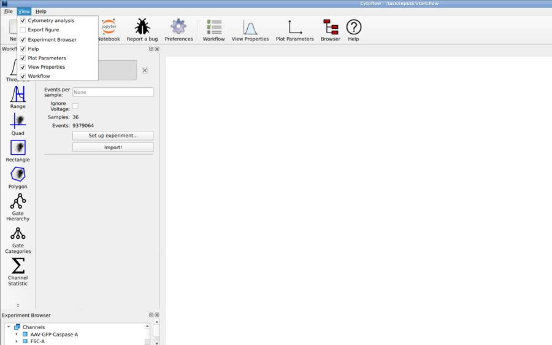
cd /task; cu key Escape; which xdotool wmctrl xwininfo xprop python3; echo $DISPLAY; cat $(which cu) | head -50
/usr/bin/xdotool
/usr/bin/xwininfo
/usr/bin/xprop
/usr/bin/python3
:1
#!/bin/bash
# Computer-use helper: the agent's only way to act on the screen.
# cu screenshot [path] -> PNG of the screen (default /tmp/screen.png); prints path
# cu click X Y [left|right|double]
# cu move X Y | cu drag X1 Y1 X2 Y2 | cu scroll X Y up|down [N]
# cu type "text" (keystrokes) | cu paste "text" (clipboard) | cu key KEYS (e.g. ctrl+s, Return)
# cu cursor -> current mouse position
export DISPLAY=${DISPLAY:-:1}
cmd=$1; shift
case "$cmd" in
screenshot) out=${1:-/tmp/screen.png}; scrot -o "$out" && echo "$out" ;;
click) xdotool mousemove "$1" "$2"; case "${3:-left}" in
left) xdotool click 1;; right) xdotool click 3;; double) xdotool click --repeat 2 1;; esac ;;
move) xdotool mousemove "$1" "$2" ;;
drag) xdotool mousemove "$1" "$2" mousedown 1 mousemove --sync "$3" "$4" mouseup 1 ;;
scroll) xdotool mousemove "$1" "$2"; b=$([ "$3" = up ] && echo 4 || echo 5); xdotool click --repeat "${4:-3}" $b ;;
type) xdotool type --delay 50 -- "$1" ;;
# paste: put text on the clipboard (detached owner process so it survives this command) then ctrl+v
# paste: own the clipboard (no -loops: Qt asks for TARGETS first, then the text), press ctrl+v,
# give Qt a moment to fetch it, then release. Robust both locally and on Modal.
paste) printf '%s' "$1" | xclip -quiet -selection clipboard -i >/dev/null 2>&1 & cp=$!
sleep 0.3; xdotool key ctrl+v; sleep 1; kill $cp 2>/dev/null; true ;;
key) xdotool key -- "$1" ;;
cursor) xdotool getmouselocation ;;
*) sed -n '2,9p' "$0"; exit 1 ;;
esaccd /task; export DISPLAY=:1; xwininfo -root -tree | grep -v "has no name" | head -30
Parent window id: 0x0 (none)
16 children:
0xe00025 "cytoflow": ("cytoflow" "cytoflow") 213x170+44+41 +44+41
0xe00019 "Qt Clipboard Requestor Window": () 3x3+0+0 +0+0
0xe00008 "cytoflow": () 1x1+0+0 +0+0
0xe00004 "Qt Selection Owner for cytoflow": () 3x3+0+0 +0+0
0xc0000e "Openbox": ("" (none)) 1x1+-100+-100 +-100+-100
1 child:
1 child:
1 child:
3 children:
2 children:
56 children:
0xe00006 "Cytoflow - /task/inputs/start.flow": ("cytoflow" "cytoflow") 2082x1171+1+20 +1+20
4 children:
12 children:
2 children:
1 child:
1 child:
1 child:cd /task; export DISPLAY=:1; cu click 700 9 double; sleep 2; xwininfo -root -tree | grep "Cytoflow -"; cu screenshot /tmp/screen.png
{
"file_path": "/tmp/screen.png"
} 0xe00006 "Cytoflow - /task/inputs/start.flow": ("cytoflow" "cytoflow") 1440x881+0+19 +0+19
/tmp/screen.png
cd /task; cu click 408 713; sleep 1; cu click 408 614; sleep 1; cu click 1431 817; sleep 1; cu screenshot /tmp/screen.png
{
"file_path": "/tmp/screen.png"
}/tmp/screen.png
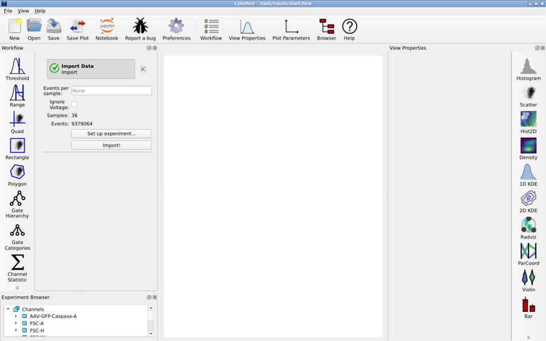
cd /task; cu click 408 784; sleep 1; cu click 1393 390; sleep 2; cu screenshot /tmp/screen.png
{
"file_path": "/tmp/screen.png"
}/tmp/screen.png
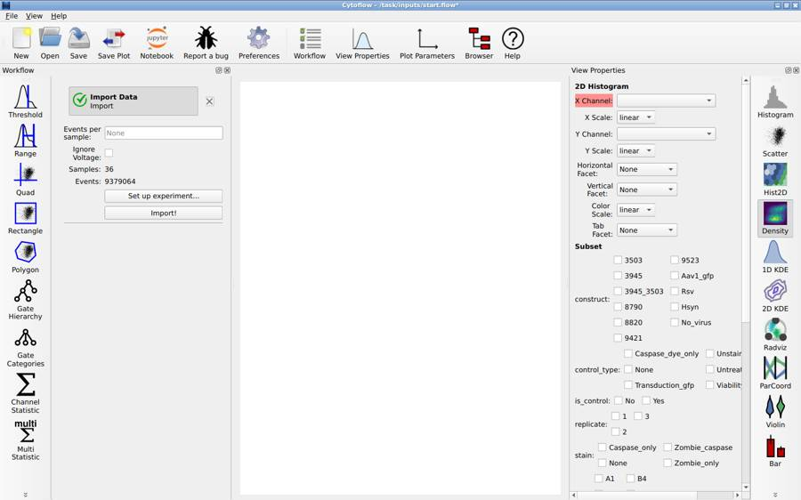
cd /task; cu click 1196 181; sleep 1; cu screenshot /tmp/screen.png
{
"file_path": "/tmp/screen.png"
}/tmp/screen.png
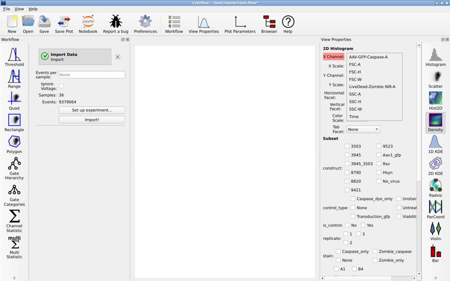
cd /task; cu click 1135 206; sleep 1; cu click 1196 241; sleep 1; cu screenshot /tmp/screen.png
{
"file_path": "/tmp/screen.png"
}/tmp/screen.png
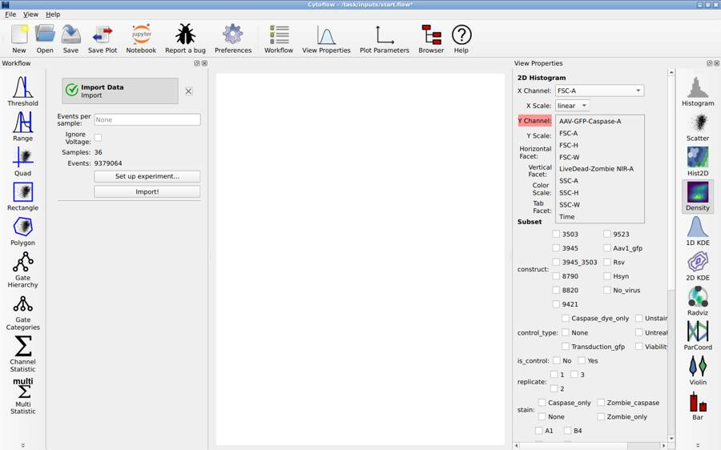
cd /task; cu click 1135 361; sleep 20; cu screenshot /tmp/screen.png
{
"file_path": "/tmp/screen.png"
}/tmp/screen.png
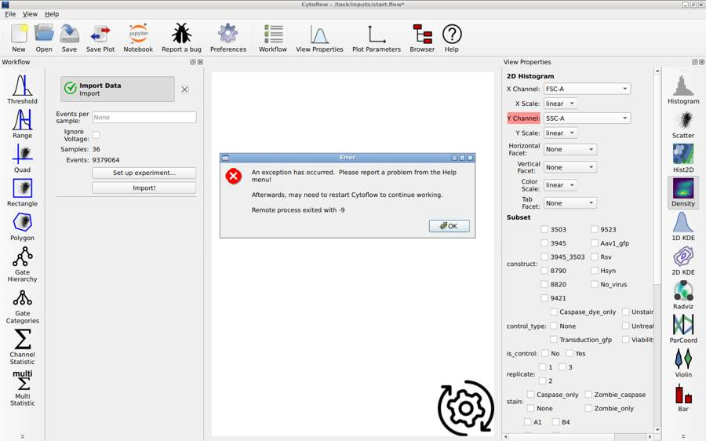
free -m; cat /sys/fs/cgroup/memory.max 2>/dev/null; cat /sys/fs/cgroup/memory.current 2>/dev/null; ps aux --sort=-rss | head -8; nproc
total used free shared buff/cache available Mem: 7949 947 6916 15 349 7002 Swap: 0 0 0 USER PID %CPU %MEM VSZ RSS TTY STAT START TIME COMMAND cfapp 838 1.7 4.8 3577504 397152 ? Sl 19:07 0:03 /opt/cytoflow/cytoflow-1.3.2/cytoflow root 1020 1.3 2.4 5688524 202388 ? Sl 19:08 0:02 claude --verbose --output-format=stream-json --effort high --model claude-fable-5-2 --permission-mode=bypassPermissions --print root 815 0.0 0.4 232800 39104 ? S 19:07 0:00 Xvfb :1 -screen 0 1440x900x24 -nolisten tcp root 824 0.0 0.2 58956 23188 ? S 19:07 0:00 /usr/bin/python3 /usr/bin/websockify --web=/usr/share/novnc 6080 localhost:5900 cfapp 859 0.0 0.2 84344 22088 ? S 19:08 0:00 /opt/cytoflow/cytoflow-1.3.2/cytoflow -B -S -I -c from multiprocessing.resource_tracker import main;main(9) cfapp 927 0.0 0.1 5239172 16164 ? Sl 19:08 0:00 /opt/cytoflow/cytoflow-1.3.2/_internal/PyQt5/Qt5/libexec/QtWebEngineProcess --type=zygote --application-name=cytoflow --webengine-schemes=qrc:sLV --lang=en agent 834 0.0 0.1 142580 11316 ? Sl 19:07 0:00 openbox 4
ps -ef | head -40; dmesg 2>/dev/null | tail -5; whoami; cat /proc/838/cgroup; ls /sys/fs/cgroup | head
UID PID PPID C STIME TTY TIME CMD root 1 0 0 19:07 ? 00:00:00 /__modal/runch-agent root 2 0 0 19:07 ? 00:00:00 [kthreadd] root 3 2 0 19:07 ? 00:00:00 [pool_workqueue_release] root 4 2 0 19:07 ? 00:00:00 [kworker/R-rcu_gp] root 5 2 0 19:07 ? 00:00:00 [kworker/R-sync_wq] root 6 2 0 19:07 ? 00:00:00 [kworker/R-kvfree_rcu_reclaim] root 7 2 0 19:07 ? 00:00:00 [kworker/R-slub_flushwq] root 8 2 0 19:07 ? 00:00:00 [kworker/R-netns] root 9 2 0 19:07 ? 00:00:00 [kworker/0:0-events_long] root 10 2 0 19:07 ? 00:00:00 [kworker/0:0H-kblockd] root 11 2 0 19:07 ? 00:00:00 [kworker/0:1-events_long] root 12 2 0 19:07 ? 00:00:00 [kworker/u16:0-ext4-rsv-conversion] root 13 2 0 19:07 ? 00:00:00 [kworker/R-mm_percpu_wq] root 14 2 0 19:07 ? 00:00:00 [ksoftirqd/0] root 15 2 0 19:07 ? 00:00:00 [rcu_sched] root 16 2 0 19:07 ? 00:00:00 [rcu_exp_par_gp_kthread_worker/0] root 17 2 0 19:07 ? 00:00:00 [rcu_exp_gp_kthread_worker] root 18 2 0 19:07 ? 00:00:00 [migration/0] root 19 2 0 19:07 ? 00:00:00 [cpuhp/0] root 20 2 0 19:07 ? 00:00:00 [cpuhp/1] root 21 2 0 19:07 ? 00:00:00 [migration/1] root 22 2 0 19:07 ? 00:00:00 [ksoftirqd/1] root 23 2 0 19:07 ? 00:00:00 [kworker/1:0-events] root 24 2 0 19:07 ? 00:00:00 [kworker/1:0H-kblockd] root 25 2 0 19:07 ? 00:00:00 [cpuhp/2] root 26 2 0 19:07 ? 00:00:00 [migration/2] root 27 2 0 19:07 ? 00:00:00 [ksoftirqd/2] root 28 2 0 19:07 ? 00:00:00 [kworker/2:0-events_long] root 29 2 0 19:07 ? 00:00:00 [kworker/2:0H-kblockd] root 30 2 0 19:07 ? 00:00:00 [cpuhp/3] root 31 2 0 19:07 ? 00:00:00 [migration/3] root 32 2 0 19:07 ? 00:00:00 [ksoftirqd/3] root 33 2 0 19:07 ? 00:00:00 [kworker/3:0-events] root 34 2 0 19:07 ? 00:00:00 [kworker/3:0H-kblockd] root 36 2 0 19:07 ? 00:00:00 [kworker/u16:1-events_unbound] root 37 2 0 19:07 ? 00:00:00 [kworker/u16:2-events_unbound] root 38 2 0 19:07 ? 00:00:00 [kworker/u16:3-writeback] root 39 2 0 19:07 ? 00:00:00 [kdevtmpfs] root 40 2 0 19:07 ? 00:00:00 [kworker/R-inet_frag_wq] [ 193.518522] [ 1020] 0 1020 1422131 36860 36858 2 0 1028096 0 0 claude [ 193.518567] [ 1225] 0 1225 1224 92 90 2 0 53248 0 0 bash [ 193.518610] [ 1229] 0 1229 784 29 28 1 0 49152 0 0 sleep [ 193.518661] oom-kill:constraint=CONSTRAINT_NONE,nodemask=(null),cpuset=/,mems_allowed=0,global_oom,task_memcg=/,task=cytoflow,pid=861,uid=1002 [ 193.518758] Out of memory: Killed process 861 (cytoflow) total-vm:8535584kB, anon-rss:7309212kB, file-rss:8kB, shmem-rss:28kB, UID:1002 pgtables:14928kB oom_score_adj:0 root 0::/ cgroup.controllers cgroup.max.depth cgroup.max.descendants cgroup.pressure cgroup.procs cgroup.stat cgroup.subtree_control cgroup.threads cpu.pressure cpu.stat
ps -ef | awk '$1!="root" || $3!=2' | grep -v kworker; cat /proc/838/cmdline | tr '\0' ' '; echo; ls -la /opt/cytoflow/ ; ls / ; ls /__modal 2>/dev/null | head
UID PID PPID C STIME TTY TIME CMD root 1 0 0 19:07 ? 00:00:00 /__modal/runch-agent root 2 0 0 19:07 ? 00:00:00 [kthreadd] root 809 1 0 19:07 ? 00:00:00 /usr/bin/tini -- /entrypoint.sh sh -c sleep infinity root 812 809 0 19:07 ? 00:00:00 /bin/bash /entrypoint.sh sh -c sleep infinity root 815 812 0 19:07 ? 00:00:00 Xvfb :1 -screen 0 1440x900x24 -nolisten tcp root 822 812 0 19:07 ? 00:00:00 /bin/bash /entrypoint.sh sh -c sleep infinity root 823 812 0 19:07 ? 00:00:00 x11vnc -display :1 -forever -shared -nopw -quiet -rfbport 5900 root 824 812 0 19:07 ? 00:00:00 /usr/bin/python3 /usr/bin/websockify --web=/usr/share/novnc 6080 localhost:5900 root 825 822 0 19:07 ? 00:00:00 runuser -u agent -- env DISPLAY=:1 HOME=/home/agent LANG=C.UTF-8 LC_ALL=C.UTF-8 openbox root 830 812 0 19:07 ? 00:00:00 /bin/bash /entrypoint.sh sh -c sleep infinity root 831 830 0 19:07 ? 00:00:00 runuser -u cfapp -- env DISPLAY=:1 HOME=/home/cfapp XDG_RUNTIME_DIR=/tmp/runtime-cfapp LANG=C.UTF-8 LC_ALL=C.UTF-8 bash -c umask 002; cd /task; exec start-cytoflow cfapp 833 831 0 19:07 ? 00:00:00 /bin/bash /usr/local/bin/start-cytoflow agent 834 825 0 19:07 ? 00:00:00 openbox cfapp 838 833 1 19:07 ? 00:00:03 /opt/cytoflow/cytoflow-1.3.2/cytoflow cfapp 859 838 0 19:08 ? 00:00:00 /opt/cytoflow/cytoflow-1.3.2/cytoflow -B -S -I -c from multiprocessing.resource_tracker import main;main(9) cfapp 888 838 0 19:08 ? 00:00:00 /opt/cytoflow/cytoflow-1.3.2/_internal/PyQt5/Qt5/libexec/QtWebEngineProcess --type=zygote --no-zygote-sandbox --application-name=cytoflow --webengine-schemes=qrc:sLV --lang=en cfapp 909 838 0 19:08 ? 00:00:00 /opt/cytoflow/cytoflow-1.3.2/_internal/PyQt5/Qt5/libexec/QtWebEngineProcess --type=zygote --application-name=cytoflow --webengine-schemes=qrc:sLV --lang=en cfapp 911 909 0 19:08 ? 00:00:00 /opt/cytoflow/cytoflow-1.3.2/_internal/PyQt5/Qt5/libexec/QtWebEngineProcess --type=zygote --application-name=cytoflow --webengine-schemes=qrc:sLV --lang=en cfapp 927 911 0 19:08 ? 00:00:00 /opt/cytoflow/cytoflow-1.3.2/_internal/PyQt5/Qt5/libexec/QtWebEngineProcess --type=zygote --application-name=cytoflow --webengine-schemes=qrc:sLV --lang=en root 1018 1 0 19:08 ? 00:00:00 su root -s /bin/bash -c set -o pipefail; export PATH=$HOME/.local/bin:$PATH; cd /task; IS_SANDBOX=1 CLAUDE_CODE_MAX_OUTPUT_TOKENS=128000 ANTHROPIC_MODEL=claude-fable-5-2 CLAUDE_CODE_EFFORT_LEVEL=high claude --verbose --output-format=stream-json --effort high --model claude-fable-5-2 --permission-mode=bypassPermissions --print < /tmp/instruction.md > /logs/agent/claude-code.txt 2>&1; echo exit=$? root 1019 1018 0 19:08 ? 00:00:00 bash -c set -o pipefail; export PATH=$HOME/.local/bin:$PATH; cd /task; IS_SANDBOX=1 CLAUDE_CODE_MAX_OUTPUT_TOKENS=128000 ANTHROPIC_MODEL=claude-fable-5-2 CLAUDE_CODE_EFFORT_LEVEL=high claude --verbose --output-format=stream-json --effort high --model claude-fable-5-2 --permission-mode=bypassPermissions --print < /tmp/instruction.md > /logs/agent/claude-code.txt 2>&1; echo exit=$? root 1020 1019 1 19:08 ? 00:00:02 claude --verbose --output-format=stream-json --effort high --model claude-fable-5-2 --permission-mode=bypassPermissions --print root 1091 1 0 19:08 ? 00:00:00 [xclip] <defunct> root 1249 1248 0 19:11 ? 00:00:00 ps -ef root 1250 1248 0 19:11 ? 00:00:00 awk $1!="root" || $3!=2 /opt/cytoflow/cytoflow-1.3.2/cytoflow total 12 drwxr-x--- 3 cfapp cfapp 4096 Nov 5 00:06 . drwxr-xr-x 3 root root 4096 Nov 5 00:06 .. drwxr-x--- 3 cfapp cfapp 4096 Jul 5 21:48 cytoflow-1.3.2 __modal bin bin.usr-is-merged boot dev entrypoint.sh etc home installed-agent lib lib.usr-is-merged lib64 logs media mnt opt proc root run sbin sbin.usr-is-merged srv sys task tmp usr var runch-agent
cat /entrypoint.sh; echo ----; cat /usr/local/bin/start-cytoflow
#!/bin/bash
# Starts: virtual screen -> window manager -> VNC/noVNC (for human viewing) -> Cytoflow.
set -e
# Locale must reach the GUI process explicitly (Modal does not propagate image ENV through runuser);
# without it Qt pops "failed to create compose table" and swallows keystrokes.
export LANG=C.UTF-8 LC_ALL=C.UTF-8
if [ "${OFFLINE:-1}" = "1" ]; then
# Block all outbound traffic except replies to inbound connections (so noVNC viewing still works).
if iptables -P OUTPUT DROP 2>/dev/null; then
iptables -A OUTPUT -o lo -j ACCEPT
iptables -A OUTPUT -m state --state ESTABLISHED,RELATED -j ACCEPT
echo "[env] offline mode: outbound network blocked"
else
echo "[env] WARNING: could not block network (run with --cap-add NET_ADMIN)"
fi
fi
# Bind-mounted outputs folder: make it writable by both the agent and the Cytoflow user.
chown agent:task /task/outputs 2>/dev/null; chmod 2777 /task/outputs 2>/dev/null || true
as_agent() { runuser -u agent -- env DISPLAY=$DISPLAY HOME=/home/agent LANG=$LANG LC_ALL=$LC_ALL "$@"; }
Xvfb $DISPLAY -screen 0 $SCREEN_GEOMETRY -nolisten tcp &
for i in $(seq 1 50); do xdpyinfo -display $DISPLAY >/dev/null 2>&1 && break; sleep 0.2; done
as_agent openbox &
x11vnc -display $DISPLAY -forever -shared -nopw -quiet -rfbport 5900 &
websockify --web=/usr/share/novnc 6080 localhost:5900 >/dev/null 2>&1 &
echo "[env] watch the screen at http://localhost:6080/vnc.html?autoconnect=1&resize=scale"
as_cfapp() { runuser -u cfapp -- env DISPLAY=$DISPLAY HOME=/home/cfapp XDG_RUNTIME_DIR=/tmp/runtime-cfapp LANG=$LANG LC_ALL=$LC_ALL "$@"; }
mkdir -p /tmp/runtime-cfapp && chown cfapp /tmp/runtime-cfapp && chmod 700 /tmp/runtime-cfapp
# umask 002: files Cytoflow saves into /task/outputs stay readable/writable by the agent.
# cd /task: Cytoflow's open/save dialogs start in the task folder.
as_cfapp bash -c "umask 002; cd /task; exec start-cytoflow" &
wait
----
#!/bin/bash
# Launch Cytoflow full-screen-ish; restart it if the agent closes it.
BIN=$(find /opt/cytoflow -maxdepth 3 -type f -name 'cytoflow' -perm -u+x | head -1)
[ -z "$BIN" ] && { echo "cytoflow binary not found under /opt/cytoflow"; exit 1; }
while true; do
"$BIN" >/tmp/cytoflow.log 2>&1
sleep 1
donecd /task; cu click 915 461; sleep 1; cu click 1430 9; sleep 2; cu screenshot /tmp/screen.png
{
"file_path": "/tmp/screen.png"
}/tmp/screen.png

thinking
Cytoflow ran out of memory plotting all 9.4M events, so I shut it down and the launcher is restarting it. I'm reloading the workflow and will limit every view to a well subset from here on.
cd /task; sleep 12; cu screenshot /tmp/screen.png; free -m | head -2; ps -ef | grep -c "[c]ytoflow-1.3.2/cytoflow"
{
"file_path": "/tmp/screen.png"
}/tmp/screen.png
total used free shared buff/cache available
Mem: 7949 1222 6134 15 857 6727
3
cd /task; cu click 700 9 double; sleep 2; cu click 408 713; sleep 1; cu click 408 614; sleep 1; cu click 1431 817; sleep 1; cu click 408 784; sleep 1; cu click 89 75; sleep 2; cu screenshot /tmp/screen.png
{
"file_path": "/tmp/screen.png"
}/tmp/screen.png
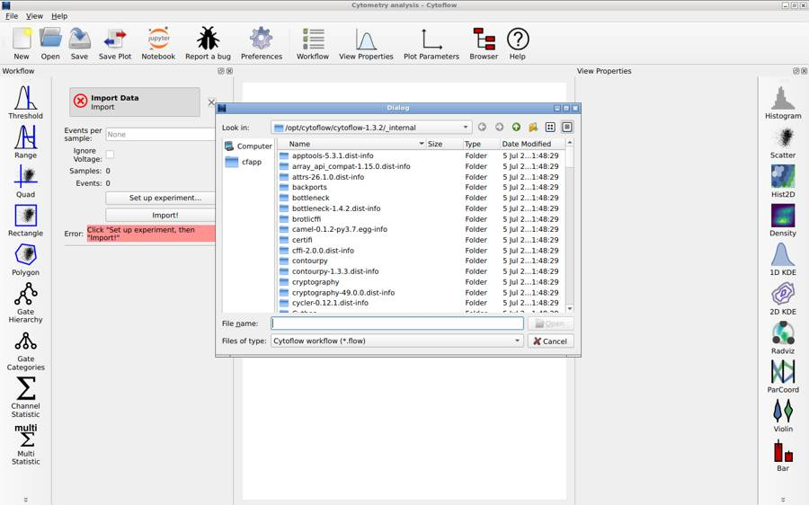
cd /task; cu click 706 576; cu paste "/task/inputs/start.flow"; sleep 1; cu key Return; sleep 3; cu screenshot /tmp/screen.png
{
"file_path": "/tmp/screen.png"
}/tmp/screen.png
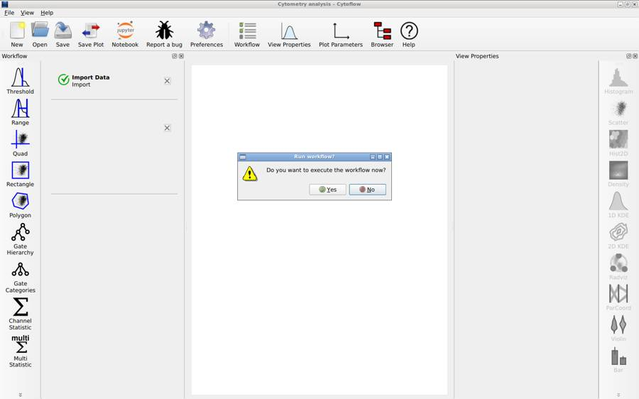
cd /task; cu click 738 427; for i in $(seq 1 12); do sleep 5; ps -eo pid,rss,pcpu,args --sort=-rss | grep "[c]ytoflow" | head -2 | awk '{print $1,$2/1024,$3}' | tr '\n' ';'; echo; done1297 1807.12 14.0;1279 514.988 6.2; 1297 1749.64 13.7;1279 516.723 5.7; 1297 1749.64 12.6;1279 516.723 5.2; 1297 1749.64 11.6;1279 516.723 4.8; 1297 1749.64 10.7;1279 516.676 4.5; 1297 1749.64 10.0;1279 516.676 4.2; 1297 1749.64 9.4;1279 516.676 3.9; 1297 1749.64 8.8;1279 516.676 3.7; 1297 1749.64 8.3;1279 516.676 3.5; 1297 1749.64 7.9;1279 516.676 3.3; 1297 1749.64 7.5;1279 516.676 3.1; 1297 1749.64 7.1;1279 516.668 3.0;
cd /task; cu click 240 181; sleep 1; cu click 1393 390; sleep 2; cu click 1213 580; sleep 2; cu screenshot /tmp/screen.png
{
"file_path": "/tmp/screen.png"
}/tmp/screen.png
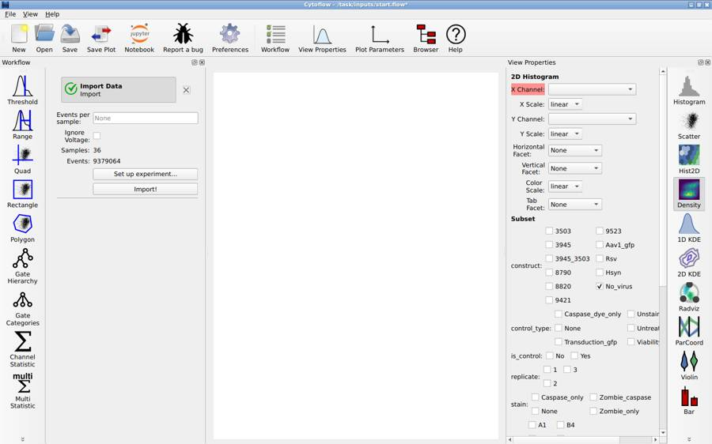
cd /task; cu click 1196 181; sleep 1; cu click 1135 206; sleep 1; cu click 1196 241; sleep 1; cu click 1135 361; for i in 1 2 3 4 5 6; do sleep 4; ps -eo rss,pcpu,args --sort=-rss | grep "[c]ytoflow" | head -1 | awk '{print $1/1024,$2}'; done; cu screenshot /tmp/screen.png{
"file_path": "/tmp/screen.png"
}1780.8 8.7 1780.8 8.5 1780.8 8.2 1780.8 8.0 1780.8 7.8 1780.8 7.6 /tmp/screen.png
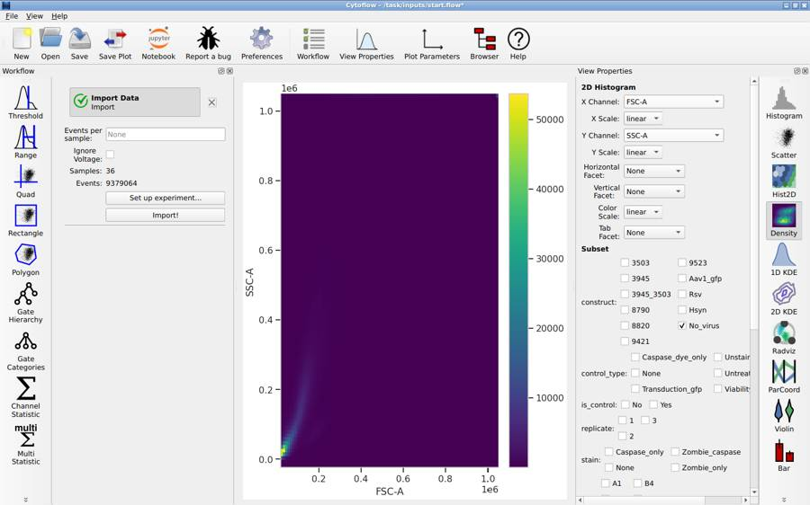
cd /task; cu click 1143 378; sleep 1; cu screenshot /tmp/screen.png
{
"file_path": "/tmp/screen.png"
}/tmp/screen.png
cd /task; cu click 1127 403; sleep 8; cu screenshot /tmp/screen.png
{
"file_path": "/tmp/screen.png"
}/tmp/screen.png
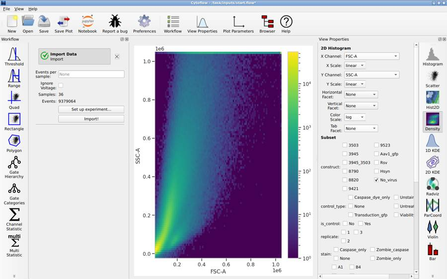
cd /task; cu click 1143 211; sleep 1; cu click 1127 236; sleep 6; cu click 1143 271; sleep 1; cu click 1127 296; sleep 10; cu screenshot /tmp/screen.png
{
"file_path": "/tmp/screen.png"
}/tmp/screen.png
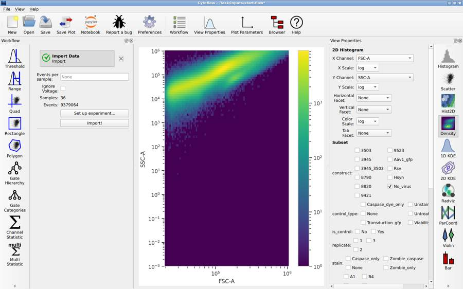
cd /task; cu click 767 75; sleep 2; cu screenshot /tmp/screen.png
{
"file_path": "/tmp/screen.png"
}/tmp/screen.png
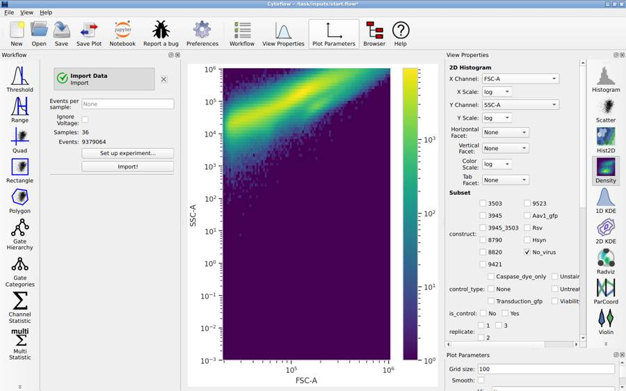
cd /task; cu drag 1232 804 1232 420; sleep 2; cu screenshot /tmp/screen.png
{
"file_path": "/tmp/screen.png"
}/tmp/screen.png
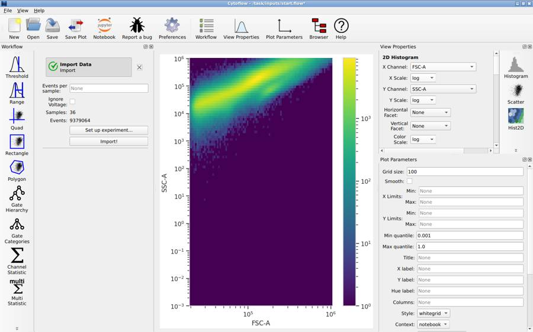
cd /task; cu click 1272 578; cu type "3000"; cu key Return; sleep 8; cu screenshot /tmp/screen.png
{
"file_path": "/tmp/screen.png"
}/tmp/screen.png
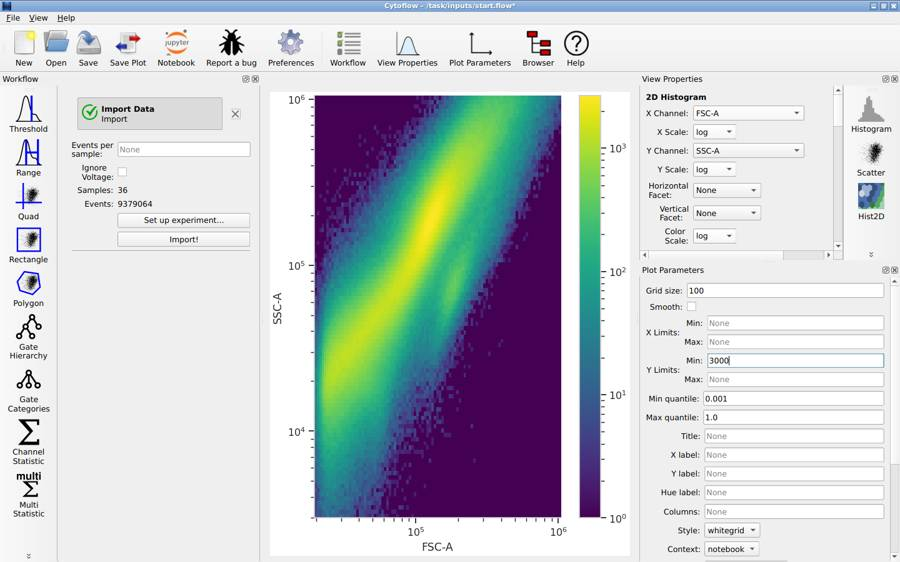
cd /task; cu click 1393 180; sleep 2; cu screenshot /tmp/screen.png
{
"file_path": "/tmp/screen.png"
}/tmp/screen.png
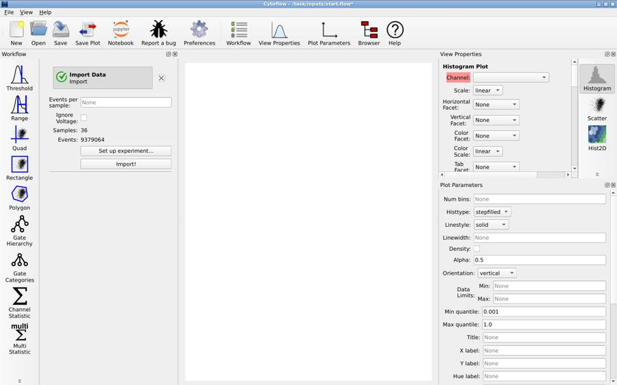
cd /task; cu drag 1232 420 1232 700; sleep 2; cu screenshot /tmp/screen.png
{
"file_path": "/tmp/screen.png"
}/tmp/screen.png
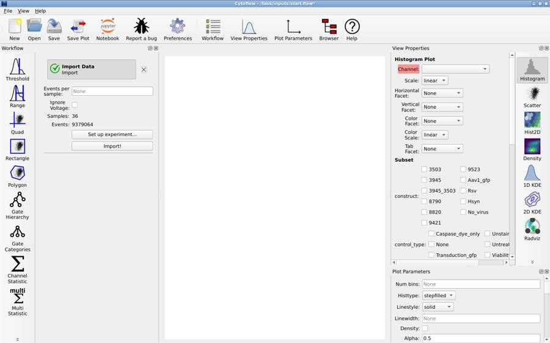
cd /task; cu click 1213 500; sleep 0.5; cu click 1213 528; sleep 0.5; cu click 1213 444; sleep 0.5; cu click 1111 472; sleep 0.5; cu click 1157 244; sleep 1; cu screenshot /tmp/screen.png
{
"file_path": "/tmp/screen.png"
}/tmp/screen.png
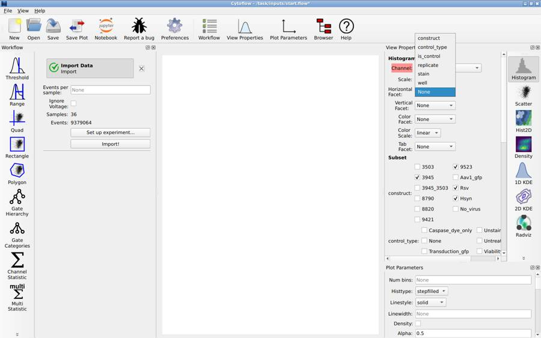
cd /task; cu click 1141 101; sleep 1; cu click 1157 281; sleep 1; cu click 1141 210; sleep 1; cu click 1190 181; sleep 1; cu screenshot /tmp/s1.png; cu click 1135 374; sleep 12; cu screenshot /tmp/screen.png
{
"file_path": "/tmp/screen.png"
}/tmp/s1.png /tmp/screen.png
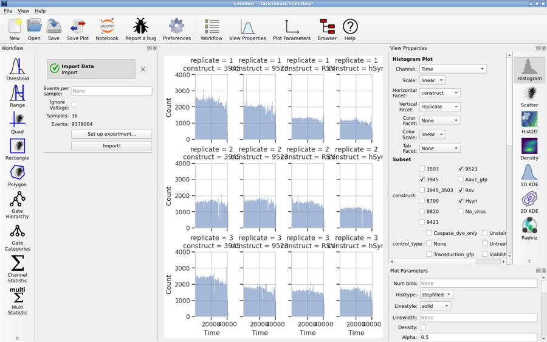
cd /task; cu click 1111 584; sleep 0.5; cu click 1111 444; sleep 0.5; cu click 1111 556; sleep 0.5; cu click 1111 528; sleep 0.5; cu click 1213 500; sleep 0.5; cu click 1213 528; sleep 0.5; cu click 1213 444; sleep 0.5; cu click 1111 472; sleep 15; cu screenshot /tmp/screen.png
{
"file_path": "/tmp/screen.png"
}/tmp/screen.png
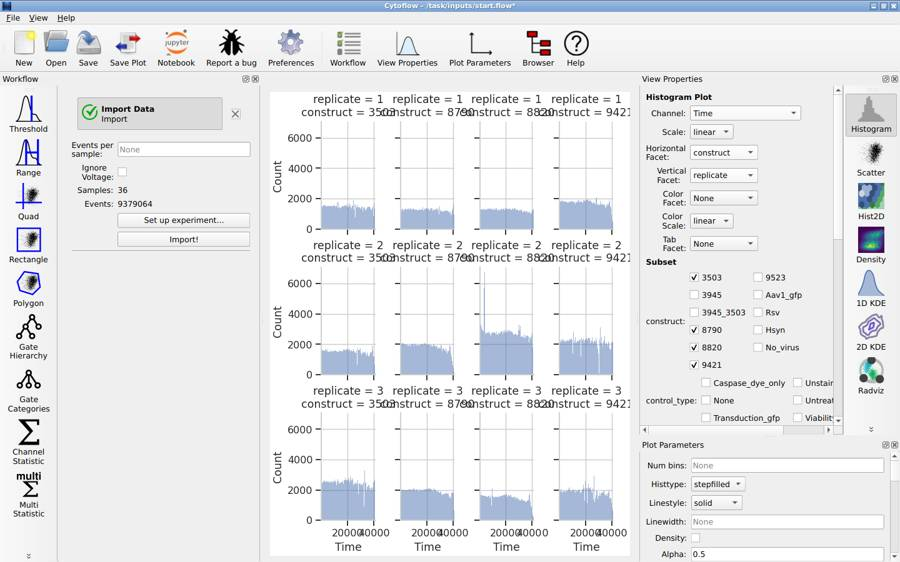
cd /task; cu click 1111 500; sleep 0.5; cu click 1213 472; sleep 0.5; cu click 1213 556; sleep 0.5; cu click 1111 584; sleep 0.5; cu click 1111 444; sleep 0.5; cu click 1111 556; sleep 0.5; cu click 1111 528; sleep 15; cu screenshot /tmp/screen.png
{
"file_path": "/tmp/screen.png"
}/tmp/screen.png
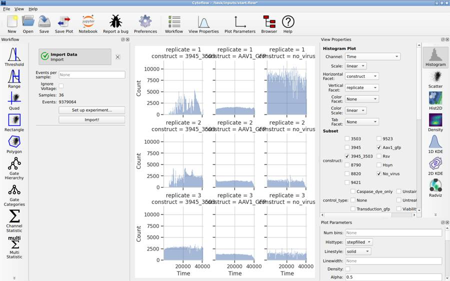
thinking
C1 and C2 in 3945_3503 (reps 1–2) start late and have very irregular event rates, unlike the other wells. I'm now splitting the no-virus controls out by well to check each one.
cd /task; cu click 1111 500; sleep 0.5; cu click 1213 472; sleep 3; cu click 1157 244; sleep 1; cu screenshot /tmp/screen.png
{
"file_path": "/tmp/screen.png"
}/tmp/screen.png
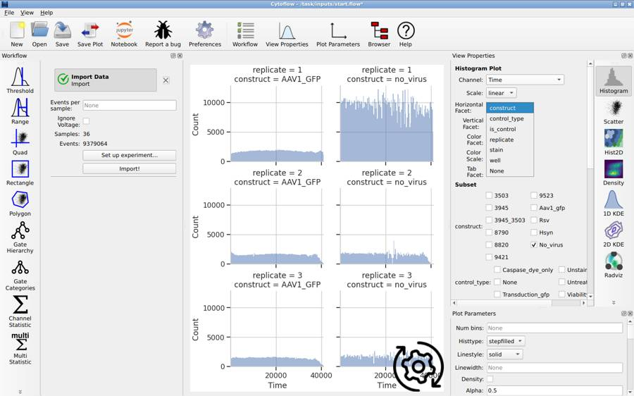
cd /task; cu click 1125 364; sleep 2; cu click 1157 281; sleep 1; cu screenshot /tmp/s1.png; cu click 1128 353; sleep 12; cu screenshot /tmp/screen.png
{
"file_path": "/tmp/screen.png"
}/tmp/s1.png /tmp/screen.png
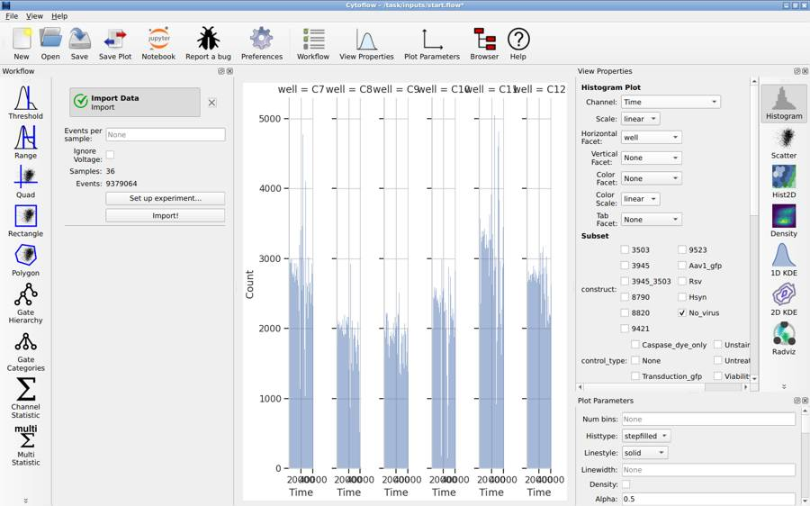
cd /task; cu click 1157 244; sleep 1; cu click 1128 268; sleep 2; cu click 1157 281; sleep 1; cu click 1125 257; sleep 12; cu screenshot /tmp/screen.png
{
"file_path": "/tmp/screen.png"
}/tmp/screen.png
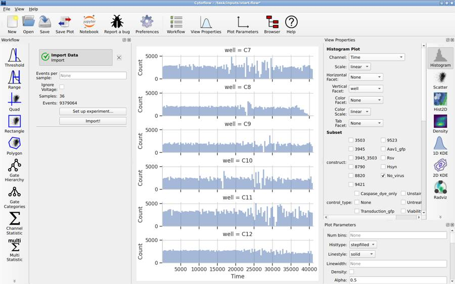
cd /task; cu click 1213 500; sleep 0.5; cu click 1213 528; sleep 0.5; cu click 1213 556; sleep 12; cu screenshot /tmp/t_A1-6.png; cu click 1213 444; sleep 0.5; cu click 1111 472; sleep 0.5; cu click 1213 500; sleep 0.5; cu click 1213 528; sleep 12; cu screenshot /tmp/t_A7-12.png
{
"file_path": "/tmp/t_A1-6.png"
}{
"file_path": "/tmp/t_A7-12.png"
}/tmp/t_A1-6.png /tmp/t_A7-12.png
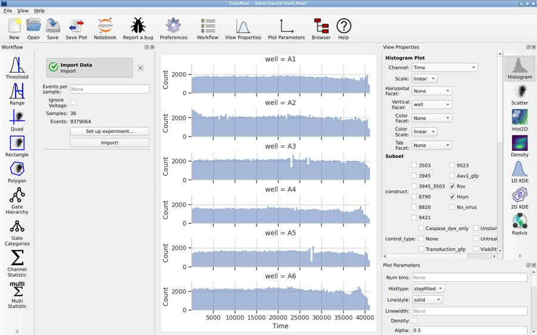
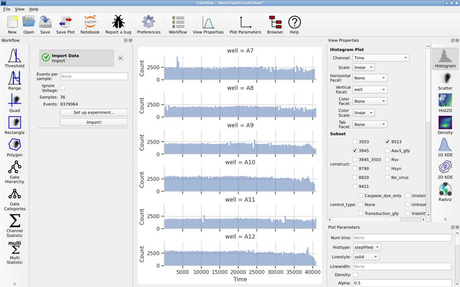
cd /task; cu click 1111 584; sleep 0.5; cu click 1111 444; sleep 0.5; cu click 1213 444; sleep 0.5; cu click 1111 472; sleep 12; cu screenshot /tmp/t_B1-6.png; cu click 1111 556; sleep 0.5; cu click 1111 528; sleep 0.5; cu click 1111 584; sleep 0.5; cu click 1111 444; sleep 12; cu screenshot /tmp/t_B7-12.png; cu click 1111 500; sleep 0.5; cu click 1213 472; sleep 0.5; cu click 1111 556; sleep 0.5; cu click 1111 528; sleep 12; cu screenshot /tmp/t_C1-6.png
{
"file_path": "/tmp/t_B1-6.png"
}{
"file_path": "/tmp/t_B7-12.png"
}{
"file_path": "/tmp/t_C1-6.png"
}/tmp/t_B1-6.png /tmp/t_B7-12.png /tmp/t_C1-6.png
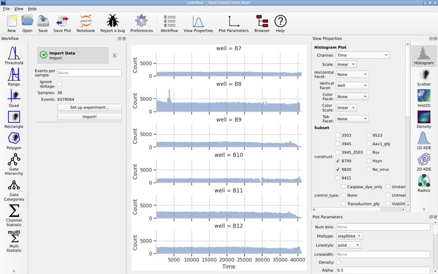
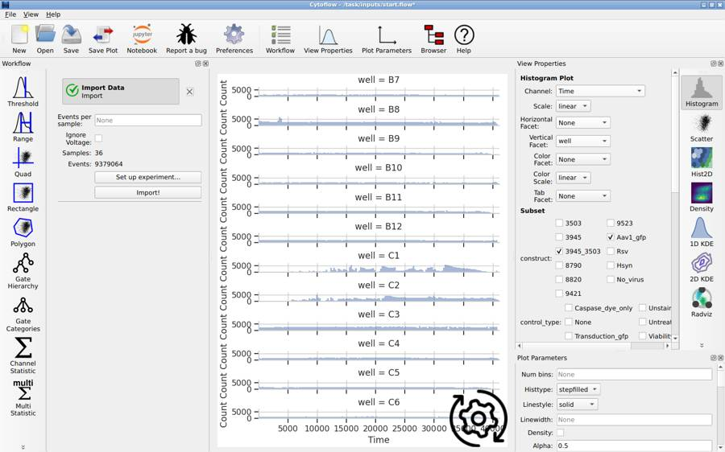
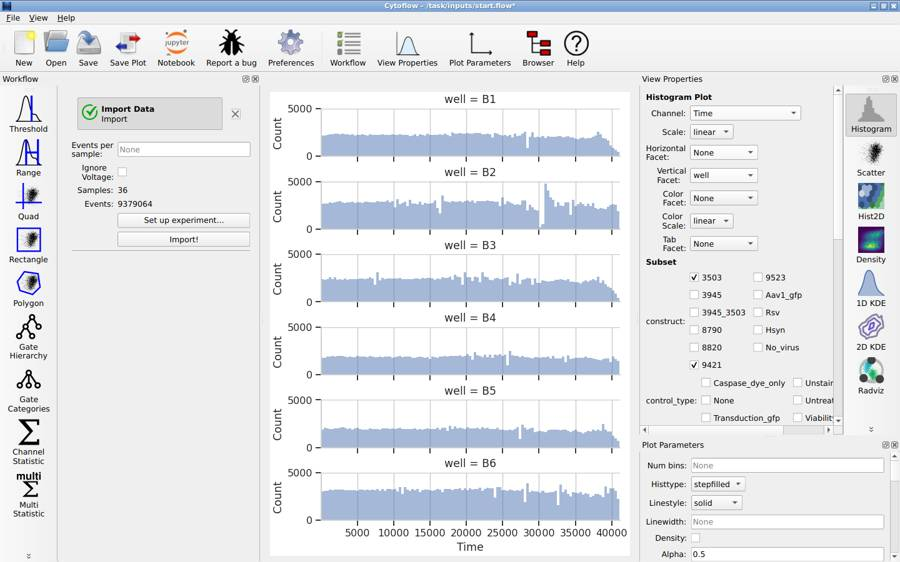
cd /task; sleep 10; cu screenshot /tmp/t_C1-6.png
{
"file_path": "/tmp/t_C1-6.png"
}/tmp/t_C1-6.png
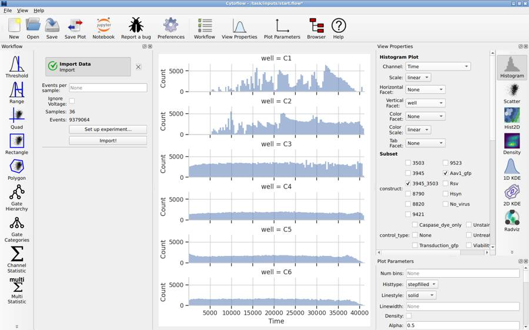
cd /task; cu click 1393 390; sleep 6; cu click 1196 181; sleep 1; cu screenshot /tmp/s1.png; cu click 1150 157; sleep 5; cu click 1196 241; sleep 1; cu screenshot /tmp/s2.png; cu click 1150 217; sleep 5; cu screenshot /tmp/screen.png
{
"file_path": "/tmp/screen.png"
}/tmp/s1.png /tmp/s2.png /tmp/screen.png
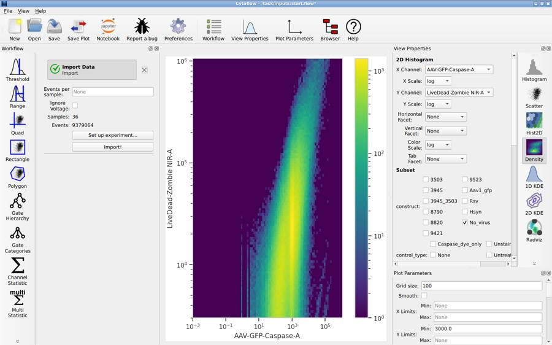
thinking
Only C1 and C2 look abnormal in the time QC, with no events for the first ~5 s and then an erratic rate. Next I'll set the Live and Caspase gates on the fluorescence controls per well.
cd /task; cu click 1272 857; cu key ctrl+a; cu key BackSpace; cu key Return; sleep 4; cu click 1143 211; sleep 1; cu click 1137 235; sleep 4; cu click 1143 271; sleep 1; cu click 1137 295; sleep 4; cu click 1161 305; sleep 1; cu screenshot /tmp/screen.png
{
"file_path": "/tmp/screen.png"
}/tmp/screen.png
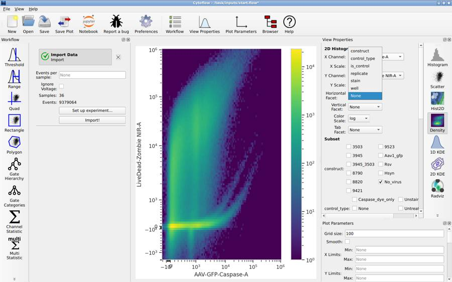
cd /task; cu click 1155 186; sleep 15; cu screenshot /tmp/screen.png
{
"file_path": "/tmp/screen.png"
}/tmp/screen.png
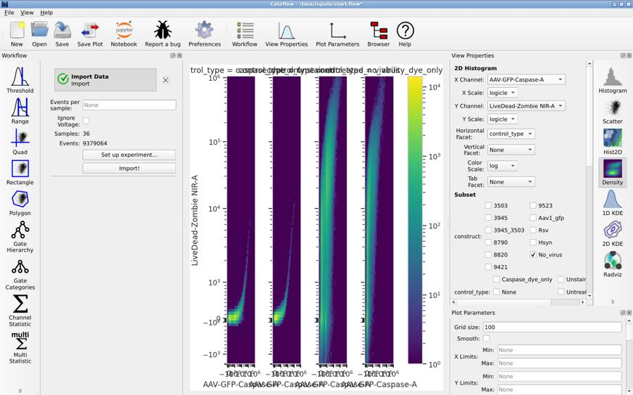
cd /task; cu click 1161 305; sleep 1; cu click 1135 425; sleep 3; cu click 1277 637; sleep 1; cu click 1213 580; sleep 12; cu screenshot /tmp/screen.png
{
"file_path": "/tmp/screen.png"
}/tmp/screen.png
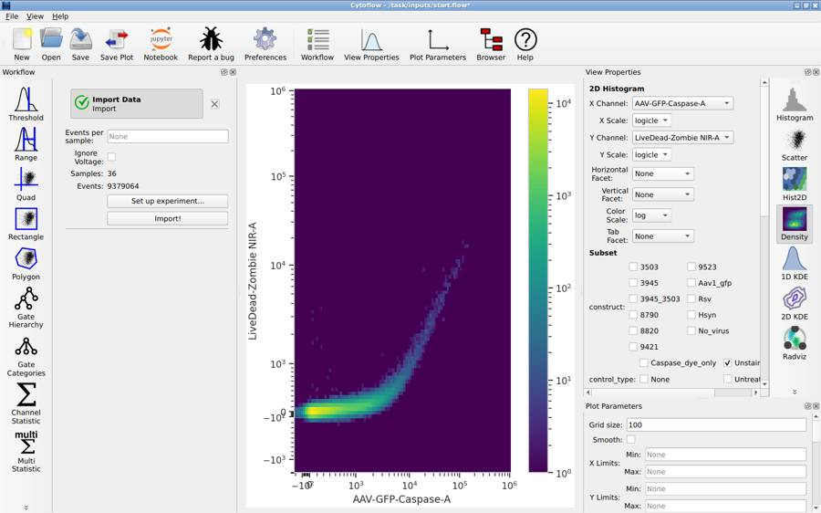
cd /task; cu drag 1232 700 1232 850; sleep 2; cu click 1277 693; sleep 1; cu click 1277 637; sleep 12; cu screenshot /tmp/c11.png; cu click 1129 637; sleep 1; cu click 1277 693; sleep 12; cu screenshot /tmp/c12.png
{
"file_path": "/tmp/c11.png"
}{
"file_path": "/tmp/c12.png"
}/tmp/c11.png /tmp/c12.png
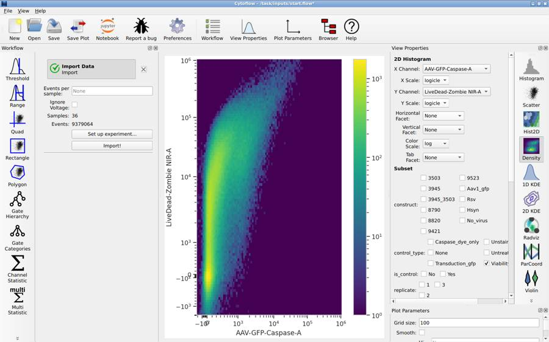
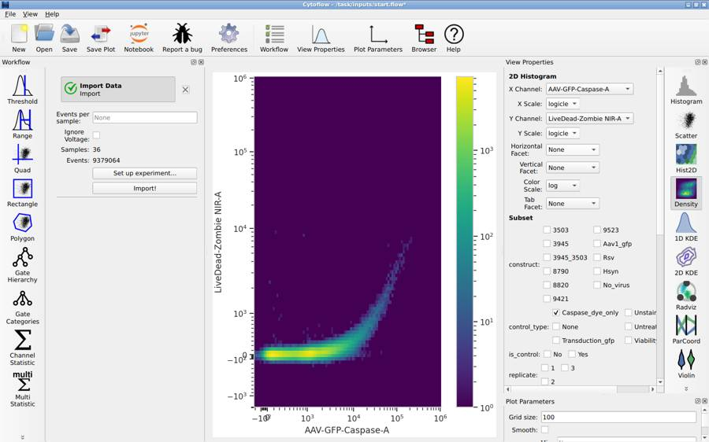
cd /task; cu click 1277 665; sleep 1; cu click 1129 637; sleep 14; cu screenshot /tmp/c789.png
{
"file_path": "/tmp/c789.png"
}/tmp/c789.png
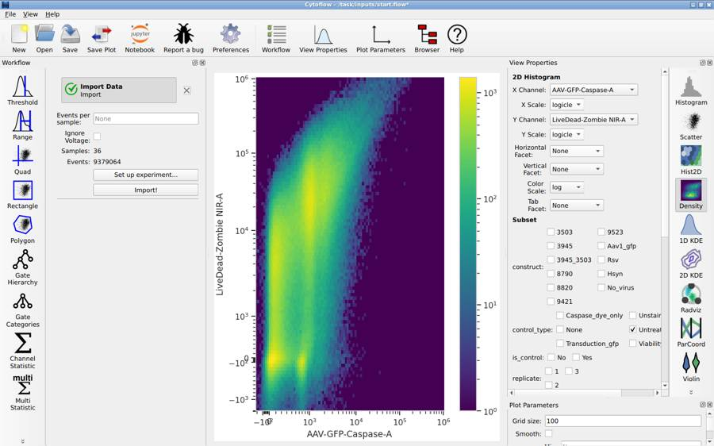
cd /task; date; cu click 1393 180; sleep 3; cu screenshot /tmp/screen.png
{
"file_path": "/tmp/screen.png"
}Tue Nov 10 19:24:00 UTC 2026 /tmp/screen.png
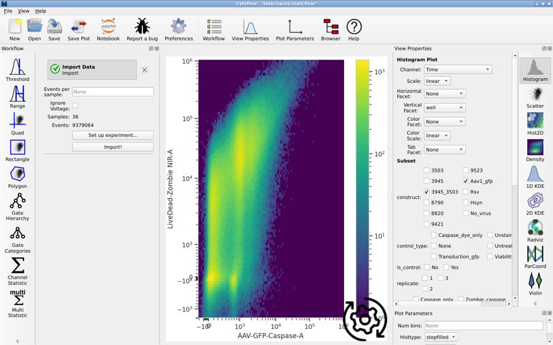
cd /task; cu click 45 460; sleep 3; cu screenshot /tmp/screen.png
{
"file_path": "/tmp/screen.png"
}/tmp/screen.png
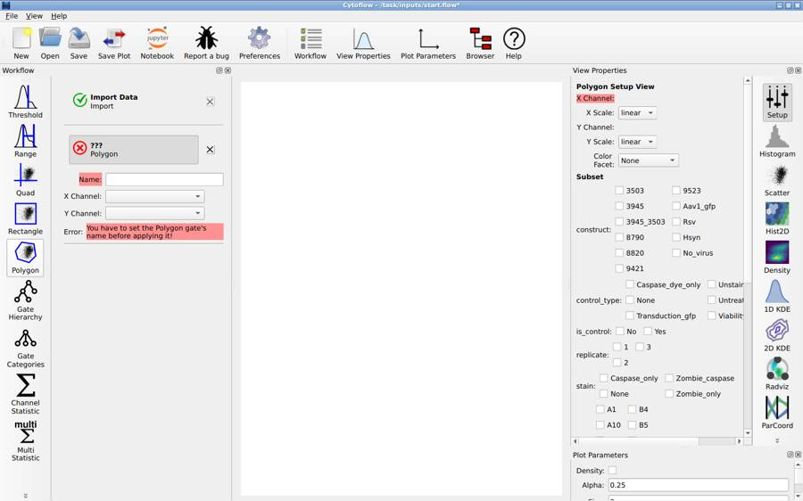
cd /task; cu click 1213 454; sleep 1; cu click 1098 845; sleep 1; cu click 295 322; cu type "Cells"; cu key Return; sleep 1; cu click 278 353; sleep 1; cu screenshot /tmp/screen.png
{
"file_path": "/tmp/screen.png"
}/tmp/screen.png
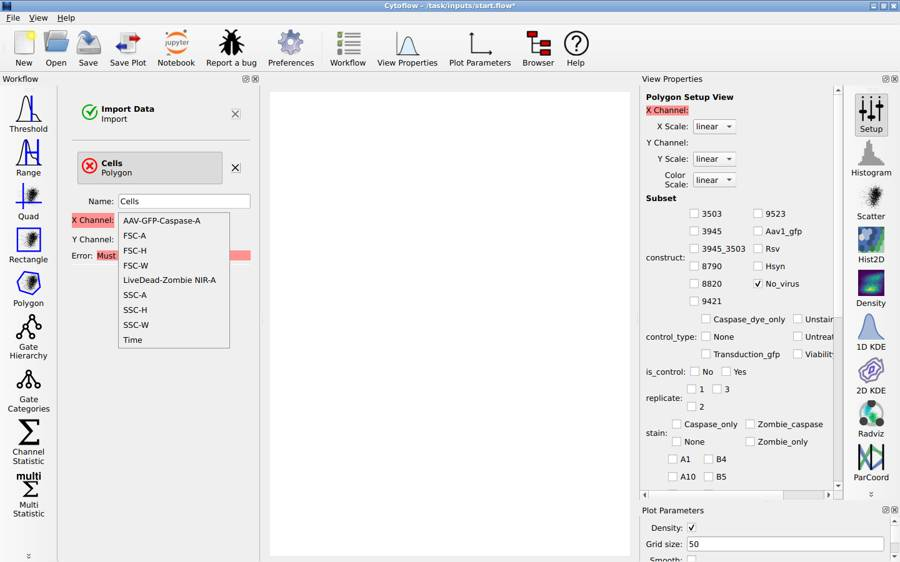
cd /task; cu click 215 377; sleep 1; cu click 1143 288; sleep 1; cu click 1127 312; sleep 1; cu click 278 383; sleep 1; cu screenshot /tmp/s1.png; cu click 215 503; sleep 12; cu screenshot /tmp/screen.png
{
"file_path": "/tmp/screen.png"
}/tmp/s1.png /tmp/screen.png
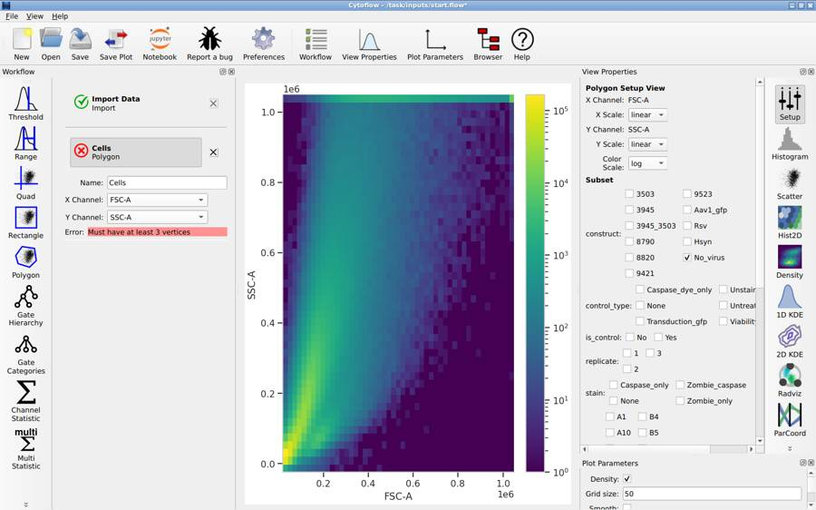
cd /task; cu click 1255 871 double; cu key ctrl+a; cu type "100"; cu key Return; sleep 3; cu click 1143 203; sleep 1; cu click 1127 227; sleep 4; cu click 1143 255; sleep 1; cu click 1127 279; sleep 14; cu screenshot /tmp/screen.png
{
"file_path": "/tmp/screen.png"
}/tmp/screen.png
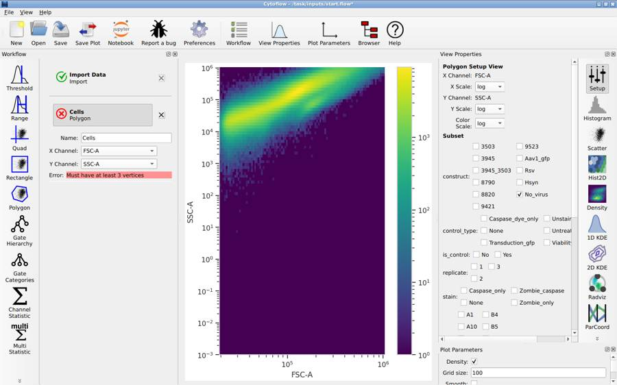
cd /task; cu drag 1232 804 1232 560; sleep 2; cu screenshot /tmp/screen.png
{
"file_path": "/tmp/screen.png"
}/tmp/screen.png
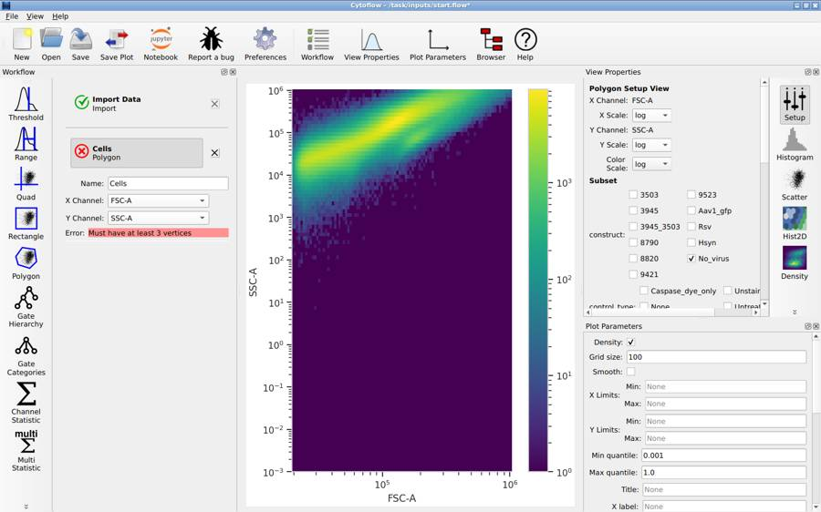
cd /task; cu click 1272 740; cu type "1000"; cu key Return; sleep 12; cu screenshot /tmp/screen.png
{
"file_path": "/tmp/screen.png"
}/tmp/screen.png
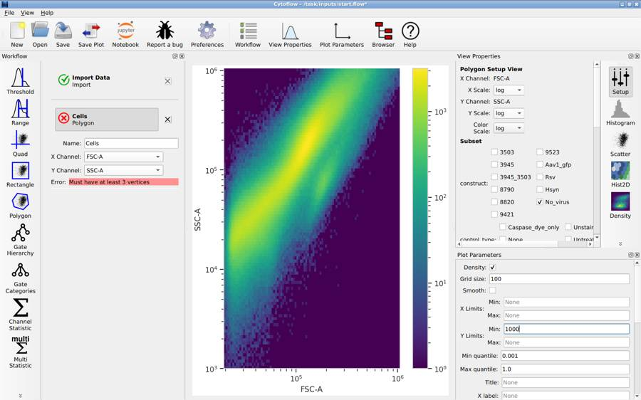
cd /task; cu click 240 181; sleep 3; cu screenshot /tmp/screen.png
{
"file_path": "/tmp/screen.png"
}/tmp/screen.png
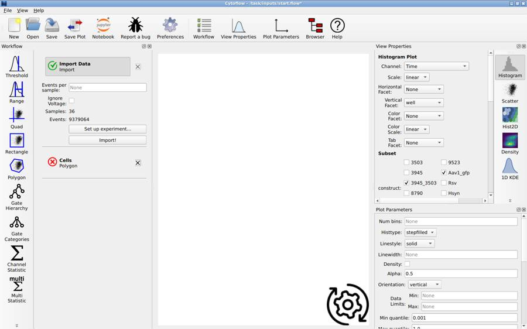
cd /task; cu click 1393 390; sleep 8; cu click 1196 181; sleep 1; cu click 1135 206; sleep 6; cu click 1143 211; sleep 1; cu screenshot /tmp/s1.png; cu click 1127 187; sleep 14; cu screenshot /tmp/screen.png
{
"file_path": "/tmp/screen.png"
}/tmp/s1.png /tmp/screen.png
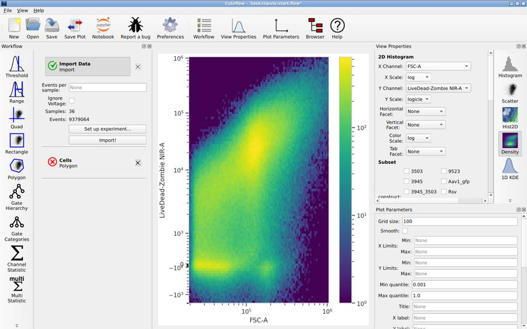
thinking
Zombie-negative debris falls below FSC-A ≈ 7e4 and live cells form their own island near 1.8e5, so I'm drawing the Cells polygon with its lower FSC-A edge near 9e4.
cd /task; cu click 240 445; sleep 15; cu screenshot /tmp/screen.png
{
"file_path": "/tmp/screen.png"
}/tmp/screen.png
cd /task; cu click 655 539; sleep 1; cu click 655 161; sleep 1; cu click 893 161; sleep 1; cu screenshot /tmp/s1.png; cu click 893 539 double; sleep 6; cu screenshot /tmp/screen.png
{
"file_path": "/tmp/screen.png"
}/tmp/s1.png /tmp/screen.png
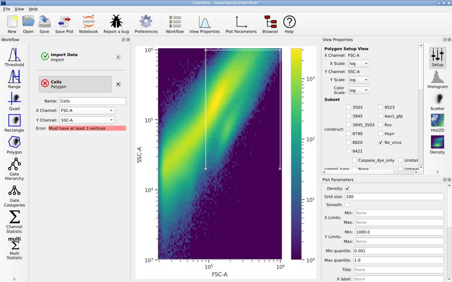
cd /task; cu click 655 539; sleep 8; cu screenshot /tmp/screen.png
{
"file_path": "/tmp/screen.png"
}/tmp/screen.png
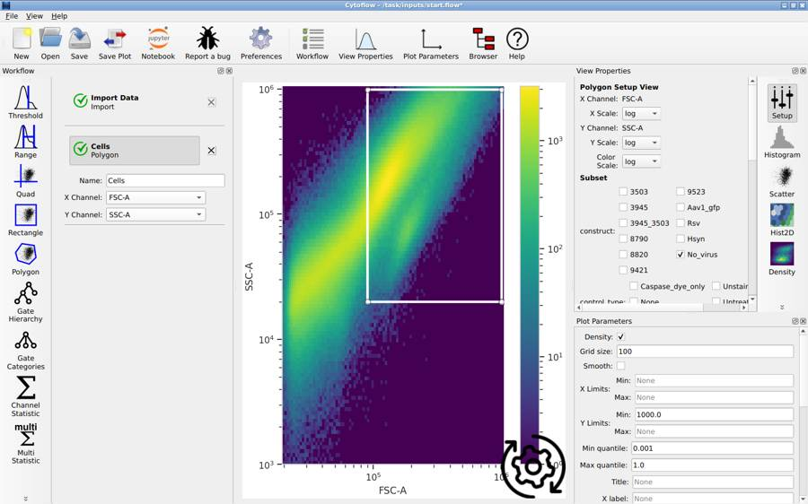
cd /task; sleep 5; cu click 20 29; sleep 1; cu screenshot /tmp/screen.png
{
"file_path": "/tmp/screen.png"
}/tmp/screen.png
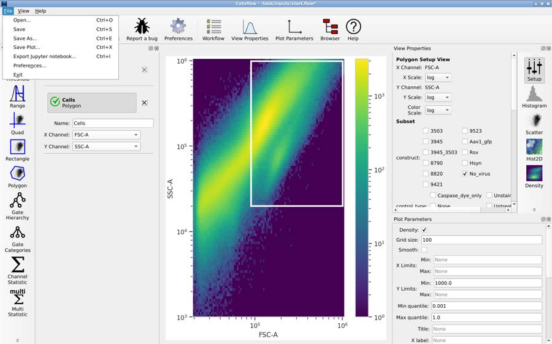
cd /task; cu click 65 100; sleep 2; cu screenshot /tmp/screen.png
{
"file_path": "/tmp/screen.png"
}/tmp/screen.png
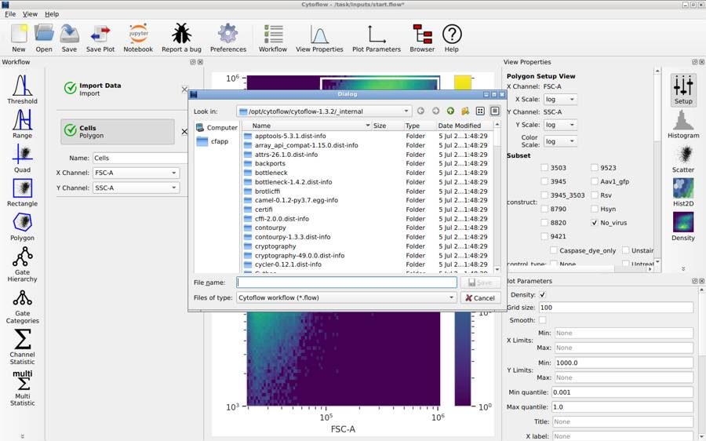
cd /task; cu click 706 576; cu paste "/task/outputs/workflow.flow"; sleep 1; cu key Return; sleep 3; cu screenshot /tmp/screen.png; ls -la /task/outputs; grep -n -A25 "polygon" /task/outputs/workflow.flow | head -60
/tmp/screen.png total 48 drwxrwsrwx 2 agent task 4096 Nov 10 19:28 . drwxr-xr-x 4 root root 4096 Nov 5 00:07 .. -rw-rw-r-- 1 cfapp task 37156 Nov 10 19:28 workflow.flow 1412: current_view: &id004 !polygon-view;3 1413- current_plot: null 1414- huefacet: '' 1415- huescale: log 1416: op: &id003 !polygon;1 1417- name: Cells 1418- vertices: 1419- - !!python/tuple 1420- - 90197.23683925696 1421- - 19890.45702628939 1422- - !!python/tuple 1423- - 90197.23683925696 1424- - 986240.1740331952 1425- - !!python/tuple 1426- - 1008477.7473027863 1427- - 986240.1740331952 1428- - !!python/tuple 1429- - 1008477.7473027863 1430- - 19890.45702628939 1431- - !!python/tuple 1432- - 1008477.7473027863 1433- - 19890.45702628939 1434- xchannel: FSC-A 1435- xscale: log 1436- ychannel: SSC-A 1437- yscale: log 1438: plot_params: !polygon-params;1 1439- alpha: 0.25 1440- col_wrap: null 1441- density: true 1442- despine: true 1443- gridsize: 100 1444- huelabel: '' 1445- legend: true 1446- marker: o 1447- max_quantile: 1.0 1448- min_quantile: 0.001 1449- s: 2 1450- sharex: true 1451- sharey: true 1452- smoothed: false 1453- smoothed_sigma: 1.0 1454- sns_context: notebook 1455- sns_style: whitegrid 1456- title: '' 1457- xlabel: '' 1458- xlim: *id002 1459- ylabel: '' 1460- ylim: !!python/tuple 1461- - 1000.0 1462- - null 1463- subset_list:
cd /task; free -m | head -2; cu click 45 460; sleep 3; cu screenshot /tmp/screen.png
{
"file_path": "/tmp/screen.png"
}total used free shared buff/cache available Mem: 7949 2919 4020 15 1277 5030 /tmp/screen.png
cd /task; cu click 1088 339; sleep 0.5; cu click 1213 477; sleep 0.5; cu click 1098 601; sleep 1; cu click 1143 203; sleep 1; cu click 1127 227; sleep 1; cu click 1143 255; sleep 1; cu click 1127 279; sleep 1; cu click 1143 288; sleep 1; cu click 1127 312; sleep 1; cu click 295 409; cu type "Single_Cells"; cu key Return; sleep 1; cu click 278 439; sleep 1; cu click 215 584; sleep 1; cu click 278 469; sleep 1; cu screenshot /tmp/s1.png; cu click 215 590; sleep 14; cu screenshot /tmp/screen.png
{
"file_path": "/tmp/screen.png"
}/tmp/s1.png /tmp/screen.png
cd /task; cu click 1255 627; cu key ctrl+a; cu type "100"; cu key Return; sleep 2; cu click 1272 680; cu type "5000"; cu key Return; sleep 2; cu click 1272 740; cu type "15000"; cu key Return; sleep 14; cu screenshot /tmp/screen.png
{
"file_path": "/tmp/screen.png"
}/tmp/screen.png
cd /tmp; python3 -c "
from PIL import Image
im=Image.open('/tmp/screen.png').crop((500,150,900,835)); im=im.resize((im.width*2,im.height*2),Image.LANCZOS); im.save('/tmp/crop.png')"Shell cwd was reset to /task
{
"file_path": "/tmp/crop.png"
}cd /task; cu click 565 820; sleep 1; cu click 862 155; sleep 1; cu click 896 155; sleep 1; cu click 615 820; sleep 1; cu click 565 820; sleep 10; cu screenshot /tmp/screen.png
{
"file_path": "/tmp/screen.png"
}/tmp/screen.png
cd /task; cu click 565 820; sleep 1; cu click 862 155; sleep 1; cu click 892 157; sleep 1; cu screenshot /tmp/s1.png; cu click 615 820; sleep 1; cu click 565 820; sleep 10; cu screenshot /tmp/screen.png
{
"file_path": "/tmp/screen.png"
}/tmp/s1.png /tmp/screen.png
cd /task; cu click 45 390; sleep 3; cu screenshot /tmp/screen.png
{
"file_path": "/tmp/screen.png"
}/tmp/screen.png
cd /task; cu click 1088 339; sleep 0.5; cu click 1132 361; sleep 0.5; cu click 1213 499; sleep 0.5; cu click 1098 601; sleep 1; cu click 1143 203; sleep 1; cu click 1133 251; sleep 1; cu click 1143 255; sleep 1; cu click 1133 303; sleep 1; cu click 1143 288; sleep 1; cu click 1127 312; sleep 1; cu click 295 495; cu type "Live"; cu key Return; sleep 1; cu click 278 525; sleep 1; cu click 250 526; sleep 1; cu click 278 616; sleep 1; cu screenshot /tmp/s1.png; cu click 250 713; sleep 14; cu screenshot /tmp/screen.png
{
"file_path": "/tmp/screen.png"
}/tmp/s1.png /tmp/screen.png
dmesg | grep -E "Out of memory|oom-kill" | tail -4; tail -30 /tmp/cytoflow.log; free -m | head -2
[ 193.518758] Out of memory: Killed process 861 (cytoflow) total-vm:8535584kB, anon-rss:7309212kB, file-rss:8kB, shmem-rss:28kB, UID:1002 pgtables:14928kB oom_score_adj:0
[ 1430.549468] claude invoked oom-killer: gfp_mask=0x140cca(GFP_HIGHUSER_MOVABLE|__GFP_COMP), order=0, oom_score_adj=0
[ 1430.551514] oom-kill:constraint=CONSTRAINT_NONE,nodemask=(null),cpuset=/,mems_allowed=0,global_oom,task_memcg=/,task=cytoflow,pid=1297,uid=1002
[ 1430.551581] Out of memory: Killed process 1297 (cytoflow) total-vm:9059644kB, anon-rss:7242036kB, file-rss:12kB, shmem-rss:28kB, UID:1002 pgtables:14820kB oom_score_adj:0
QXcbIntegration: Cannot create platform OpenGL context, neither GLX nor EGL are enabled
2026-11-10 19:31:50,445 ERROR:root:Remote process exited with -9
total used free shared buff/cache available
Mem: 7949 998 6909 16 306 6951thinking
Cytoflow was OOM-killed again at 7.2 GB during the Live gate render; the Cells gate is saved and I have the Single_Cells polygon's coordinates. I'm restarting it with a memory logger to find the spiking step.
cd /task; mkdir -p /task/outputs/work; nohup bash -c 'while true; do echo "$(date +%T) $(ps -eo rss,args --sort=-rss | grep "[c]ytoflow-1.3.2/cytoflow" | head -2 | awk "{printf \"%d \", \$1/1024}")"; sleep 1; done' > /tmp/mem.log 2>&1 &
sleep 1; cu click 915 461; sleep 1; cu click 1430 9; sleep 3; cu screenshot /tmp/screen.png{
"file_path": "/tmp/screen.png"
}/tmp/screen.png

cd /task; sleep 10; cu click 700 9 double; sleep 2; cu click 408 713; sleep 1; cu click 408 614; sleep 1; cu click 408 784; sleep 1; cu click 89 75; sleep 2; cu click 706 576; cu paste "/task/outputs/workflow.flow"; sleep 1; cu key Return; sleep 3; cu screenshot /tmp/screen.png
{
"file_path": "/tmp/screen.png"
}/tmp/screen.png
cd /task; cu click 738 427; sleep 45; tail -3 /tmp/mem.log; cu screenshot /tmp/screen.png
{
"file_path": "/tmp/screen.png"
}19:34:10 2224 525 19:34:11 2224 525 19:34:12 2224 525 /tmp/screen.png
cd /task; cu click 240 268; sleep 20; awk '{print $2}' /tmp/mem.log | tail -22 | tr '\n' ' '; cu screenshot /tmp/screen.png{
"file_path": "/tmp/screen.png"
}2224 2224 2224 2224 2224 2303 2228 2228 2228 2228 2228 2228 2228 2228 2228 2228 2228 2228 2228 2228 2228 2228 /tmp/screen.png
cd /task; cu click 45 460; sleep 3; cu drag 1232 804 1232 560; sleep 2; cu click 1088 339; sleep 0.5; cu click 1213 477; sleep 0.5; cu click 1098 601; sleep 1; cu click 1143 203; sleep 1; cu click 1127 227; sleep 1; cu click 1143 255; sleep 1; cu click 1127 279; sleep 1; cu click 1143 288; sleep 1; cu click 1127 312; sleep 1; cu click 1255 627; cu key ctrl+a; cu type "100"; cu key Return; sleep 1; cu click 1272 680; cu type "5000"; cu key Return; sleep 1; cu click 1272 740; cu type "15000"; cu key Return; sleep 1; cu screenshot /tmp/screen.png
{
"file_path": "/tmp/screen.png"
}/tmp/screen.png
cd /task; cu click 295 409; cu type "Single_Cells"; cu key Return; sleep 1; cu click 278 439; sleep 1; cu click 215 584; sleep 1; cu click 278 469; sleep 1; cu click 215 590; sleep 15; awk '{print $2}' /tmp/mem.log | tail -22 | tr '\n' ' '; cu screenshot /tmp/screen.png{
"file_path": "/tmp/screen.png"
}2228 2228 2228 2228 2228 2228 2228 2228 2228 2228 2419 2230 2230 2230 2230 2230 2230 2230 2230 2230 2230 2230 /tmp/screen.png
cd /task; cu click 565 820; sleep 1; cu click 862 155; sleep 1; cu click 892 157; sleep 1; cu click 615 820; sleep 1; cu click 565 820; sleep 12; awk '{print $2}' /tmp/mem.log | tail -14 | tr '\n' ' '; cu key ctrl+s; sleep 3; cu screenshot /tmp/screen.png; grep -n -B2 -A22 "name: Single_Cells" /task/outputs/workflow.flow | head -40{
"file_path": "/tmp/screen.png"
}2230 2230 2230 2230 2230 2230 2230 2230 2230 2230 2230 2230 2230 2230 /tmp/screen.png 2223- huescale: log 2224- op: &id005 !polygon;1 2225: name: Single_Cells 2226- vertices: 2227- - !!python/tuple 2228- - 11731.091973335338 2229- - 15992.59282926147 2230- - !!python/tuple 2231- - 662754.337184337 2232- - 1024471.3566881312 2233- - !!python/tuple 2234- - 999143.1181499069 2235- - 1011198.8273017489 2236- - !!python/tuple 2237- - 23142.725557212485 2238- - 15992.59282926147 2239- xchannel: SSC-H 2240- xscale: log 2241- ychannel: SSC-A 2242- yscale: log 2243- plot_params: !polygon-params;1 2244- alpha: 0.25 2245- col_wrap: null 2246- density: true 2247- despine: true
cd /task; cu click 45 390; sleep 3; cu click 1088 339; sleep 0.5; cu click 1132 361; sleep 0.5; cu click 1213 499; sleep 0.5; cu click 1098 601; sleep 1; cu click 295 495; cu type "Live"; cu key Return; sleep 1; cu click 278 525; sleep 1; cu click 250 526; sleep 3; awk '{print $2}' /tmp/mem.log | tail -5 | tr '\n' ' '; cu click 278 616; sleep 1; cu click 250 713; for i in 1 2 3 4 5 6 7 8 9 10 11 12; do sleep 1; tail -1 /tmp/mem.log; done; cu screenshot /tmp/screen.png2230 2230 2230 2230 2230 19:36:24 4629 537 19:36:25 6835 537 19:36:25 6835 537 19:36:26 363 21 19:36:27 380 21 19:36:28 380 21 19:36:29 382 21 19:36:30 382 21 19:36:31 382 21 19:36:32 382 21 19:36:33 382 21 19:36:34 382 21 /tmp/screen.png
cd /task; cu screenshot /tmp/screen.png
/tmp/screen.png
{
"file_path": "/tmp/screen.png"
}thinking
The memory spike happens only when the 2D-Range setup view renders, so I'm restarting with Range gates for Live and Caspase_pos and a Polygon for Late_apoptosis.
cd /task; cu click 915 461; sleep 1; cu click 1430 9; sleep 14; cu click 700 9 double; sleep 2; cu click 408 713; sleep 1; cu click 408 614; sleep 1; cu click 408 784; sleep 1; cu click 89 75; sleep 2; cu click 706 576; cu paste "/task/outputs/workflow.flow"; sleep 1; cu key Return; sleep 3; cu click 738 427; sleep 50; tail -2 /tmp/mem.log; cu screenshot /tmp/screen.png
{
"file_path": "/tmp/screen.png"
}19:38:24 2226 520 19:38:25 2226 520 /tmp/screen.png
cd /task; cu click 240 355; sleep 12; cu click 1393 460; sleep 3; tail -1 /tmp/mem.log; cu screenshot /tmp/screen.png
{
"file_path": "/tmp/screen.png"
}19:38:47 2229 530 /tmp/screen.png
cd /task; cu click 1088 465; sleep 0.5; cu click 1132 487; sleep 0.5; cu click 1277 737; sleep 0.5; cu click 1143 211; sleep 1; cu click 1133 259; sleep 1; cu click 1143 271; sleep 1; cu click 1133 319; sleep 1; cu click 1143 378; sleep 1; cu click 1127 402; sleep 1; cu click 1196 181; sleep 1; cu click 1150 182; sleep 1; cu click 1196 241; sleep 1; cu click 1150 338; sleep 12; awk '{print $2}' /tmp/mem.log | tail -14 | tr '\n' ' '; cu screenshot /tmp/screen.png{
"file_path": "/tmp/screen.png"
}2229 2229 2229 2229 2229 2230 2230 2230 2230 2230 2230 2230 2230 2230 /tmp/screen.png
cd /task; cu click 1393 250; sleep 3; cu screenshot /tmp/screen.png
{
"file_path": "/tmp/screen.png"
}/tmp/screen.png
cd /task; cu click 1088 441; sleep 0.5; cu click 1132 463; sleep 0.5; cu click 1213 601; sleep 0.5; cu click 1157 281; sleep 1; cu click 1125 257; sleep 1; cu click 1137 211; sleep 1; cu click 1130 259; sleep 1; cu click 1190 181; sleep 1; cu click 1150 278; sleep 14; awk '{print $2}' /tmp/mem.log | tail -12 | tr '\n' ' '; cu screenshot /tmp/screen.png{
"file_path": "/tmp/screen.png"
}2230 2236 2237 2237 2237 2237 2237 2237 2237 2237 2237 2237 /tmp/screen.png
cd /task; cu click 1277 685; sleep 0.5; cu click 1277 713; sleep 14; cu screenshot /tmp/screen.png
{
"file_path": "/tmp/screen.png"
}/tmp/screen.png
cd /task; cu click 1277 657; sleep 0.5; cu click 1129 657; sleep 0.5; cu click 1190 181; sleep 1; cu screenshot /tmp/s1.png; cu click 1150 85; sleep 15; cu screenshot /tmp/screen.png
{
"file_path": "/tmp/screen.png"
}/tmp/s1.png /tmp/screen.png
cd /task; cu click 1393 460; sleep 8; cu click 1277 709; sleep 0.5; cu click 1277 737; sleep 14; cu screenshot /tmp/screen.png
{
"file_path": "/tmp/screen.png"
}/tmp/screen.png
thinking
Live cells split into a BL1-dim and a BL1 ≈ 1e3 population, with dead cells Zombie-bright at 1e4–1e5, so I'm adding the Live gate as a Range on RL3-A now.
cd /task; cu click 45 250; sleep 3; cu screenshot /tmp/screen.png
{
"file_path": "/tmp/screen.png"
}/tmp/screen.png
cd /task; cu drag 1070 792 1000 792; sleep 1; cu screenshot /tmp/screen.png
{
"file_path": "/tmp/screen.png"
}/tmp/screen.png
cd /task; cu click 1088 272; sleep 0.5; cu click 1132 294; sleep 0.5; cu click 1277 544; sleep 0.5; cu click 1277 516; sleep 0.5; cu click 1130 188; sleep 1; cu click 1125 236; sleep 1; cu click 288 495; cu type "Live"; cu key Return; sleep 1; cu click 265 525; sleep 1; cu screenshot /tmp/s1.png; cu click 250 622; for i in 1 2 3 4 5 6 7 8 9 10; do sleep 1; tail -1 /tmp/mem.log; done; cu screenshot /tmp/screen.png
{
"file_path": "/tmp/screen.png"
}/tmp/s1.png 19:42:18 2254 534 19:42:19 2254 534 19:42:20 2254 534 19:42:21 2255 534 19:42:22 2255 534 19:42:23 2255 534 19:42:24 2255 534 19:42:25 2255 534 19:42:26 2255 534 19:42:27 2255 534 /tmp/screen.png
cd /task; cu click 288 556; cu type "-100000"; cu key Return; sleep 1; cu click 288 586; cu type "1000"; cu key Return; sleep 12; awk '{print $2}' /tmp/mem.log | tail -12 | tr '\n' ' '; cu screenshot /tmp/screen.png{
"file_path": "/tmp/screen.png"
}2252 2252 2252 2252 2252 2252 2252 2253 2253 2253 2253 2253 /tmp/screen.png
cd /task; cu key ctrl+s; sleep 3; grep -n "name: " /task/outputs/workflow.flow | head; cu click 45 250; sleep 3; cu screenshot /tmp/screen.png
{
"file_path": "/tmp/screen.png"
}29: name: null 53: name: null 67: name: null 78: name: null 91: name: null 138: name: null 208: name: construct 223: name: control_type 234: name: is_control 240: name: replicate /tmp/screen.png
cd /task; cu click 1088 272; sleep 0.5; cu click 1083 294; sleep 0.5; cu click 1132 316; sleep 0.5; cu click 1129 510; sleep 0.5; cu click 1277 510; sleep 0.5; cu click 1277 538; sleep 0.5; cu click 1277 566; sleep 0.5; cu click 1130 188; sleep 1; cu click 1125 236; sleep 1; cu click 1150 221; sleep 1; cu screenshot /tmp/s1.png; cu click 1150 102; sleep 1; cu click 288 581; cu type "Caspase_pos"; cu key Return; sleep 1; cu click 265 612; sleep 1; cu click 250 613; sleep 14; awk '{print $2}' /tmp/mem.log | tail -12 | tr '\n' ' '; cu screenshot /tmp/screen.png{
"file_path": "/tmp/screen.png"
}/tmp/s1.png 2253 2254 2254 2254 2254 2254 2254 2254 2254 2254 2254 2254 /tmp/screen.png
cd /task; cu click 288 642; cu type "500"; cu key Return; sleep 1; cu click 288 672; cu type "2000000"; cu key Return; sleep 12; cu screenshot /tmp/screen.png
{
"file_path": "/tmp/screen.png"
}/tmp/screen.png
cd /tmp; python3 -c "
from PIL import Image
im=Image.open('/tmp/screen.png').crop((510,480,790,835)); im=im.resize((im.width*3,im.height*3),Image.LANCZOS); im.save('/tmp/crop.png')"Shell cwd was reset to /task
{
"file_path": "/tmp/crop.png"
}cd /task; cu key ctrl+s; sleep 3; grep -n -A6 "!range;" /task/outputs/workflow.flow | head -30; cu click 45 460; sleep 3; cu screenshot /tmp/screen.png
{
"file_path": "/tmp/screen.png"
}3330: op: &id008 !range;1 3331- channel: LiveDead-Zombie NIR-A 3332- high: 1000.0 3333- low: -100000.0 3334- name: Live 3335- plot_params: !histogram-params;4 3336- alpha: 0.5 -- 4167: op: &id010 !range;1 4168- channel: AAV-GFP-Caspase-A 4169- high: 2000000.0 4170- low: 500.0 4171- name: Caspase_pos 4172- plot_params: !histogram-params;4 4173- alpha: 0.5 /tmp/screen.png
cd /task; cu click 1088 346; sleep 0.5; cu click 1132 390; sleep 0.5; cu click 1277 612; sleep 0.5; cu click 1098 845; sleep 1; cu click 1143 188; sleep 1; cu click 1133 236; sleep 1; cu click 1143 241; sleep 1; cu click 1133 289; sleep 1; cu click 1143 273; sleep 1; cu click 1127 297; sleep 1; cu click 295 668; cu type "Late_apoptosis"; cu key Return; sleep 1; cu click 278 698; sleep 1; cu click 250 699; sleep 1; cu screenshot /tmp/s1.png
{
"file_path": "/tmp/s1.png"
}/tmp/s1.png
cd /task; cu click 278 728; sleep 1; cu click 250 825; for i in 1 2 3 4 5 6 7 8 9 10 11 12; do sleep 1; tail -1 /tmp/mem.log; done; cu screenshot /tmp/screen.png
{
"file_path": "/tmp/screen.png"
}19:45:22 2256 535 19:45:23 2256 535 19:45:24 2256 535 19:45:25 2256 535 19:45:26 2256 535 19:45:27 2256 535 19:45:28 2256 535 19:45:29 2256 535 19:45:30 2256 535 19:45:31 2256 535 19:45:32 2256 535 19:45:33 2256 535 /tmp/screen.png
cd /task; cu click 278 728; sleep 1; cu screenshot /tmp/screen.png
{
"file_path": "/tmp/screen.png"
}/tmp/screen.png
cd /task; cu click 270 704; sleep 2; cu drag 1232 804 1232 560; sleep 2; cu click 1255 627; cu key ctrl+a; cu type "100"; cu key Return; sleep 14; tail -1 /tmp/mem.log; cu screenshot /tmp/screen.png
{
"file_path": "/tmp/screen.png"
}19:46:04 2256 535 /tmp/screen.png
cd /task; cu click 594 558; sleep 1; cu click 594 157; sleep 1; cu click 894 157; sleep 1; cu click 894 558; sleep 1; cu click 594 558; sleep 10; cu key ctrl+s; sleep 3; grep -n -A18 "name: Late_apoptosis" /task/outputs/workflow.flow | head -30; cu screenshot /tmp/screen.png
{
"file_path": "/tmp/screen.png"
}4824: name: Late_apoptosis 4825- vertices: 4826- - !!python/tuple 4827- - 478.73287186527693 4828- - 2872.6706387147738 4829- - !!python/tuple 4830- - 478.73287186527693 4831- - 1027691.2152450158 4832- - !!python/tuple 4833- - 1030958.7461712583 4834- - 1027691.2152450158 4835- - !!python/tuple 4836- - 1030958.7461712583 4837- - 2872.6706387147738 4838- xchannel: AAV-GFP-Caspase-A 4839- xscale: logicle 4840- ychannel: LiveDead-Zombie NIR-A 4841- yscale: logicle 4842- plot_params: !polygon-params;1 /tmp/screen.png
cd /task; sleep 3; cu drag 1232 804 1232 560; sleep 2; cu screenshot /tmp/screen.png
{
"file_path": "/tmp/screen.png"
}/tmp/screen.png
cd /task; cu click 1272 710; cu type "3000000"; cu key Return; sleep 2; cu click 1272 771; cu type "3000000"; cu key Return; sleep 2; cu click 1255 627; cu key ctrl+a; cu type "100"; cu key Return; sleep 14; cu screenshot /tmp/screen.png
{
"file_path": "/tmp/screen.png"
}/tmp/screen.png
thinking
Saturated events above 1.03e6 stay outside the polygon, since axis limits can't go past the detector maximum; I'm adjusting the left edge to match the Caspase_pos threshold of 500 and will quantify saturation separately.
cd /task; cu click 596 556; sleep 1; cu click 596 155; sleep 1; cu click 895 155; sleep 1; cu click 895 556; sleep 1; cu click 596 556; sleep 10; cu key ctrl+s; sleep 3; grep -n -A18 "name: Late_apoptosis" /task/outputs/workflow.flow | head -22; cu screenshot /tmp/screen.png
{
"file_path": "/tmp/screen.png"
}5031: name: Late_apoptosis 5032- vertices: 5033- - !!python/tuple 5034- - 478.73287186527693 5035- - 2872.6706387147738 5036- - !!python/tuple 5037- - 478.73287186527693 5038- - 1027691.2152450158 5039- - !!python/tuple 5040- - 1030958.7461712583 5041- - 1027691.2152450158 5042- - !!python/tuple 5043- - 1030958.7461712583 5044- - 2872.6706387147738 5045- xchannel: AAV-GFP-Caspase-A 5046- xscale: logicle 5047- ychannel: LiveDead-Zombie NIR-A 5048- yscale: logicle 5049- plot_params: !polygon-params;1 /tmp/screen.png
cd /task; cu click 45 700; sleep 3; cu screenshot /tmp/screen.png
{
"file_path": "/tmp/screen.png"
}/tmp/screen.png
cd /task; cu drag 421 510 760 510; sleep 2; cu scroll 250 600 down 15; sleep 1; cu screenshot /tmp/screen.png
{
"file_path": "/tmp/screen.png"
}/tmp/screen.png
cd /task; cu click 450 567; cu type "n_All"; cu key Return; sleep 1; cu click 255 627; sleep 1; cu screenshot /tmp/screen.png
{
"file_path": "/tmp/screen.png"
}/tmp/screen.png
cd /task; cu click 205 577; sleep 1; cu click 462 769; sleep 8; cu screenshot /tmp/screen.png
{
"file_path": "/tmp/screen.png"
}/tmp/screen.png
cd /task; cu click 45 700; sleep 3; cu scroll 747 600 down 40; sleep 1; cu screenshot /tmp/screen.png
{
"file_path": "/tmp/screen.png"
}/tmp/screen.png
cd /task; cu scroll 747 600 up 6; sleep 1; cu screenshot /tmp/screen.png
{
"file_path": "/tmp/screen.png"
}/tmp/screen.png
cd /task; cu scroll 747 600 down 40; sleep 1; cu click 169 822; sleep 1; cu scroll 747 600 up 9; sleep 1; cu screenshot /tmp/screen.png
{
"file_path": "/tmp/screen.png"
}/tmp/screen.png
cd /task; cu click 450 148; cu type "n_Cells"; cu key Return; sleep 1; cu click 265 179; sleep 1; cu screenshot /tmp/s1.png;
{
"file_path": "/tmp/s1.png"
}/tmp/s1.png
cd /task; cu click 200 371; sleep 1; cu click 255 209; sleep 1; cu screenshot /tmp/s1.png
{
"file_path": "/tmp/s1.png"
}/tmp/s1.png
cd /task; cu click 205 210; sleep 1; cu click 462 350; sleep 6; cu screenshot /tmp/s2.png
mk() { # name bottomclicks... then topclicks
name=$1; shift
cu click 45 700; sleep 3; cu scroll 747 600 down 40; sleep 1
for c in "$@"; do case $c in
cells) cu click 169 822;; single) cu click 213 694;; late) cu click 232 716;; esac; sleep 0.7; done
cu scroll 747 600 up 9; sleep 1
for c in "$@"; do case $c in
live) cu click 165 503;; casp) cu click 220 425;; esac; sleep 0.7; done
cu click 450 148; cu type "$name"; cu key Return; sleep 1
cu click 265 179; sleep 1; cu click 200 371; sleep 1
cu click 255 209; sleep 1; cu click 205 210; sleep 1
cu click 462 350; sleep 6
cu screenshot /tmp/st_$name.png
}
mk n_Single cells single
tail -1 /tmp/mem.log{
"file_path": "/tmp/st_n_Single.png"
}/tmp/s2.png /tmp/st_n_Single.png 19:50:59 2213 540
cd /task;
mk() { name=$1; shift
cu click 45 700; sleep 3; cu scroll 747 600 down 40; sleep 1
for c in "$@"; do case $c in
cells) cu click 169 822;; single) cu click 213 694;; late) cu click 232 716;; esac; sleep 0.7; done
cu scroll 747 600 up 9; sleep 1
for c in "$@"; do case $c in
live) cu click 165 503;; casp) cu click 220 425;; esac; sleep 0.7; done
cu click 450 148; cu type "$name"; cu key Return; sleep 1
cu click 265 179; sleep 1; cu click 200 371; sleep 1
cu click 255 209; sleep 1; cu click 205 210; sleep 1
cu click 462 350; sleep 6
cu screenshot /tmp/st_$name.png
}
mk n_Live cells single live
mk n_Casp cells single live casp
mk n_Late cells single late
sleep 5; cu key ctrl+s; sleep 4; tail -1 /tmp/mem.log
python3 - <<'EOF'
import re
t=open('/task/outputs/workflow.flow').read()
for m in re.finditer(r'!channel-statistic.*?\n(.*?)(?=\n- !workflow-item|\Z)', t, re.S):
blk=m.group(0)
name=re.search(r'\n\s+name: (\S+)',blk)
print('---',name.group(1) if name else None)
for k in ('channel','statistic_name','function_name','subset','by'):
mm=re.search(r'\n\s+%s:.*(?:\n\s+- .*)*'%k,blk)
if mm: print(mm.group(0).strip()[:200])
EOF/tmp/st_n_Live.png
/tmp/st_n_Casp.png
/tmp/st_n_Late.png
19:52:39 2213 551
--- n_All
channel: Time
function_name: Count
by:
- well
--- n_Cells
channel: Time
function_name: Count
by:
- well
--- n_Single
channel: Time
function_name: Count
by:
- well
--- n_Live
channel: Time
function_name: Count
by:
- well
--- n_Casp
channel: Time
function_name: Count
by:
- well
--- n_Late
channel: Time
function_name: Count
by:
- wellcd /task; grep -n "!channel-statistic\|subset_list\|!bool-subset\|selected_t\|selected_f\|^ name:\|^ name:\| name: n_\|subset:" outputs/workflow.flow | awk -F: '$1>5000' | grep -v "name: null" | head -150 | cut -c1-110 | tail -120
6105: selected_t: false 6107: - !bool-subset;1 6108: name: Cells 6109: selected_f: false 6110: selected_t: false 6112: - !bool-subset;1 6113: name: Late_apoptosis 6114: selected_f: false 6115: selected_t: false 6117: - !bool-subset;1 6118: name: Live 6119: selected_f: false 6120: selected_t: false 6122: - !bool-subset;1 6123: name: Single_Cells 6124: selected_f: false 6125: selected_t: false 6128: name: construct 6143: name: control_type 6153: name: is_control 6159: name: replicate 6166: name: stain 6174: name: well 6908: operation: !channel-statistic;2 6913: name: n_Cells 6914: subset_list: 6915: - !bool-subset;1 6916: name: Caspase_pos 6917: selected_f: false 6918: selected_t: false 6920: - !bool-subset;1 6921: name: Cells 6922: selected_f: false 6923: selected_t: true 6925: - !bool-subset;1 6926: name: Late_apoptosis 6927: selected_f: false 6928: selected_t: false 6930: - !bool-subset;1 6931: name: Live 6932: selected_f: false 6933: selected_t: false 6935: - !bool-subset;1 6936: name: Single_Cells 6937: selected_f: false 6938: selected_t: false 6941: name: construct 6956: name: control_type 6966: name: is_control 6972: name: replicate 6979: name: stain 6987: name: well 7846: operation: !channel-statistic;2 7851: name: n_Single 7852: subset_list: 7853: - !bool-subset;1 7854: name: Caspase_pos 7855: selected_f: false 7856: selected_t: false 7860: - !bool-subset;1 7861: name: Cells 7862: selected_f: false 7863: selected_t: true 7867: - !bool-subset;1 7868: name: Late_apoptosis 7869: selected_f: false 7870: selected_t: false 7874: - !bool-subset;1 7875: name: Live 7876: selected_f: false 7877: selected_t: false 7881: - !bool-subset;1 7882: name: Single_Cells 7883: selected_f: false 7884: selected_t: true 7889: name: construct 7904: name: control_type 7914: name: is_control 7920: name: replicate 7927: name: stain 7935: name: well 8919: operation: !channel-statistic;2 8924: name: n_Live 8925: subset_list: 8926: - !bool-subset;1 8927: name: Caspase_pos 8928: selected_f: false 8929: selected_t: false 8931: - !bool-subset;1 8932: name: Cells 8933: selected_f: false 8934: selected_t: true 8936: - !bool-subset;1 8937: name: Late_apoptosis 8938: selected_f: false 8939: selected_t: false 8941: - !bool-subset;1 8942: name: Live 8943: selected_f: false 8944: selected_t: true 8946: - !bool-subset;1 8947: name: Single_Cells 8948: selected_f: false 8949: selected_t: true 8952: name: construct 8967: name: control_type 8977: name: is_control 8983: name: replicate 8990: name: stain 8998: name: well 10107: operation: !channel-statistic;2 10112: name: n_Casp 10113: subset_list: 10114: - !bool-subset;1 10115: name: Caspase_pos 10116: selected_f: false 10117: selected_t: true 10121: - !bool-subset;1 10122: name: Cells 10123: selected_f: false
cd /task; python3 - <<'EOF'
import re
L=open('/task/outputs/workflow.flow').read().split('\n')
cur=None;sub=None
for i,l in enumerate(L):
if '!channel-statistic' in l: cur='?'
m=re.match(r' name: (n_\w+)',l)
if m: cur=m.group(1); print(); print(cur,end=': ')
m=re.match(r' name: (\w+)',l)
if m: sub=m.group(1)
if cur and 'selected_t: true' in l: print(sub+'+',end=' ')
if cur and 'selected_f: true' in l: print(sub+'-',end=' ')
if cur and re.match(r' selected: ',l) and 'true' in l: print(sub,'categorical selected',end=' ')
print()
EOF
grep -n "selected:" outputs/workflow.flow | awk -F: '$1>6000' | sort -t: -k3 | uniq -c -f1 | headn_All:
n_Cells: Cells+
n_Single: Cells+ Single_Cells+
n_Live: Cells+ Live+ Single_Cells+
n_Casp: Caspase_pos+ Cells+ Live+ Single_Cells+
n_Late: Cells+ Late_apoptosis+ Single_Cells+
36 10151: selected: []cd /task; cu drag 760 510 421 510; sleep 2; cu screenshot /tmp/screen.png
{
"file_path": "/tmp/screen.png"
}/tmp/screen.png
cd /task; cu drag 1232 560 1232 850; sleep 2; cu click 1393 790; sleep 2; cu screenshot /tmp/screen.png
{
"file_path": "/tmp/screen.png"
}/tmp/screen.png
cd /task; cu click 1400 530; sleep 4; cu screenshot /tmp/screen.png
{
"file_path": "/tmp/screen.png"
}/tmp/screen.png
cd /task; cu click 1160 181; sleep 1; cu screenshot /tmp/screen.png
{
"file_path": "/tmp/screen.png"
}/tmp/screen.png
cd /task; cu click 1137 207; sleep 2; cu click 1144 241; sleep 1; cu screenshot /tmp/screen.png
{
"file_path": "/tmp/screen.png"
}/tmp/screen.png
cd /task; cu click 1135 218; sleep 2; cu click 1150 211; sleep 1; cu screenshot /tmp/screen.png
{
"file_path": "/tmp/screen.png"
}/tmp/screen.png
cd /task; cu click 1137 212; sleep 5; cu screenshot /tmp/screen.png
{
"file_path": "/tmp/screen.png"
}/tmp/screen.png
cd /task; cu click 1218 393; sleep 2; cu screenshot /tmp/screen.png
{
"file_path": "/tmp/screen.png"
}/tmp/screen.png
cd /task; chmod 2777 /task/outputs/work; cu click 706 567; cu paste "/task/outputs/work/n_All.csv"; sleep 1; cu key Return; sleep 3; ls -la /task/outputs/work; head -5 /task/outputs/work/n_All.csv; cu screenshot /tmp/screen.png
total 12 drwxrwsrwx 2 root task 4096 Nov 10 19:54 . drwxrwsrwx 3 agent task 4096 Nov 10 19:32 .. -rw-rw-r-- 1 cfapp task 693 Nov 10 19:54 n_All.csv well = A1,183353.0 well = A10,335810.0 well = A11,228556.0 well = A12,330844.0 well = A2,221770.0 /tmp/screen.png
cd /task; cu click 1160 181; sleep 1; cu click 1140 231; sleep 4; cu screenshot /tmp/screen.png
{
"file_path": "/tmp/screen.png"
}/tmp/screen.png
cd /task;
exp() { cu click 1218 393; sleep 2; cu click 706 567; cu paste "/task/outputs/work/$1.csv"; sleep 1; cu key Return; sleep 3; }
nextstat() { cu click 1160 181; sleep 1; for i in $(seq 1 $2); do cu key $1; sleep 0.3; done; cu key Return; sleep 4; cu screenshot /tmp/t_$3.png; }
exp n_Cells
nextstat Down 1 n_Late; exp n_Late
nextstat Down 1 n_Live; exp n_Live
nextstat Down 1 n_Single; exp n_Single
nextstat Up 4 n_Casp; exp n_Casp
python3 - <<'EOF'
from PIL import Image
names=['n_Late','n_Live','n_Single','n_Casp']
m=Image.new('RGB',(400,4*40))
for i,n in enumerate(names):
m.paste(Image.open(f'/tmp/t_{n}.png').crop((1030,165,1430,205)),(0,i*40))
m.save('/tmp/mont.png')
EOF
ls -la outputs/work; head -3 outputs/work/*.csv{
"file_path": "/tmp/mont.png"
}/tmp/t_n_Late.png /tmp/t_n_Live.png /tmp/t_n_Single.png /tmp/t_n_Casp.png total 32 drwxrwsrwx 2 root task 4096 Nov 10 19:55 . drwxrwsrwx 3 agent task 4096 Nov 10 19:32 .. -rw-rw-r-- 1 cfapp task 693 Nov 10 19:54 n_All.csv -rw-rw-r-- 1 cfapp task 617 Nov 10 19:55 n_Casp.csv -rw-rw-r-- 1 cfapp task 689 Nov 10 19:54 n_Cells.csv -rw-rw-r-- 1 cfapp task 658 Nov 10 19:54 n_Late.csv -rw-rw-r-- 1 cfapp task 633 Nov 10 19:55 n_Live.csv -rw-rw-r-- 1 cfapp task 680 Nov 10 19:55 n_Single.csv ==> outputs/work/n_All.csv <== well = A1,183353.0 well = A10,335810.0 well = A11,228556.0 ==> outputs/work/n_Casp.csv <== well = A1,328.0 well = A10,1094.0 well = A11,2305.0 ==> outputs/work/n_Cells.csv <== well = A1,99798.0 well = A10,185500.0 well = A11,118630.0 ==> outputs/work/n_Late.csv <== well = A1,74990.0 well = A10,130205.0 well = A11,82778.0 ==> outputs/work/n_Live.csv <== well = A1,1213.0 well = A10,6052.0 well = A11,7192.0 ==> outputs/work/n_Single.csv <== well = A1,84319.0 well = A10,149127.0 well = A11,98649.0
cd /task; cu key ctrl+s; python3 - <<'EOF'
import pandas as pd
pd.set_option('display.width',250)
lay=pd.read_csv('/task/inputs/plate_layout.csv')
d={}
for n in ['All','Cells','Single','Live','Casp','Late']:
t=pd.read_csv(f'/task/outputs/work/n_{n}.csv',header=None,names=['well',n])
t['well']=t.well.str.replace('well = ','')
d[n]=t.set_index('well')[n]
df=pd.DataFrame(d).reindex(lay.well)
print(df.isna().sum().to_dict(), len(df))
df=df.fillna(0).astype(int)
df['construct']=lay.set_index('well').construct
df['%Cells']=100*df.Cells/df.All
df['%Sing']=100*df.Single/df.Cells
df['%Live']=100*df.Live/df.Single
df['%Casp']=100*df.Casp/df.Live
df['%Late']=100*df.Late/df.Single
print(df.round(2).to_string())
EOF{'All': 0, 'Cells': 0, 'Single': 0, 'Live': 0, 'Casp': 0, 'Late': 0} 36
All Cells Single Live Casp Late construct %Cells %Sing %Live %Casp %Late
well
A1 183353 99798 84319 1213 328 74990 RSV 54.43 84.49 1.44 27.04 88.94
A2 221770 120141 96878 4807 1047 82677 RSV 54.17 80.64 4.96 21.78 85.34
A3 222545 125877 106326 4696 2448 90539 RSV 56.56 84.47 4.42 52.13 85.15
A4 160440 94000 79877 2868 764 69394 hSyn 58.59 84.98 3.59 26.64 86.88
A5 169911 93360 79575 5004 2173 66472 hSyn 54.95 85.23 6.29 43.43 83.53
A6 230857 131846 110381 8738 1929 92397 hSyn 57.11 83.72 7.92 22.08 83.71
A7 282723 152676 120031 9070 1613 99582 9523 54.00 78.62 7.56 17.78 82.96
A8 236938 132547 107377 12230 3541 84409 9523 55.94 81.01 11.39 28.95 78.61
A9 241833 137058 112657 7126 1577 96228 9523 56.67 82.20 6.33 22.13 85.42
A10 335810 185500 149127 6052 1094 130205 3945 55.24 80.39 4.06 18.08 87.31
A11 228556 118630 98649 7192 2305 82778 3945 51.90 83.16 7.29 32.05 83.91
A12 330844 174587 140511 7796 2137 120697 3945 52.77 80.48 5.55 27.41 85.90
B1 254845 136511 110308 10681 2706 87599 9421 53.57 80.81 9.68 25.33 79.41
B2 319449 167921 131129 17910 7616 99165 9421 52.57 78.09 13.66 42.52 75.62
B3 275473 151587 120842 14187 4935 94595 9421 55.03 79.72 11.74 34.79 78.28
B4 219859 115916 96469 3920 986 83016 3503 52.72 83.22 4.06 25.15 86.05
B5 225148 118116 98771 6432 2119 82355 3503 52.46 83.62 6.51 32.94 83.38
B6 369018 194194 153675 12114 5578 126304 3503 52.62 79.13 7.88 46.05 82.19
B7 186946 103535 89068 3805 1204 77436 8820 55.38 86.03 4.27 31.64 86.94
B8 412353 221659 174334 8727 4625 146891 8820 53.75 78.65 5.01 53.00 84.26
B9 219409 119883 100226 4402 1545 86669 8820 54.64 83.60 4.39 35.10 86.47
B10 187472 99635 85795 3246 931 74183 8790 53.15 86.11 3.78 28.68 86.47
B11 271438 150413 125339 6546 3106 107697 8790 55.41 83.33 5.22 47.45 85.92
B12 286933 156864 130625 6452 3587 111355 8790 54.67 83.27 4.94 55.60 85.25
C1 250794 141068 108552 2004 502 90137 3945_3503 56.25 76.95 1.85 25.05 83.04
C2 305451 173658 135850 5566 2042 117232 3945_3503 56.85 78.23 4.10 36.69 86.30
C3 418796 229692 176846 11887 6901 144170 3945_3503 54.85 76.99 6.72 58.06 81.52
C4 230134 128074 108669 1330 916 98439 AAV1_GFP 55.65 84.85 1.22 68.87 90.59
C5 206789 116764 99512 1690 1334 89535 AAV1_GFP 56.47 85.22 1.70 78.93 89.97
C6 189779 103054 89264 854 709 83224 AAV1_GFP 54.30 86.62 0.96 83.02 93.23
C7 317865 162714 121429 19333 13490 85654 no_virus 51.19 74.63 15.92 69.78 70.54
C8 214991 104800 82987 5715 1662 68957 no_virus 48.75 79.19 6.89 29.08 83.09
C9 222410 112519 86814 10925 4680 65475 no_virus 50.59 77.15 12.58 42.84 75.42
C10 276619 148813 114797 114770 26175 7 no_virus 53.80 77.14 99.98 22.81 0.01
C11 364071 183911 132578 19246 716 26699 no_virus 50.52 72.09 14.52 3.72 20.14
C12 307442 161400 123539 123485 106345 38 no_virus 52.50 76.54 99.96 86.12 0.03cd /task; cu scroll 250 300 up 60; sleep 1; cu screenshot /tmp/screen.png
{
"file_path": "/tmp/screen.png"
}/tmp/screen.png
cd /task; sleep 5; cu scroll 407 500 up 80; sleep 1; cu screenshot /tmp/screen.png
{
"file_path": "/tmp/screen.png"
}/tmp/screen.png
cd /task; cu click 240 181; sleep 15; cu screenshot /tmp/screen.png
{
"file_path": "/tmp/screen.png"
}/tmp/screen.png
cd /task; cu click 1196 181; sleep 1; cu screenshot /tmp/screen.png
{
"file_path": "/tmp/screen.png"
}/tmp/screen.png
cd /task; cu click 1132 349; sleep 2; cu click 1143 211; sleep 1; cu click 1127 187; sleep 2; cu click 1161 305; sleep 1; cu screenshot /tmp/screen.png
{
"file_path": "/tmp/screen.png"
}/tmp/screen.png
cd /task; cu click 1144 234; sleep 2; cu click 1161 342; sleep 1; cu screenshot /tmp/s1.png;
{
"file_path": "/tmp/s1.png"
}/tmp/s1.png
cd /task; cu click 1147 198; sleep 2; cu click 1277 665; sleep 0.7; cu click 1213 524; sleep 0.7; cu click 1213 552; sleep 0.7; cu click 1213 468; sleep 20; cu screenshot /tmp/q1.png; tail -1 /tmp/mem.log
{
"file_path": "/tmp/q1.png"
}/tmp/q1.png 19:58:55 2276 555
cd /task; sleep 10; cu screenshot /tmp/q1.png
{
"file_path": "/tmp/q1.png"
}/tmp/q1.png
cd /tmp; python3 -c "
from PIL import Image
im=Image.open('/tmp/q1.png').crop((432,148,1008,890)); im=im.resize((im.width*2,im.height*2),Image.LANCZOS); im.save('/tmp/crop.png')"Shell cwd was reset to /task
{
"file_path": "/tmp/crop.png"
}cd /task;
shot() { sleep $1; cu screenshot /tmp/$2.png; python3 -c "
from PIL import Image
im=Image.open('/tmp/$2.png').crop((432,148,1008,890)); im=im.resize((int(im.width*1.6),int(im.height*1.6)),Image.LANCZOS); im.save('/tmp/$2c.png')"; }
cu click 1213 468; sleep 0.7; cu click 1213 524; sleep 0.7; cu click 1213 552; sleep 0.7; cu click 1111 496; sleep 0.7; cu click 1111 608; sleep 0.7; cu click 1111 468; shot 30 q2
cu click 1111 496; sleep 0.7; cu click 1111 608; sleep 0.7; cu click 1111 468; sleep 0.7; cu click 1111 552; sleep 0.7; cu click 1111 580; sleep 0.7; cu click 1111 524; shot 30 q3; tail -1 /tmp/mem.log{
"file_path": "/tmp/q2c.png"
}{
"file_path": "/tmp/q3c.png"
}/tmp/q2.png /tmp/q3.png 20:00:38 2277 555
cd /task;
shot() { sleep $1; cu screenshot /tmp/$2.png; python3 -c "
from PIL import Image
im=Image.open('/tmp/$2.png').crop((432,148,1008,890)); im=im.resize((int(im.width*1.6),int(im.height*1.6)),Image.LANCZOS); im.save('/tmp/$2c.png')"; }
cu click 1111 552; sleep 0.7; cu click 1111 580; sleep 0.7; cu click 1213 496; shot 30 q4{
"file_path": "/tmp/q4c.png"
}/tmp/q4.png
cd /task;
shot() { sleep $1; cu screenshot /tmp/$2.png; python3 -c "
from PIL import Image
im=Image.open('/tmp/$2.png').crop((432,148,1008,890)); im=im.resize((int(im.width*1.6),int(im.height*1.6)),Image.LANCZOS); im.save('/tmp/$2c.png')"; }
cu click 1111 524; sleep 0.7; cu click 1213 496; sleep 0.7; cu click 1161 342; sleep 1; cu screenshot /tmp/s1.png; cu click 1155 366; sleep 1; cu click 1213 580; shot 35 q5{
"file_path": "/tmp/q5c.png"
}/tmp/s1.png /tmp/q5.png
cd /task; cu click 1393 180; sleep 12; cu screenshot /tmp/screen.png
{
"file_path": "/tmp/screen.png"
}/tmp/screen.png
cd /task;
hshot() { sleep $1; cu screenshot /tmp/$2.png; python3 -c "
from PIL import Image
im=Image.open('/tmp/$2.png').crop((432,148,1008,890)); im=im.resize((int(im.width*1.7),int(im.height*1.7)),Image.LANCZOS); im.save('/tmp/$2c.png')"; }
cu click 1111 500; sleep 0.7; cu click 1213 472; sleep 0.7; cu click 1213 556; hshot 20 h_c7{
"file_path": "/tmp/h_c7c.png"
}/tmp/h_c7.png
cd /task;
hshot() { sleep $1; cu screenshot /tmp/$2.png; python3 -c "
from PIL import Image
im=Image.open('/tmp/$2.png').crop((432,148,1008,890)); im=im.resize((int(im.width*1.5),int(im.height*1.5)),Image.LANCZOS); im.save('/tmp/$2c.png')"; }
t() { cu click $1 $2; sleep 0.6; }
t 1213 556; t 1213 500; t 1213 528; hshot 18 h_a1
t 1213 500; t 1213 528; t 1213 444; t 1111 472; hshot 18 h_a7
t 1213 444; t 1111 472; t 1111 584; t 1111 444; hshot 18 h_b1
t 1111 584; t 1111 444; t 1111 556; t 1111 528; hshot 18 h_b7
python3 - <<'EOF'
from PIL import Image
ims=[Image.open(f'/tmp/h_{n}c.png') for n in ['a1','a7','b1','b7']]
w,h=ims[0].size
m=Image.new('RGB',(w*2,h*2),'white')
for i,im in enumerate(ims): m.paste(im,((i%2)*w,(i//2)*h))
m=m.resize((int(m.width*0.8),int(m.height*0.8)),Image.LANCZOS); m.save('/tmp/h_AB.png'); print(m.size)
EOF{
"file_path": "/tmp/h_AB.png"
}/tmp/h_a1.png /tmp/h_a7.png /tmp/h_b1.png /tmp/h_b7.png (1382, 1780)
thinking
Rows A and B look steady with only sub-second dips, and C1 and C2 are the clear outliers. Next I'm checking per-well fluorescence and scatter on gated single cells for staining or saturation problems.
cd /task; cu click 240 789; sleep 12; cu screenshot /tmp/screen.png
{
"file_path": "/tmp/screen.png"
}/tmp/screen.png
cd /task; cu click 1393 460; sleep 6; cu screenshot /tmp/screen.png
{
"file_path": "/tmp/screen.png"
}/tmp/screen.png
cd /task; t() { cu click $1 $2; sleep 0.8; }
t 1143 211; t 1133 259; t 1143 271; t 1133 319; t 1143 378; t 1127 402; t 1088 487; t 1132 552; t 1161 305; cu screenshot /tmp/screen.png{
"file_path": "/tmp/screen.png"
}/tmp/screen.png
cd /task; t() { cu click $1 $2; sleep 0.8; }
t 1144 233; t 1161 342; cu screenshot /tmp/screen.png{
"file_path": "/tmp/screen.png"
}/tmp/screen.png
cd /task; t() { cu click $1 $2; sleep 0.8; }
t 1147 198; t 1213 633; t 1213 661; t 1213 577; cu screenshot /tmp/screen.png; python3 -c "
from PIL import Image
Image.open('/tmp/screen.png').crop((1025,140,1345,800)).save('/tmp/crop.png')"{
"file_path": "/tmp/crop.png"
}/tmp/screen.png
cd /task; t() { cu click $1 $2; sleep 0.8; }
shot() { sleep $1; cu screenshot /tmp/$2.png; python3 -c "
from PIL import Image
im=Image.open('/tmp/$2.png').crop((432,148,1008,890)); im=im.resize((int(im.width*1.5),int(im.height*1.5)),Image.LANCZOS); im.save('/tmp/$2c.png')"; }
t 1196 181; t 1150 182; t 1196 241; t 1150 338; shot 25 f1; tail -1 /tmp/mem.log{
"file_path": "/tmp/f1c.png"
}/tmp/f1.png 20:08:02 2300 561
cd /task; t() { cu click $1 $2; sleep 0.7; }
shot() { sleep $1; cu screenshot /tmp/$2.png; python3 -c "
from PIL import Image
im=Image.open('/tmp/$2.png').crop((432,148,1008,890)); im.save('/tmp/$2c.png')"; }
t 1213 633; t 1213 661; t 1213 577; t 1111 605; t 1111 718; t 1111 577; shot 28 f2
t 1111 605; t 1111 718; t 1111 577; t 1111 661; t 1111 690; t 1111 633; shot 28 f3
python3 - <<'EOF'
from PIL import Image
a=Image.open('/tmp/f2c.png'); b=Image.open('/tmp/f3c.png')
m=Image.new('RGB',(a.width*2,a.height),'white'); m.paste(a,(0,0)); m.paste(b,(a.width,0)); m.save('/tmp/f23.png'); print(m.size)
EOF{
"file_path": "/tmp/f23.png"
}/tmp/f2.png /tmp/f3.png (1152, 742)
cd /task; t() { cu click $1 $2; sleep 0.7; }
shot() { sleep $1; cu screenshot /tmp/$2.png; python3 -c "
from PIL import Image
im=Image.open('/tmp/$2.png').crop((432,148,1008,890)); im=im.resize((int(im.width*1.6),int(im.height*1.6)),Image.LANCZOS); im.save('/tmp/$2c.png')"; }
t 1111 661; t 1111 690; t 1111 633; t 1161 342; t 1155 222; t 1213 605; t 1213 690; shot 30 f4{
"file_path": "/tmp/f4c.png"
}/tmp/f4.png
cd /task; cu click 1161 342; sleep 1; cu screenshot /tmp/screen.png; python3 -c "
from PIL import Image
Image.open('/tmp/screen.png').crop((1025,140,1345,500)).save('/tmp/crop.png')"{
"file_path": "/tmp/crop.png"
}/tmp/screen.png
cd /task;
shot() { sleep $1; cu screenshot /tmp/$2.png; python3 -c "
from PIL import Image
im=Image.open('/tmp/$2.png').crop((432,148,1008,890)); im=im.resize((int(im.width*1.6),int(im.height*1.6)),Image.LANCZOS); im.save('/tmp/$2c.png')"; }
cu click 1130 485; shot 30 f4{
"file_path": "/tmp/f4c.png"
}/tmp/f4.png
cd /task; cu click 1213 605; sleep 0.7; cu scroll 1341 500 down 10; sleep 1; cu screenshot /tmp/screen.png; python3 -c "
from PIL import Image
Image.open('/tmp/screen.png').crop((1025,140,1345,800)).save('/tmp/crop.png')"{
"file_path": "/tmp/crop.png"
}/tmp/screen.png
cd /task; cu click 1134 767; sleep 0.7; cu click 1134 571; sleep 0.7; cu scroll 1341 500 down 10; sleep 1; cu screenshot /tmp/screen.png; python3 -c "
from PIL import Image
Image.open('/tmp/screen.png').crop((1025,140,1345,800)).save('/tmp/crop.png')"{
"file_path": "/tmp/crop.png"
}/tmp/screen.png
cd /task; cu click 1134 730; sleep 0.7; cu click 1134 758; sleep 0.7; cu scroll 1341 500 up 30; sleep 1; cu click 1161 342; sleep 1; cu screenshot /tmp/screen.png; python3 -c "
from PIL import Image
Image.open('/tmp/screen.png').crop((1025,140,1345,620)).save('/tmp/crop.png')"{
"file_path": "/tmp/crop.png"
}/tmp/screen.png
cd /task; cu click 1119 462; sleep 2; cu click 1161 305; sleep 1; cu screenshot /tmp/screen.png; python3 -c "
from PIL import Image
Image.open('/tmp/screen.png').crop((1025,20,1345,500)).save('/tmp/crop.png')"{
"file_path": "/tmp/crop.png"
}/tmp/screen.png
cd /task; cu click 1130 353; sleep 30; cu screenshot /tmp/f5.png; python3 -c "
from PIL import Image
im=Image.open('/tmp/f5.png').crop((432,148,1008,890)); im=im.resize((int(im.width*1.7),int(im.height*1.7)),Image.LANCZOS); im.save('/tmp/f5c.png')"{
"file_path": "/tmp/f5c.png"
}/tmp/f5.png
thinking
Controls look right (C10 unstained, C11 Zombie-only, C12 CellEvent-only, with extra GFP in C4–C6), so I'm adding per-well summary statistics for BL1, RL3 and Time and exporting them.
cd /task; cu drag 421 510 760 510; sleep 2
mk() { name=$1; chan_y=$2; fun_y=$3; shift 3
cu click 45 700; sleep 3; cu scroll 747 600 down 60; sleep 1
for c in "$@"; do case $c in
cells) cu click 169 822;; single) cu click 213 694;; esac; sleep 0.7; done
cu scroll 747 600 up 9; sleep 1
cu click 450 148; cu type "$name"; cu key Return; sleep 1
cu click 265 179; sleep 1; cu click 200 $chan_y; sleep 1
cu click 255 209; sleep 1; cu click 205 $fun_y; sleep 1
cu click 462 350; sleep 5
cu screenshot /tmp/st_$name.png
}
mk q_medBL1 181 473 cells single
python3 -c "
from PIL import Image
Image.open('/tmp/st_q_medBL1.png').crop((95,130,760,900)).save('/tmp/crop.png')"{
"file_path": "/tmp/crop.png"
}/tmp/st_q_medBL1.png
cd /task; cu screenshot /tmp/screen.png
/tmp/screen.png
{
"file_path": "/tmp/screen.png"
}cd /task; cp outputs/workflow.flow outputs/work/workflow_backup_1955.flow; cu key ctrl+s; sleep 4; python3 - <<'EOF'
import re
L=open('/task/outputs/workflow.flow').read().split('\n')
cur=None;sub=None;inby=False
for i,l in enumerate(L):
if re.match(r' operation: ',l): print(); print(i,l.strip(),end=' | '); cur=l
m=re.match(r' name: (.*)',l)
if m: print('name=',m.group(1),end=' | ')
m=re.match(r' (channel|function_name|statistic_name): (.*)',l)
if m: print(m.group(1),'=',m.group(2),end=' | ')
if re.match(r' by:',l): inby=True; print('by=',l.strip(),end=' ')
elif inby and re.match(r' - ',l): print(l.strip(),end=' ')
else: inby=False
m=re.match(r' name: (\w+)',l)
if m: sub=m.group(1)
if 'selected_t: true' in l: print(sub+'+',end=' ')
if 'selected_f: true' in l: print(sub+'-',end=' ')
if re.match(r' selected:',l) and '[]' not in l: print(sub,'SEL',L[i:i+4],end=' ')
print()
EOFchannel = Time | construct SEL [' selected:', " - '8820'", " - '8790'", ' values:'] 446 operation: !import;4 | construct SEL [' selected:', ' - no_virus', ' values:', " - '3503'"] construct SEL [' selected:', ' - no_virus', ' values:', " - '3503'"] 1703 operation: *id003 | Cells+ Single_Cells+ control_type SEL [' selected:', ' - untreated_no_virus', ' values:', ' - caspase_dye_only'] 2517 operation: &id005 !polygon;1 | name= Single_Cells | Cells+ construct SEL [' selected:', ' - no_virus', ' values:', " - '3503'"] channel = AAV-GFP-Caspase-A | Cells+ Single_Cells+ construct SEL [' selected:', ' - no_virus', ' values:', " - '3503'"] control_type SEL [' selected:', ' - untreated_no_virus', ' - viability_dye_only', ' - unstained'] Cells+ Single_Cells+ control_type SEL [' selected:', ' - viability_dye_only', ' - untreated_no_virus', ' values:'] 3626 operation: *id008 | Cells+ Live+ Single_Cells+ control_type SEL [' selected:', ' - caspase_dye_only', ' - unstained', ' - untreated_no_virus'] 4477 operation: *id010 | Cells+ Single_Cells+ construct SEL [' selected:', ' - no_virus', ' values:', " - '3503'"] well SEL [' selected:', ' - C7', ' - C11', ' - C8'] 5355 operation: &id014 !polygon;1 | name= Late_apoptosis | Cells+ Single_Cells+ control_type SEL [' selected:', ' - untreated_no_virus', ' values:', ' - caspase_dye_only'] 5887 operation: !channel-statistic;2 | by= by: [] channel = '' | function_name = '' | name= '' | 6418 operation: !channel-statistic;2 | by= by: - well channel = Time | function_name = Count | name= n_All | 7231 operation: !channel-statistic;2 | by= by: - well channel = Time | function_name = Count | name= n_Cells | Cells+ 8169 operation: !channel-statistic;2 | by= by: - well channel = Time | function_name = Count | name= n_Single | Cells+ Single_Cells+ 9242 operation: !channel-statistic;2 | by= by: - well channel = Time | function_name = Count | name= n_Live | Cells+ Live+ Single_Cells+ 10430 operation: !channel-statistic;2 | by= by: - well channel = Time | function_name = Count | name= n_Casp | Caspase_pos+ Cells+ Live+ Single_Cells+ 11802 operation: !channel-statistic;2 | by= by: - well - stain channel = AAV-GFP-Caspase-A | function_name = Count | name= n_Late | Cells+ Late_apoptosis+ Single_Cells+ well SEL [' selected:', ' - C9', ' values:', ' - A1']
cd /task; cu click 462 344; sleep 3; cu click 265 200; sleep 1; cu screenshot /tmp/screen.png; python3 -c "
from PIL import Image
Image.open('/tmp/screen.png').crop((95,130,760,560)).save('/tmp/crop.png')"{
"file_path": "/tmp/crop.png"
}/tmp/screen.png
thinking
A mis-aimed click left an empty statistic and a changed count step, but the exported counts predate it and the five gates are untouched. I'm reverting those settings now and will re-verify from the saved file.
cd /task; cu click 200 393; sleep 3; cu scroll 747 600 down 12; sleep 1; cu screenshot /tmp/screen.png; python3 -c "
from PIL import Image
Image.open('/tmp/screen.png').crop((95,130,760,900)).save('/tmp/crop.png')"{
"file_path": "/tmp/crop.png"
}/tmp/screen.png
cd /task; cu click 215 668; sleep 4; cu screenshot /tmp/screen.png; python3 -c "
from PIL import Image
Image.open('/tmp/screen.png').crop((95,130,1010,900)).save('/tmp/crop.png')"{
"file_path": "/tmp/crop.png"
}/tmp/screen.png
cd /task; cu scroll 747 500 up 100; sleep 1; cu scroll 747 500 down 6; sleep 1; cu screenshot /tmp/screen.png; python3 -c "
from PIL import Image
Image.open('/tmp/screen.png').crop((95,130,760,900)).save('/tmp/crop.png')"{
"file_path": "/tmp/crop.png"
}/tmp/screen.png
cd /task; cu click 295 325; sleep 4; cu screenshot /tmp/screen.png; python3 -c "
from PIL import Image
Image.open('/tmp/screen.png').crop((95,130,760,900)).save('/tmp/crop.png')"{
"file_path": "/tmp/crop.png"
}/tmp/screen.png
cd /task; cu click 450 379; cu type "q_meanTime"; cu key Return; sleep 1; cu click 265 410; sleep 1; cu click 200 602; sleep 1; cu click 255 440; sleep 1; cu screenshot /tmp/s1.png; cu click 205 608; sleep 1; cu click 462 581; sleep 6; cu screenshot /tmp/screen.png; python3 -c "
from PIL import Image
Image.open('/tmp/screen.png').crop((95,130,760,900)).save('/tmp/crop.png'); Image.open('/tmp/s1.png').crop((95,330,760,900)).save('/tmp/crop1.png')"{
"file_path": "/tmp/crop.png"
}/tmp/s1.png /tmp/screen.png
cd /task; cu drag 760 510 421 510; sleep 2; cu screenshot /tmp/screen.png
{
"file_path": "/tmp/screen.png"
}/tmp/screen.png
cd /task; sleep 8; cu click 1393 790; sleep 2; cu click 1400 530; sleep 3; cu click 1160 181; sleep 1; cu screenshot /tmp/screen.png; python3 -c "
from PIL import Image
Image.open('/tmp/screen.png').crop((1025,140,1345,500)).save('/tmp/crop.png')"{
"file_path": "/tmp/crop.png"
}/tmp/screen.png
cd /task; cu click 1140 207; sleep 2; cu click 1144 241; sleep 1; cu click 1135 218; sleep 2; cu click 1150 211; sleep 1; cu click 1137 212; sleep 4; cu screenshot /tmp/screen.png; cu click 1218 393; sleep 2; cu click 706 567; cu paste "/task/outputs/work/q_meanTime.csv"; sleep 1; cu key Return; sleep 3; cat /task/outputs/work/q_meanTime.csv | tr '\n' ' '
/tmp/screen.png well = A1,20027.338990908247 well = A10,19506.63451356422 well = A11,20083.191607308494 well = A12,19599.418931581047 well = A2,19741.63338594039 well = A3,20087.930238828103 well = A4,19673.86679755672 well = A5,20094.328830976217 well = A6,19748.89149993286 well = A7,19606.211556894912 well = A8,19895.974465894033 well = A9,19651.99187455806 well = B1,19586.11412034766 well = B10,20093.60584513954 well = B11,19134.830027483255 well = B12,19873.910055657594 well = B2,19944.894699936453 well = B3,19659.86335502935 well = B4,20109.309575682597 well = B5,19820.15876667792 well = B6,20053.26039922172 well = B7,20015.15258416869 well = B8,19453.98776533698 well = B9,19287.549143380627 well = C1,25164.160725535698 well = C10,19935.55146971105 well = C11,19866.244993421613 well = C12,19681.385282427254 well = C2,24859.56423452534 well = C3,20227.266029283946 well = C4,20502.280527866373 well = C5,19582.107288105268 well = C6,19189.226906032807 well = C7,20009.749352712628 well = C8,18806.203780623375 well = C9,19992.812827660626
cd /task; cu key ctrl+s; sleep 4; python3 - <<'EOF'
import re
L=open('/task/outputs/workflow.flow').read().split('\n')
cur=None;sub=None;inby=False;stat=False
for i,l in enumerate(L):
if re.match(r' operation: ',l):
stat='channel-statistic' in l
if stat: print(); print(i,l.strip(),end=' | ')
if not stat: continue
m=re.match(r' name: (.*)',l)
if m: print('name=',m.group(1),end=' | ')
m=re.match(r' (channel|function_name|statistic_name): (.*)',l)
if m: print(m.group(1),'=',m.group(2),end=' | ')
if re.match(r' by:',l): inby=True; print('by=',end=' ')
elif inby and re.match(r' - ',l): print(l.strip(),end=' ')
else: inby=False
m=re.match(r' name: (\w+)',l)
if m: sub=m.group(1)
if 'selected_t: true' in l: print(sub+'+',end=' ')
if 'selected_f: true' in l: print(sub+'-',end=' ')
if re.match(r' selected:',l) and '[]' not in l: print(sub,'SEL',L[i:i+4],end=' ')
print()
EOF
echo; grep -n -A22 "!polygon;1\|!range;1" outputs/workflow.flow | grep -v "^--$" | grep -E "polygon;1|range;1|name:| - [0-9-]|channel|scale|high|low" 6300 operation: !channel-statistic;2 | by= - well channel = Time | function_name = Mean | name= q_meanTime | 7272 operation: !channel-statistic;2 | by= - well channel = Time | function_name = Count | name= n_All | 8220 operation: !channel-statistic;2 | by= - well channel = Time | function_name = Count | name= n_Cells | Cells+ 9293 operation: !channel-statistic;2 | by= - well channel = Time | function_name = Count | name= n_Single | Cells+ Single_Cells+ 10491 operation: !channel-statistic;2 | by= - well channel = Time | function_name = Count | name= n_Live | Cells+ Live+ Single_Cells+ 11814 operation: !channel-statistic;2 | by= - well channel = Time | function_name = Count | name= n_Casp | Caspase_pos+ Cells+ Live+ Single_Cells+ 13311 operation: !channel-statistic;2 | by= - well channel = Time | function_name = Count | name= n_Late | Cells+ Late_apoptosis+ Single_Cells+ 1416: op: &id003 !polygon;1 1417- name: Cells 1420- - 90197.23683925696 1421- - 19890.45702628939 1423- - 90197.23683925696 1424- - 986240.1740331952 1426- - 1008477.7473027863 1427- - 986240.1740331952 1429- - 1008477.7473027863 1430- - 19890.45702628939 1432- - 1008477.7473027863 1433- - 19890.45702628939 1434- xchannel: FSC-A 1435- xscale: log 1436- ychannel: SSC-A 1437- yscale: log 2518: operation: &id005 !polygon;1 2519- name: Single_Cells 2522- - 11731.091973335338 2523- - 15992.59282926147 2525- - 662754.337184337 2526- - 1024471.3566881312 2528- - 999143.1181499069 2529- - 1011198.8273017489 2531- - 23142.725557212485 2532- - 15992.59282926147 2533- xchannel: SSC-H 2534- xscale: log 2535- ychannel: SSC-A 2536- yscale: log 3330: op: &id008 !range;1 3331- channel: LiveDead-Zombie NIR-A 3332- high: 1000.0 3333- low: -100000.0 3334- name: Live 4167: op: &id010 !range;1 4168- channel: AAV-GFP-Caspase-A 4169- high: 2000000.0 4170- low: 500.0 4171- name: Caspase_pos 5356: operation: &id014 !polygon;1 5357- name: Late_apoptosis 5360- - 478.73287186527693 5361- - 2872.6706387147738 5363- - 478.73287186527693 5364- - 1027691.2152450158 5366- - 1030958.7461712583 5367- - 1027691.2152450158 5369- - 1030958.7461712583 5370- - 2872.6706387147738 5371- xchannel: AAV-GFP-Caspase-A 5372- xscale: logicle 5373- ychannel: LiveDead-Zombie NIR-A 5374- yscale: logicle
cd /task; cu scroll 407 500 down 100; sleep 1; cu screenshot /tmp/screen.png
{
"file_path": "/tmp/screen.png"
}/tmp/screen.png
thinking
The workflow is repaired and saved, and the mean acquisition times confirm wells C1 and C2 as outliers. I'm re-exporting the Late_apoptosis counts as a consistency check before writing the deliverables.
cd /task; cu click 240 827; sleep 6; cu click 1160 181; sleep 1; cu screenshot /tmp/screen.png; python3 -c "
from PIL import Image
Image.open('/tmp/screen.png').crop((1025,140,1345,500)).save('/tmp/crop.png')"{
"file_path": "/tmp/crop.png"
}/tmp/screen.png
cd /task;
exp() { cu click 1218 393; sleep 2; cu click 706 567; cu paste "/task/outputs/work/$1.csv"; sleep 1; cu key Return; sleep 3; }
shotname() { cu screenshot /tmp/t_$1.png; python3 -c "
from PIL import Image
Image.open('/tmp/t_$1.png').crop((1030,170,1330,195)).save('/tmp/tn_$1.png')"; }
cu click 1130 230; sleep 5; shotname late; exp check_n_Late
sel() { cu click 1160 181; sleep 1; for i in $(seq 1 $2); do cu key $1; sleep 0.3; done; cu key Return; sleep 5; shotname $3; }
sel Up 1 cells; exp check_n_Cells
sel Up 1 casp; exp check_n_Casp
sel Up 1 all; exp check_n_All
sel Down 4 live; exp check_n_Live
sel Down 1 single; exp check_n_Single
python3 - <<'EOF'
from PIL import Image
names=['late','cells','casp','all','live','single']
m=Image.new('RGB',(300,25*6))
for i,n in enumerate(names): m.paste(Image.open(f'/tmp/tn_{n}.png'),(0,25*i))
m.save('/tmp/mont.png')
import filecmp
for a,b in [('n_Late','check_n_Late'),('n_Cells','check_n_Cells'),('n_Casp','check_n_Casp'),('n_All','check_n_All'),('n_Live','check_n_Live'),('n_Single','check_n_Single')]:
print(a, filecmp.cmp(f'/task/outputs/work/{a}.csv',f'/task/outputs/work/{b}.csv',shallow=False))
EOF{
"file_path": "/tmp/mont.png"
}/tmp/t_late.png /tmp/t_cells.png /tmp/t_casp.png /tmp/t_all.png /tmp/t_live.png /tmp/t_single.png n_Late True n_Cells True n_Casp True n_All True n_Live True n_Single True
cd /task; cu key ctrl+s; sleep 3; python3 - <<'EOF'
import pandas as pd
lay=pd.read_csv('/task/inputs/plate_layout.csv')
d={}
for n in ['All','Cells','Single','Live','Casp','Late']:
t=pd.read_csv(f'/task/outputs/work/n_{n}.csv',header=None,names=['well',n])
t['well']=t.well.str.replace('well = ','',regex=False)
assert len(t)==36 and t.well.is_unique
d[n]=t.set_index('well')[n]
df=pd.DataFrame(d).reindex(lay.well)
assert df.notna().all().all()
assert (df==df.round()).all().all()
df=df.astype(int)
pops=[('Cells','Cells','All_events','All'),('Single_Cells','Single','Cells','Cells'),('Live','Live','Single_Cells','Single'),('Caspase_pos','Casp','Live','Live'),('Late_apoptosis','Late','Single_Cells','Single')]
rows=[]
for _,r in lay.iterrows():
for pop,col,parent,pcol in pops:
c=int(df.loc[r.well,col]); p=int(df.loc[r.well,pcol])
rows.append(dict(file=r.file,well=r.well,population=pop,count=c,parent_population=parent,pct_of_parent=round(100*c/p,4) if p>0 else 0.0))
out=pd.DataFrame(rows,columns=['file','well','population','count','parent_population','pct_of_parent'])
out.to_csv('/task/outputs/counts.csv',index=False)
print(len(out)); print(out.head(6).to_string()); print(out.pct_of_parent.describe())
# sanity: child<=parent
assert (df.Cells<=df.All).all() and (df.Single<=df.Cells).all() and (df.Live<=df.Single).all() and (df.Casp<=df.Live).all() and (df.Late<=df.Single).all() and (df.Live+df.Late<=df.Single).all()
EOF
ls -la /task/outputs180
file well population count parent_population pct_of_parent
0 Caspase_KO_RNAswap-rep2_caspase_Group_A1.fcs A1 Cells 99798 All_events 54.4294
1 Caspase_KO_RNAswap-rep2_caspase_Group_A1.fcs A1 Single_Cells 84319 Cells 84.4897
2 Caspase_KO_RNAswap-rep2_caspase_Group_A1.fcs A1 Live 1213 Single_Cells 1.4386
3 Caspase_KO_RNAswap-rep2_caspase_Group_A1.fcs A1 Caspase_pos 328 Live 27.0404
4 Caspase_KO_RNAswap-rep2_caspase_Group_A1.fcs A1 Late_apoptosis 74990 Single_Cells 88.9361
5 Caspase_KO_RNAswap-rep2_caspase_Group_A2.fcs A2 Cells 120141 All_events 54.1737
count 180.000000
mean 52.685582
std 30.585541
min 0.006100
25% 25.127300
50% 55.133750
75% 82.388350
max 99.976500
Name: pct_of_parent, dtype: float64
total 284
drwxrwsrwx 3 agent task 4096 Nov 10 20:20 .
drwxr-xr-x 4 root root 4096 Nov 5 00:07 ..
-rw-r--r-- 1 root task 14823 Nov 10 20:20 counts.csv
drwxrwsrwx 2 root task 4096 Nov 10 20:19 work
-rw-rw-r-- 1 cfapp task 258589 Nov 10 20:20 workflow.flowthinking
counts.csv is written with 180 rows and the hierarchy checks pass. I'm running a final stability check on the control wells with brief flow dips, then writing flags.csv and notes.md.
cd /task; date +%T; cu scroll 407 500 up 100; sleep 1; cu screenshot /tmp/screen.png
{
"file_path": "/tmp/screen.png"
}20:20:45 /tmp/screen.png
cd /task; cu click 240 612; sleep 10; cu click 1393 460; sleep 12; cu screenshot /tmp/screen.png
{
"file_path": "/tmp/screen.png"
}/tmp/screen.png
cd /task; cu click 1196 181; sleep 1; cu click 1150 373; sleep 3; cu click 1196 241; sleep 1; cu click 1150 146; sleep 1; cu click 1143 211; sleep 1; cu click 1133 163; sleep 25; cu screenshot /tmp/g1.png; python3 -c "
from PIL import Image
im=Image.open('/tmp/g1.png'); im.crop((1025,140,1345,440)).save('/tmp/crop.png'); im=im.crop((432,148,1008,890)); im=im.resize((int(im.width*1.6),int(im.height*1.6)),Image.LANCZOS); im.save('/tmp/g1c.png')"{
"file_path": "/tmp/g1c.png"
}/tmp/g1.png
cd /task; cu key ctrl+s; sleep 3; python3 - <<'EOF'
import pandas as pd
lay=pd.read_csv('/task/inputs/plate_layout.csv')
c=pd.read_csv('/task/outputs/counts.csv')
cnt=c.pivot(index='well',columns='population',values='count')
pct=c.pivot(index='well',columns='population',values='pct_of_parent')
tot=(cnt.Cells/(pct.Cells/100)).round().astype(int)
mt=pd.read_csv('/task/outputs/work/q_meanTime.csv',header=None,names=['well','t'])
mt['well']=mt.well.str.replace('well = ','',regex=False); mt=mt.set_index('well').t/1000
ok=mt.drop(['C1','C2'])
print('mean time range of other 34 wells: %.1f-%.1f s'%(ok.min(),ok.max()))
# observations from Cytoflow Time histograms (~0.4 s bins, 41 s runs) and Time x fluorescence density plots
flow={
'B2':'one ~1 s gap at ~30 s followed by a short burst (<3% of the 41 s run), Zombie NIR distribution identical before and after',
'C7':'4-5 single-bin (~0.4 s) dips between ~18 and 30 s (about 2 s in total, <5% of the run); BL1 and RL3 bands flat over time',
'C8':'one ~0.5 s gap at ~23 s and event rate tapering over the last ~3 s; BL1 and RL3 bands flat over time',
'C9':'two single-bin dips at ~27.5 and ~30.5 s (<1 s in total); BL1 and RL3 bands flat over time',
'C10':'one ~0.4 s gap at ~16.5 s and three between ~25 and 27.5 s (about 1.5 s in total, <5% of the run); RL3 band stays at ~0 throughout',
'C11':'two gaps at ~28.8 and ~30.5-31 s (about 1.5 s in total, <5% of the run) with a fluctuating rate from ~25 s; BL1 and RL3 bands flat over time',
}
rows=[]
for _,r in lay.iterrows():
w=r.well
base=(f"{tot[w]:,} events over a 41 s acquisition, mean event time {mt[w]:.1f} s; "
f"Cells {pct.Cells[w]:.1f}% of events, Single_Cells {pct.Single_Cells[w]:.1f}% of Cells, "
f"Live {cnt.Live[w]:,} ({pct.Live[w]:.2f}% of Single_Cells), Caspase_pos {pct.Caspase_pos[w]:.1f}% of Live, "
f"Late_apoptosis {pct.Late_apoptosis[w]:.1f}% of Single_Cells")
usable,cat='yes','ok'
if w=='C1':
usable,cat='no','clog_or_interrupted_flow'
ev=(f"Time histogram (~0.4 s bins): no events during the first ~5 s of the 41 s run, then bursts separated by drops to ~0 for the rest of the run "
f"(roughly 40-45% of bins below half the well's typical rate; rate swings ~0-6000 events/bin vs a flat ~2000-4000 in the steady wells); "
f"mean event time {mt[w]:.1f} s vs {ok.min():.1f}-{ok.max():.1f} s in the other 34 wells; Time x Zombie NIR density shows vertical streaks. "
f"Instability spans the whole acquisition, so no stable segment could be kept with a plate-wide gate set. "
f"Counts are still reported: {tot[w]:,} events, Live {pct.Live[w]:.2f}% of Single_Cells (lowest of its triplicate; C2 {pct.Live['C2']:.2f}%, C3 {pct.Live['C3']:.2f}%).")
elif w=='C2':
usable,cat='no','clog_or_interrupted_flow'
ev=(f"Time histogram (~0.4 s bins): no events during the first ~5 s of the 41 s run, then irregular bursts and dips until ~21 s (about half of the acquisition), steady only afterwards; "
f"mean event time {mt[w]:.1f} s vs {ok.min():.1f}-{ok.max():.1f} s in the other 34 wells; Time x Zombie NIR density shows vertical streaks in the first half. "
f"The stable second half cannot be isolated without a per-well time gate. Counts are still reported: {tot[w]:,} events, Live {pct.Live[w]:.2f}% of Single_Cells.")
else:
if w in flow: f="Flow: "+flow[w]+"; judged not to affect population percentages."
else: f="Flow: steady event rate, no interruption longer than one ~0.4 s histogram bin."
if r.control_type=='none':
s="Staining: Zombie-negative and Zombie-bright clusters both present, CellEvent signal at BL1-A ~1e3, no pile-up at the top of either fluorescence axis."
elif r.control_type=='transduction_gfp':
s="Control behaves as labelled: BL1-A shifted up with a tail to ~1e5 (GFP), so Caspase_pos and Late_apoptosis here include GFP signal and are not a caspase readout."
elif r.control_type=='untreated_no_virus':
s="Control behaves as labelled: both dyes present, live cells bimodal on BL1-A with the valley near the 500 boundary."
elif r.control_type=='unstained':
s=(f"Control behaves as labelled: {pct.Live[w]:.2f}% of Single_Cells at RL3-A <= 1000 (no Zombie NIR signal), BL1-A peak ~250 (autofluorescence only); "
f"{pct.Caspase_pos[w]:.1f}% of its events lie above the BL1-A 500 boundary, which is the autofluorescence background of the caspase gates.")
elif r.control_type=='viability_dye_only':
s=(f"Control behaves as labelled: RL3-A bimodal (negative peak ~0, bright peak ~2e4), BL1-A peak ~250 (no CellEvent); "
f"Caspase_pos background in Live is {pct.Caspase_pos[w]:.1f}%, Late_apoptosis background {pct.Late_apoptosis[w]:.1f}% of Single_Cells from dead-cell autofluorescence.")
elif r.control_type=='caspase_dye_only':
s=(f"Control behaves as labelled: {pct.Live[w]:.2f}% of Single_Cells at RL3-A <= 1000 (no Zombie NIR signal), BL1-A main peak ~1.1e3 with {pct.Caspase_pos[w]:.1f}% above the 500 boundary.")
ev=base+". "+f+" "+s
rows.append(dict(file=r.file,well=w,usable=usable,reason_category=cat,evidence=ev))
fl=pd.DataFrame(rows,columns=['file','well','usable','reason_category','evidence'])
fl.to_csv('/task/outputs/flags.csv',index=False)
print(fl.usable.value_counts().to_dict(), len(fl))
for w in ['A1','B2','C1','C2','C4','C10','C11','C12']:
print(w,'|',fl.set_index('well').loc[w,'evidence'][:700]); print()
EOFmean time range of other 34 wells: 18.8-20.5 s
{'yes': 34, 'no': 2} 36
A1 | 183,353 events over a 41 s acquisition, mean event time 20.0 s; Cells 54.4% of events, Single_Cells 84.5% of Cells, Live 1,213 (1.44% of Single_Cells), Caspase_pos 27.0% of Live, Late_apoptosis 88.9% of Single_Cells. Flow: steady event rate, no interruption longer than one ~0.4 s histogram bin. Staining: Zombie-negative and Zombie-bright clusters both present, CellEvent signal at BL1-A ~1e3, no pile-up at the top of either fluorescence axis.
B2 | 319,449 events over a 41 s acquisition, mean event time 19.9 s; Cells 52.6% of events, Single_Cells 78.1% of Cells, Live 17,910 (13.66% of Single_Cells), Caspase_pos 42.5% of Live, Late_apoptosis 75.6% of Single_Cells. Flow: one ~1 s gap at ~30 s followed by a short burst (<3% of the 41 s run), Zombie NIR distribution identical before and after; judged not to affect population percentages. Staining: Zombie-negative and Zombie-bright clusters both present, CellEvent signal at BL1-A ~1e3, no pile-up at the top of either fluorescence axis.
C1 | Time histogram (~0.4 s bins): no events during the first ~5 s of the 41 s run, then bursts separated by drops to ~0 for the rest of the run (roughly 40-45% of bins below half the well's typical rate; rate swings ~0-6000 events/bin vs a flat ~2000-4000 in the steady wells); mean event time 25.2 s vs 18.8-20.5 s in the other 34 wells; Time x Zombie NIR density shows vertical streaks. Instability spans the whole acquisition, so no stable segment could be kept with a plate-wide gate set. Counts are still reported: 250,794 events, Live 1.85% of Single_Cells (lowest of its triplicate; C2 4.10%, C3 6.72%).
C2 | Time histogram (~0.4 s bins): no events during the first ~5 s of the 41 s run, then irregular bursts and dips until ~21 s (about half of the acquisition), steady only afterwards; mean event time 24.9 s vs 18.8-20.5 s in the other 34 wells; Time x Zombie NIR density shows vertical streaks in the first half. The stable second half cannot be isolated without a per-well time gate. Counts are still reported: 305,451 events, Live 4.10% of Single_Cells.
C4 | 230,134 events over a 41 s acquisition, mean event time 20.5 s; Cells 55.7% of events, Single_Cells 84.8% of Cells, Live 1,330 (1.22% of Single_Cells), Caspase_pos 68.9% of Live, Late_apoptosis 90.6% of Single_Cells. Flow: steady event rate, no interruption longer than one ~0.4 s histogram bin. Control behaves as labelled: BL1-A shifted up with a tail to ~1e5 (GFP), so Caspase_pos and Late_apoptosis here include GFP signal and are not a caspase readout.
C10 | 276,619 events over a 41 s acquisition, mean event time 19.9 s; Cells 53.8% of events, Single_Cells 77.1% of Cells, Live 114,770 (99.98% of Single_Cells), Caspase_pos 22.8% of Live, Late_apoptosis 0.0% of Single_Cells. Flow: one ~0.4 s gap at ~16.5 s and three between ~25 and 27.5 s (about 1.5 s in total, <5% of the run); RL3 band stays at ~0 throughout; judged not to affect population percentages. Control behaves as labelled: 99.98% of Single_Cells at RL3-A <= 1000 (no Zombie NIR signal), BL1-A peak ~250 (autofluorescence only); 22.8% of its events lie above the BL1-A 500 boundary, which is the autofluorescence background of the caspase gates.
C11 | 364,071 events over a 41 s acquisition, mean event time 19.9 s; Cells 50.5% of events, Single_Cells 72.1% of Cells, Live 19,246 (14.52% of Single_Cells), Caspase_pos 3.7% of Live, Late_apoptosis 20.1% of Single_Cells. Flow: two gaps at ~28.8 and ~30.5-31 s (about 1.5 s in total, <5% of the run) with a fluctuating rate from ~25 s; BL1 and RL3 bands flat over time; judged not to affect population percentages. Control behaves as labelled: RL3-A bimodal (negative peak ~0, bright peak ~2e4), BL1-A peak ~250 (no CellEvent); Caspase_pos background in Live is 3.7%, Late_apoptosis background 20.1% of Single_Cells from dead-cell autofluorescence.
C12 | 307,442 events over a 41 s acquisition, mean event time 19.7 s; Cells 52.5% of events, Single_Cells 76.5% of Cells, Live 123,485 (99.96% of Single_Cells), Caspase_pos 86.1% of Live, Late_apoptosis 0.0% of Single_Cells. Flow: steady event rate, no interruption longer than one ~0.4 s histogram bin. Control behaves as labelled: 99.96% of Single_Cells at RL3-A <= 1000 (no Zombie NIR signal), BL1-A main peak ~1.1e3 with 86.1% above the 500 boundary.cd /task; python3 - <<'EOF'
import pandas as pd
p='/task/outputs/flags.csv'
fl=pd.read_csv(p)
def fix(e):
e=e.replace("Flow: steady event rate, no interruption longer than one ~0.4 s histogram bin.",
"Flow: event rate steady across the run apart from, at most, isolated single-bin (~0.4 s) dips.")
e=e.replace("22.8% of its events lie above the BL1-A 500 boundary","22.8% of its single cells lie above the BL1-A 500 boundary")
e=e.replace("(roughly 40-45% of bins below half the well's typical rate; rate swings","(by eye, more than a third of the bins are near-empty; rate swings")
e=e.replace("Control behaves as labelled: both dyes present, live cells bimodal on BL1-A with the valley near the 500 boundary.",
"Control behaves as labelled: both dyes present; in the pooled C7-C9 Live cells BL1-A is bimodal with the valley near the 500 boundary.")
return e
fl['evidence']=fl.evidence.map(fix)
assert set(fl.usable)<= {'yes','no'} and ((fl.usable=='yes')==(fl.reason_category=='ok')).all() and len(fl)==36
fl.to_csv(p,index=False)
print(fl[['well','usable','reason_category']].query("usable=='no'"))
print(fl.evidence.str.len().describe())
EOF
cat > /task/outputs/notes.md <<'EOF'
# Gating notes — Caspase_KO_RNAswap-rep2 (36 wells, Cytoflow 1.3.2)
One gate set, raw (uncompensated) data, full events. Counts are Cytoflow Channel Statistics (Count, by `well`, subset = gate + all ancestors) exported from the Table view (`work/n_*.csv`); totals match the FCS `$TOT` values.
## Gates (as saved in `workflow.flow`)
| Population | Operation | Boundaries | Placed on / why |
|---|---|---|---|
| Cells | Polygon, FSC-A × SSC-A (log axes) | FSC-A 9.0e4–1.01e6, SSC-A 2.0e4–9.9e5 | No-virus wells, all events. Left edge sits in the gap between the low-FSC debris lobe (FSC-A ~3–5e4, Zombie-negative) and the cell cluster (~2e5); top/right edges drop off-scale events. 49–59 % of events in every well. |
| Single_Cells | Polygon, SSC-H × SSC-A (log axes) | diagonal band, SSC-A/SSC-H from ≈0.7–0.9 (lower edge) to ≈1.4–1.5 (upper edge) | Drawn on Cells of no-virus wells around the tight diagonal; excludes the shoulder with SSC-A high for its SSC-H. 72–87 % of Cells. |
| Live | Range, RL3-A | −1e5 to 1 000 | C10/C12 (no Zombie) sit at ~0 (99.98 % / 99.96 % below 1 000); in C11 and C7–C9 the minimum between the negative peak and the bright peak (~2e4) is at ~1e3. Lower bound far below zero keeps negative values. |
| Caspase_pos | Range, BL1-A | 500 to 2e6 | On Live cells: CellEvent-stained wells (C12, C7–C9) show a dim peak near 0–250 and a positive peak at ~1e3 with the valley at ~500; Zombie-only C11 gives 3.7 % background. |
| Late_apoptosis | Polygon, BL1-A × RL3-A (logicle) | BL1-A ≥ 479, RL3-A ≥ 2 873, up to ~1.03e6 on both | Drawn on Single_Cells of C7–C9. Left edge = caspase boundary; lower edge above the intermediate-RL3 smear, so 1 000–2 873 is in neither Live nor Late_apoptosis. |
## Deviations from `gating_strategy.md`
- Live and Caspase_pos are Range gates (the permitted equivalents), not rectangles: Cytoflow was killed for running out of memory twice when the Rectangle view was opened on this data set.
- Late_apoptosis is a four-corner polygon; its hand-drawn left edge (479) is ~4 % below the Caspase_pos boundary (500).
- Scatter gates were drawn on log axes; the strategy does not state a scale.
- `workflow.flow` also holds seven Channel Statistic steps (six counts, one mean Time for QC). They do not change event values. FlowClean was not run.
## Caveats on the numbers
- CellEvent-positive and unstained dead cells are only ~4-fold apart on BL1-A (peaks ~1e3 vs ~250). With the boundary at 500, 22.8 % of unstained single cells (C10) and 20.1 % of Zombie-only single cells (C11, Late_apoptosis gate) fall on the positive side. Late_apoptosis therefore carries roughly 20 % autofluorescence background; Caspase_pos in Live is much cleaner (3.7 %).
- Most cells are Zombie-bright (Late_apoptosis 71–89 % of singlets in samples); Live is 1–14 % of singlets, so Caspase_pos rests on 328–7 616 events per sample well and varies widely within triplicates.
- C4–C6: BL1-A includes GFP, so their Caspase_pos / Late_apoptosis values are not a caspase readout. C10–C12 lack one or both dyes; gates depending on a missing dye are reported but not meaningful there.
## Wells flagged (see `flags.csv`)
- **C1, C2 — clog_or_interrupted_flow, not usable.** No events for the first ~5 s, then bursts and gaps (all of C1's run, the first ~21 s of C2's); mean event time 25.2 s and 24.9 s versus 18.8–20.5 s for the other 34 wells.
- Kept as usable, with the observation recorded: B2, C7, C8, C9, C10, C11 show brief gaps (≤ ~2 s of 41 s in total); BL1-A and RL3-A distributions are flat over time in these wells.
- Not found: low event counts (160 440–418 796 per file), fluorescence saturation, or controls that disagree with the plate layout. Scatter saturation was not checked per well beyond the uniform Cells fraction.
EOF
wc -w /task/outputs/notes.md; python3 - <<'EOF'
import pandas as pd
c=pd.read_csv('/task/outputs/counts.csv'); lay=pd.read_csv('/task/inputs/plate_layout.csv')
p=c.pivot(index='well',columns='population',values='pct_of_parent'); n=c.pivot(index='well',columns='population',values='count')
s=lay[lay.is_control=='no'].well
print('Cells%',p.Cells.min(),p.Cells.max(),'| Single%',p.Single_Cells.min(),p.Single_Cells.max())
print('samples Late%',p.Late_apoptosis[s].min(),p.Late_apoptosis[s].max(),'Live%',p.Live[s].min(),p.Live[s].max(),'Casp n',n.Caspase_pos[s].min(),n.Caspase_pos[s].max())
EOFwell usable reason_category 24 C1 no clog_or_interrupted_flow 25 C2 no clog_or_interrupted_flow count 36.000000 mean 482.583333 std 50.572932 min 450.000000 25% 461.000000 50% 461.000000 75% 471.500000 max 658.000000 Name: evidence, dtype: float64 644 /task/outputs/notes.md Cells% 48.7462 58.5889 | Single% 72.0881 86.6187 samples Late% 75.624 88.9361 Live% 1.4386 13.6583 Casp n 328 7616
cd /task; cat > /task/outputs/notes.md <<'EOF'
# Gating notes — Caspase_KO_RNAswap-rep2 (36 wells, Cytoflow 1.3.2)
One gate set, raw (uncompensated) data, all events. Counts are Cytoflow Channel Statistics (Count, by `well`, subset = gate + all ancestors) exported from the Table view (`work/n_*.csv`).
## Gates (as saved in `workflow.flow`)
| Population | Operation | Boundaries | Where and why |
|---|---|---|---|
| Cells | Polygon, FSC-A × SSC-A (log axes) | FSC-A 9.0e4–1.01e6, SSC-A 2.0e4–9.9e5 | No-virus wells, all events. Left edge lies between the low-FSC debris lobe (~3–5e4, Zombie-negative) and the cell cluster (~2e5); top/right edges drop off-scale events. 49–59 % of events in every well. |
| Single_Cells | Polygon, SSC-H × SSC-A (log axes) | diagonal band, SSC-A/SSC-H ≈ 0.7–0.9 (lower edge) to ≈ 1.4–1.5 (upper edge) | On Cells of no-virus wells; follows the tight diagonal and excludes the shoulder with SSC-A high for its SSC-H. 72–87 % of Cells. |
| Live | Range, RL3-A | −1e5 to 1 000 | C10/C12 (no Zombie) sit at ~0 (99.98 % / 99.96 % below 1 000). In C11 and C7–C9 the minimum between the negative peak and the bright peak (~2e4) is at ~1e3. |
| Caspase_pos | Range, BL1-A | 500 to 2e6 | On Live cells of C12 and C7–C9: dim peak at 0–250, positive peak at ~1e3, valley at ~500. Zombie-only C11 gives 3.7 % background. |
| Late_apoptosis | Polygon, BL1-A × RL3-A (logicle) | BL1-A ≥ 479, RL3-A ≥ 2 873, both up to ~1.03e6 | On Single_Cells of C7–C9. Left edge = caspase boundary; lower edge above the intermediate-RL3 smear, so RL3-A 1 000–2 873 is in neither Live nor Late_apoptosis. |
## Deviations from `gating_strategy.md`
- Live and Caspase_pos are Range gates (the permitted equivalents): Cytoflow ran out of memory and was killed twice when the Rectangle view was opened.
- Late_apoptosis is a four-corner polygon; its hand-drawn left edge (479) is ~4 % below the Caspase_pos boundary (500).
- Scatter gates were drawn on log axes; the strategy states no scale.
- `workflow.flow` also holds seven Channel Statistic steps (six counts, one mean Time for QC). FlowClean was not run.
## Caveats
- CellEvent-positive and unstained dead cells are only ~4-fold apart on BL1-A (peaks ~1e3 vs ~250). At the 500 boundary, 22.8 % of unstained single cells (C10) and 20.1 % of Zombie-only single cells (C11) fall on the positive side, so Late_apoptosis carries roughly 20 % autofluorescence background. Caspase_pos in Live is cleaner (3.7 %).
- Most cells are Zombie-bright (Late_apoptosis 76–89 % of singlets in sample wells). Live is 1–14 % of singlets, so Caspase_pos rests on 328–7 616 events per sample well and varies widely within triplicates.
- C4–C6: BL1-A includes GFP, so their Caspase_pos / Late_apoptosis values are not a caspase readout. C10–C12 lack one or both dyes; gates that depend on a missing dye are reported but not meaningful there.
## Flags (details in `flags.csv`)
- **C1, C2 — clog_or_interrupted_flow, not usable.** No events for the first ~5 s, then bursts and gaps (all of C1's run, the first ~21 s of C2's). Mean event time 25.2 s and 24.9 s versus 18.8–20.5 s in the other 34 wells.
- Usable, observation recorded: B2, C7, C8, C9, C10, C11 have brief gaps (≤ ~2 s of 41 s in total); their fluorescence distributions are flat over time.
- Not found: low event counts (160 440–418 796 per file), fluorescence saturation, or controls that disagree with the plate layout. Scatter saturation was not checked per well beyond the uniform Cells fraction.
EOF
wc -w outputs/notes.md
python3 - <<'EOF'
import pandas as pd
lay=pd.read_csv('/task/inputs/plate_layout.csv')
c=pd.read_csv('/task/outputs/counts.csv')
bad=0
for _,r in lay.iterrows():
f='/task/inputs/raw/'+r.file
b=open(f,'rb').read(58); ts,te=int(b[10:18]),int(b[18:26])
txt=open(f,'rb').read(te+1)[ts:]; d=txt[0:1].decode(); parts=txt[1:].decode('latin1').split(d)
kv=dict(zip(parts[0::2],parts[1::2]))
row=c[(c.well==r.well)&(c.population=='Cells')].iloc[0]
tot=round(row['count']/(row.pct_of_parent/100))
n_all=int(float(open('/task/outputs/work/n_All.csv').read().split('well = %s,'%r.well)[1].split('\n')[0]))
if int(kv['$TOT'])!=n_all: bad+=1; print('mismatch',r.well,kv['$TOT'],n_all)
print('header $TOT vs Cytoflow n_All mismatches:',bad)
fl=pd.read_csv('/task/outputs/flags.csv')
print(list(c.columns), len(c), c.groupby('file').size().eq(5).all(), set(c.file)==set(lay.file))
print(list(fl.columns), len(fl), set(fl.file)==set(lay.file), fl.reason_category.value_counts().to_dict())
print(c.dtypes.to_dict())
EOF
cu screenshot /tmp/screen.png; python3 -c "
from PIL import Image
Image.open('/tmp/screen.png').crop((300,0,1140,20)).save('/tmp/crop.png')"; ls -la /task/outputs /task/outputs/work; date +%T{
"file_path": "/tmp/crop.png"
}592 outputs/notes.md
header $TOT vs Cytoflow n_All mismatches: 0
['file', 'well', 'population', 'count', 'parent_population', 'pct_of_parent'] 180 True True
['file', 'well', 'usable', 'reason_category', 'evidence'] 36 True {'ok': 34, 'clog_or_interrupted_flow': 2}
{'file': dtype('O'), 'well': dtype('O'), 'population': dtype('O'), 'count': dtype('int64'), 'parent_population': dtype('O'), 'pct_of_parent': dtype('float64')}
/tmp/screen.png
/task/outputs:
total 308
drwxrwsrwx 3 agent task 4096 Nov 10 20:23 .
drwxr-xr-x 4 root root 4096 Nov 5 00:07 ..
-rw-r--r-- 1 root task 14823 Nov 10 20:20 counts.csv
-rw-r--r-- 1 root task 19563 Nov 10 20:23 flags.csv
-rw-r--r-- 1 root task 3512 Nov 10 20:23 notes.md
drwxrwsrwx 2 root task 4096 Nov 10 20:19 work
-rw-rw-r-- 1 cfapp task 258691 Nov 10 20:22 workflow.flow
/task/outputs/work:
total 276
drwxrwsrwx 2 root task 4096 Nov 10 20:19 .
drwxrwsrwx 3 agent task 4096 Nov 10 20:23 ..
-rw-rw-r-- 1 cfapp task 693 Nov 10 20:19 check_n_All.csv
-rw-rw-r-- 1 cfapp task 617 Nov 10 20:19 check_n_Casp.csv
-rw-rw-r-- 1 cfapp task 689 Nov 10 20:18 check_n_Cells.csv
-rw-rw-r-- 1 cfapp task 658 Nov 10 20:18 check_n_Late.csv
-rw-rw-r-- 1 cfapp task 633 Nov 10 20:19 check_n_Live.csv
-rw-rw-r-- 1 cfapp task 680 Nov 10 20:19 check_n_Single.csv
-rw-rw-r-- 1 cfapp task 693 Nov 10 19:54 n_All.csv
-rw-rw-r-- 1 cfapp task 617 Nov 10 19:55 n_Casp.csv
-rw-rw-r-- 1 cfapp task 689 Nov 10 19:54 n_Cells.csv
-rw-rw-r-- 1 cfapp task 658 Nov 10 19:54 n_Late.csv
-rw-rw-r-- 1 cfapp task 633 Nov 10 19:55 n_Live.csv
-rw-rw-r-- 1 cfapp task 680 Nov 10 19:55 n_Single.csv
-rw-rw-r-- 1 cfapp task 1039 Nov 10 20:16 q_meanTime.csv
-rw-r--r-- 1 root task 220925 Nov 10 20:14 workflow_backup_1955.flow
20:23:53cd /task; rm -f outputs/work/workflow_backup_1955.flow; cu click 240 181; sleep 12; cu click 1393 390; sleep 15; cu screenshot /tmp/screen.png
{
"file_path": "/tmp/screen.png"
}/tmp/screen.png
cd /task; cu click 1143 211; sleep 1; cu click 1127 236; sleep 6; cu click 1196 181; sleep 1; cu screenshot /tmp/screen.png; python3 -c "
from PIL import Image
Image.open('/tmp/screen.png').crop((1025,0,1345,440)).save('/tmp/crop.png')"{
"file_path": "/tmp/crop.png"
}/tmp/screen.png
cd /task; cu key Escape; sleep 1; cu screenshot /tmp/screen.png; python3 -c "
from PIL import Image
Image.open('/tmp/screen.png').crop((1025,140,1345,440)).save('/tmp/crop.png')"{
"file_path": "/tmp/crop.png"
}/tmp/screen.png
cd /task; cu click 1143 271; sleep 1; cu click 1127 247; sleep 6; cu click 1196 181; sleep 1; cu click 1135 38; sleep 6; cu click 1196 241; sleep 1; cu screenshot /tmp/screen.png; python3 -c "
from PIL import Image
Image.open('/tmp/screen.png').crop((1025,100,1345,440)).save('/tmp/crop.png')"{
"file_path": "/tmp/crop.png"
}/tmp/screen.png
cd /task; cu click 1135 265; sleep 6; cu click 1161 342; sleep 1; cu screenshot /tmp/screen.png; python3 -c "
from PIL import Image
Image.open('/tmp/screen.png').crop((1025,140,1345,480)).save('/tmp/crop.png')"{
"file_path": "/tmp/crop.png"
}/tmp/screen.png

cd /task; t() { cu click $1 $2; sleep 0.7; }
shot() { sleep $1; cu screenshot /tmp/$2.png; python3 -c "
from PIL import Image
im=Image.open('/tmp/$2.png').crop((432,148,1008,890)); im.save('/tmp/$2c.png')"; }
cu key Escape; shot 20 s0
cu click 1161 342; sleep 1; cu click 1147 318; sleep 2
t 1213 580; t 1213 524; t 1213 552; t 1213 468; t 1111 496; shot 35 s1
t 1213 524; t 1213 552; t 1213 468; t 1111 496; t 1111 608; t 1111 468; t 1111 580; t 1111 552; shot 35 s2
t 1111 608; t 1111 468; t 1111 580; t 1111 552; t 1111 524; t 1213 496; shot 30 s3
python3 - <<'EOF'
from PIL import Image
ims=[Image.open(f'/tmp/s{i}c.png') for i in (1,2)]
w,h=ims[0].size
m=Image.new('RGB',(w*2,h),'white')
for i,im in enumerate(ims): m.paste(im,(i*w,0))
m.save('/tmp/s12.png')
ims=[Image.open(f'/tmp/s{i}c.png') for i in (3,0)]
m=Image.new('RGB',(w*2,h),'white')
for i,im in enumerate(ims): m.paste(im,(i*w,0))
m.save('/tmp/s30.png')
EOF
tail -1 /tmp/mem.log{
"file_path": "/tmp/s12.png"
}/tmp/s0.png /tmp/s1.png /tmp/s2.png Command did not complete within its 120s timeout and was moved to the background (ID: b60tcq9oa). Output is being written to: /tmp/claude-0/-task/fea8a956-e3c7-4cad-abe6-1fd9d59ca444/tasks/b60tcq9oa.output. You will be notified when it completes. If it is still running after 10m in the background, it will be stopped and you will be notified. It is running now: do not start a second copy while it runs. If it is no longer needed, stop it with TaskStop. To check interim output, use Read on that file path. Session cwd remains /task; directory changes made by the backgrounded command do not apply to subsequent commands.
File does not exist. Note: your current working directory is /task.
sleep 45; ls -la /tmp/s12.png /tmp/s30.png 2>&1; tail -1 /tmp/mem.log; date +%T
<tool_use_error>Blocked: sleep 45 followed by: ls -la /tmp/s12.png /tmp/s30.png tail -1 /tmp/mem.log date +%T. To wait for a condition, use Monitor with an until-loop (e.g. `until <check>; do sleep 2; done`). To wait for a command you started, use run_in_background: true. Do not chain shorter sleeps to work around this block.</tool_use_error>
{
"file_path": "/tmp/s12.png"
}File does not exist. Note: your current working directory is /task.
until [ -f /tmp/s30.png ]; do sleep 2; done; ls -la /tmp/s12.png /tmp/s30.png; tail -1 /tmp/mem.log; date +%T
{
"file_path": "/tmp/s12.png"
}File does not exist. Note: your current working directory is /task.
-rw-r--r-- 1 root root 143874 Nov 10 20:28 /tmp/s12.png -rw-r--r-- 1 root root 122665 Nov 10 20:28 /tmp/s30.png 20:28:12 2258 573 20:28:12
{
"file_path": "/tmp/s12.png"
}{
"file_path": "/tmp/s30.png"
}cd /task; cu key ctrl+s; sleep 4; pkill -f "mem.log" 2>/dev/null; python3 - <<'EOF'
p='/task/outputs/notes.md'
s=open(p).read()
old="Scatter saturation was not checked per well beyond the uniform Cells fraction."
new="Per-well FSC-A × SSC-A plots look alike in all 36 wells; pile-up at the scatter maximum was not quantified (such events fall outside the Cells gate)."
assert old in s
open(p,'w').write(s.replace(old,new))
import re
t=open('/task/outputs/workflow.flow').read()
for n in ['Cells','Single_Cells','Live','Caspase_pos','Late_apoptosis']:
print(n, len(re.findall(r'\n\s+name: %s\n'%n,t)))
print(re.findall(r'(?:high|low): [-\d.]+',t)[:8])
print(sorted(set(re.findall(r'!(polygon|range|rectangle|threshold|quad|channel-statistic|import|bleedthrough\w*|autofluorescence|flowclean\w*|flow-clean)\b;',t))))
print(re.findall(r'events: .*',t)[:2])
EOF
ls -la /task/outputs; cu screenshot /tmp/screen.png; python3 -c "
from PIL import Image
Image.open('/tmp/screen.png').crop((300,0,1140,20)).save('/tmp/crop.png')"; tail -5 /task/outputs/notes.md{
"file_path": "/tmp/crop.png"
}Exit code 144
cd /task; python3 - <<'EOF'
p='/task/outputs/notes.md'
s=open(p).read()
old="Scatter saturation was not checked per well beyond the uniform Cells fraction."
new="Per-well FSC-A × SSC-A plots look alike in all 36 wells; pile-up at the scatter maximum was not quantified (such events fall outside the Cells gate)."
if old in s: open(p,'w').write(s.replace(old,new)); print('notes updated')
import re
t=open('/task/outputs/workflow.flow').read()
for n in ['Cells','Single_Cells','Live','Caspase_pos','Late_apoptosis']:
print(n, len(re.findall(r'\n\s+name: %s\n'%n,t)))
print(re.findall(r'(?:high|low): [-\d.]+',t)[:8])
print(sorted(set(re.findall(r'!([a-z0-9-]+);\d+',t))))
print(re.findall(r'\n events: .*',t)[:2])
EOF
ls -la /task/outputs; date +%T; cu screenshot /tmp/screen.png; python3 -c "
from PIL import Image
Image.open('/tmp/screen.png').crop((300,0,1140,20)).save('/tmp/crop.png')"; tail -4 /task/outputs/notes.mdnotes updated Cells 15 Single_Cells 14 Live 11 Caspase_pos 10 Late_apoptosis 9 ['high: 1000.0', 'low: -100000.0', 'high: 2000000.0', 'low: 500.0'] ['bool-subset', 'category-subset', 'channel-statistic', 'density-view', 'density-view-params', 'histogram', 'histogram-params', 'import', 'pandas-dataframe', 'pandas-index', 'pandas-multiindex', 'pandas-rangeindex', 'pandas-series', 'polygon', 'polygon-params', 'polygon-view', 'range', 'range-view', 'table-view', 'tube', 'workflow-item'] ['\n events: null'] total 308 drwxrwsrwx 3 agent task 4096 Nov 10 20:23 . drwxr-xr-x 4 root root 4096 Nov 5 00:07 .. -rw-r--r-- 1 root task 14823 Nov 10 20:20 counts.csv -rw-r--r-- 1 root task 19563 Nov 10 20:23 flags.csv -rw-r--r-- 1 root task 3584 Nov 10 20:28 notes.md drwxrwsrwx 2 root task 4096 Nov 10 20:24 work -rw-rw-r-- 1 cfapp task 258686 Nov 10 20:28 workflow.flow 20:28:43 /tmp/screen.png ## Flags (details in `flags.csv`) - **C1, C2 — clog_or_interrupted_flow, not usable.** No events for the first ~5 s, then bursts and gaps (all of C1's run, the first ~21 s of C2's). Mean event time 25.2 s and 24.9 s versus 18.8–20.5 s in the other 34 wells. - Usable, observation recorded: B2, C7, C8, C9, C10, C11 have brief gaps (≤ ~2 s of 41 s in total); their fluorescence distributions are flat over time. - Not found: low event counts (160 440–418 796 per file), fluorescence saturation, or controls that disagree with the plate layout. Per-well FSC-A × SSC-A plots look alike in all 36 wells; pile-up at the scatter maximum was not quantified (such events fall outside the Cells gate).
{
"file_path": "/tmp/crop.png"
}
for p in $(pgrep -f "while true; do echo"); do kill $p 2>/dev/null; done; true
Exit code 144
{
"file_path": "/root/.claude/projects/-task/memory/cytoflow-gui-pitfalls.md",
"content": "---\nname: cytoflow-gui-pitfalls\ndescription: Pitfalls when driving Cytoflow 1.3.2 through the `cu` screen tool on a large plate (crashes, mis-aimed clicks)\nmetadata:\n type: reference\n---\n\nObserved on 2026-11-10 driving Cytoflow 1.3.2 via `cu` with a 36-well, 9.4 M-event plate on an 8 GB machine:\n\n- **Out-of-memory kills.** A 2D Density view with linear \u00d7 linear scatter axes, and the Rectangle gate's view, pushed the compute process past 7 GB and it was killed (app shows \"Remote process exited\", then must be closed; it auto-restarts). Log/logicle axes were fine. Set scales before choosing channels; use Range gates instead of Rectangle. Save right after every gate.\n- **New operations are inserted after the selected step**, not at the end of the workflow.\n- **Mouse-wheel over a combo box changes its value.** Scroll with the pointer over the scrollbar instead.\n- **Drop-down lists open aligned on the current item**, so item pixel positions change; screenshot the open list before clicking.\n- The saved `.flow` file is YAML: grep it to confirm gate vertices, statistic subsets and group-by after each save.\n- Don't `pkill -f <pattern>` with a pattern that also appears in the current shell command line; it kills the shell.\n"
}File created successfully at: /root/.claude/projects/-task/memory/cytoflow-gui-pitfalls.md
{
"file_path": "/root/.claude/projects/-task/memory/MEMORY.md",
"content": "- [Cytoflow GUI pitfalls](cytoflow-gui-pitfalls.md) \u2014 OOM-prone views, where new steps land, scroll/drop-down traps when driving Cytoflow via `cu`\n"
}File created successfully at: /root/.claude/projects/-task/memory/MEMORY.md (file state is current in your context — no need to Read it back)
cd /task; ls -la outputs outputs/work; head -3 outputs/counts.csv; python3 -c "
import pandas as pd
c=pd.read_csv('/task/outputs/counts.csv'); f=pd.read_csv('/task/outputs/flags.csv')
print(len(c), len(f), f.usable.value_counts().to_dict())
print(c[c.well.isin(['C1','C2'])].to_string(index=False))"; grep -c "name: Late_apoptosis" outputs/workflow.flowoutputs:
total 308
drwxrwsrwx 3 agent task 4096 Nov 10 20:23 .
drwxr-xr-x 4 root root 4096 Nov 5 00:07 ..
-rw-r--r-- 1 root task 14823 Nov 10 20:20 counts.csv
-rw-r--r-- 1 root task 19563 Nov 10 20:23 flags.csv
-rw-r--r-- 1 root task 3584 Nov 10 20:28 notes.md
drwxrwsrwx 2 root task 4096 Nov 10 20:24 work
-rw-rw-r-- 1 cfapp task 258686 Nov 10 20:28 workflow.flow
outputs/work:
total 60
drwxrwsrwx 2 root task 4096 Nov 10 20:24 .
drwxrwsrwx 3 agent task 4096 Nov 10 20:23 ..
-rw-rw-r-- 1 cfapp task 693 Nov 10 20:19 check_n_All.csv
-rw-rw-r-- 1 cfapp task 617 Nov 10 20:19 check_n_Casp.csv
-rw-rw-r-- 1 cfapp task 689 Nov 10 20:18 check_n_Cells.csv
-rw-rw-r-- 1 cfapp task 658 Nov 10 20:18 check_n_Late.csv
-rw-rw-r-- 1 cfapp task 633 Nov 10 20:19 check_n_Live.csv
-rw-rw-r-- 1 cfapp task 680 Nov 10 20:19 check_n_Single.csv
-rw-rw-r-- 1 cfapp task 693 Nov 10 19:54 n_All.csv
-rw-rw-r-- 1 cfapp task 617 Nov 10 19:55 n_Casp.csv
-rw-rw-r-- 1 cfapp task 689 Nov 10 19:54 n_Cells.csv
-rw-rw-r-- 1 cfapp task 658 Nov 10 19:54 n_Late.csv
-rw-rw-r-- 1 cfapp task 633 Nov 10 19:55 n_Live.csv
-rw-rw-r-- 1 cfapp task 680 Nov 10 19:55 n_Single.csv
-rw-rw-r-- 1 cfapp task 1039 Nov 10 20:16 q_meanTime.csv
file,well,population,count,parent_population,pct_of_parent
Caspase_KO_RNAswap-rep2_caspase_Group_A1.fcs,A1,Cells,99798,All_events,54.4294
Caspase_KO_RNAswap-rep2_caspase_Group_A1.fcs,A1,Single_Cells,84319,Cells,84.4897
180 36 {'yes': 34, 'no': 2}
file well population count parent_population pct_of_parent
Caspase_KO_RNAswap-rep2_caspase_Group_C1.fcs C1 Cells 141068 All_events 56.2486
Caspase_KO_RNAswap-rep2_caspase_Group_C1.fcs C1 Single_Cells 108552 Cells 76.9501
Caspase_KO_RNAswap-rep2_caspase_Group_C1.fcs C1 Live 2004 Single_Cells 1.8461
Caspase_KO_RNAswap-rep2_caspase_Group_C1.fcs C1 Caspase_pos 502 Live 25.0499
Caspase_KO_RNAswap-rep2_caspase_Group_C1.fcs C1 Late_apoptosis 90137 Single_Cells 83.0358
Caspase_KO_RNAswap-rep2_caspase_Group_C2.fcs C2 Cells 173658 All_events 56.8530
Caspase_KO_RNAswap-rep2_caspase_Group_C2.fcs C2 Single_Cells 135850 Cells 78.2285
Caspase_KO_RNAswap-rep2_caspase_Group_C2.fcs C2 Live 5566 Single_Cells 4.0972
Caspase_KO_RNAswap-rep2_caspase_Group_C2.fcs C2 Caspase_pos 2042 Live 36.6870
Caspase_KO_RNAswap-rep2_caspase_Group_C2.fcs C2 Late_apoptosis 117232 Single_Cells 86.2952
9All 36 wells are gated with one gate set in Cytoflow, and the four deliverables are in `/task/outputs/`. Two wells are flagged as unusable: C1 and C2, both for interrupted flow. ## Gates | Population | Operation | Boundaries | |---|---|---| | Cells | Polygon, FSC-A × SSC-A | FSC-A 9.0e4–1.01e6, SSC-A 2.0e4–9.9e5 | | Single_Cells | Polygon, SSC-H × SSC-A | diagonal band, SSC-A/SSC-H about 0.7–0.9 up to 1.4–1.5 | | Live | Range, RL3-A | −1e5 to 1,000 | | Caspase_pos | Range, BL1-A | 500 to 2e6 | | Late_apoptosis | Polygon, BL1-A × RL3-A | BL1-A ≥ 479, RL3-A ≥ 2,873 | Counts come from Cytoflow Channel Statistics exported from the Table view. The per-well totals match the event counts in the FCS headers, and a second export from the final saved workflow was identical to the first. ## Flags - **C1 and C2 (clog_or_interrupted_flow, not usable):** neither well records any events for the first ~5 s. C1 then runs in bursts and gaps for the whole acquisition; C2 does so until about 21 s. Their mean event time is 25.2 s and 24.9 s, against 18.8–20.5 s for the other 34 wells. - **B2, C7, C8, C9, C10, C11 (kept as usable):** each has brief gaps of at most ~2 s in a 41 s run. The fluorescence distributions are flat over time in C7, C8, C9 and C11; I recorded the gaps in the evidence column. This is a judgement call — a stricter rule would flag them, and C10 and C11 are the unstained and Zombie-only controls. - **Nothing else found:** no low event counts (160,440–418,796 per file), no fluorescence saturation, and every control behaves as labelled. ## Caveats - **Late_apoptosis background is about 20%.** CellEvent-positive dead cells are only ~4-fold brighter than unstained dead cells on BL1-A. At the 500 boundary, 22.8% of unstained single cells (C10) and 20.1% of Zombie-only single cells (C11) fall on the positive side. Caspase_pos within Live is cleaner (3.7% in C11). - **Live is a small population.** Most cells are Zombie-bright (Late_apoptosis 76–89% of singlets in sample wells), so Caspase_pos rests on 328–7,616 events per sample well and varies widely within triplicates. - **C4–C6** carry GFP in BL1-A, so their Caspase_pos and Late_apoptosis values are not a caspase readout. ## Deviations from the gating strategy - Live and Caspase_pos are Range gates (the permitted equivalents), because Cytoflow ran out of memory and was killed twice when the Rectangle view was opened. - The hand-drawn left edge of Late_apoptosis (479) sits about 4% below the Caspase_pos boundary (500). - The scatter gates were drawn on log axes. - `workflow.flow` also contains seven Channel Statistic steps (six counts and one mean Time used for the flow check). FlowClean was not run. Files are in `/task/outputs/`: - `workflow.flow` - `counts.csv` - `flags.csv` - `notes.md` - `work/` (intermediate Cytoflow table exports)